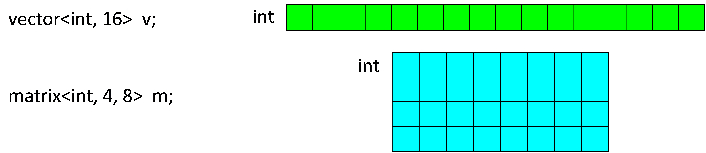

CM (C for Media) Language Specification¶
Revision 6.0
Primary Author(s): Kai Yu Chen, Guei-Yuan Lueh
Contributor(s): Chu-cheow Lim, Somnath Ghosh, Chunling Hu, Biju George, Weiyu Chen, Alexander Yermolovich, Puyan Lotfi, Julia Gould, Wei Pan, David Stuttard, Tim Renouf, Tim Corringham, Stephen Thomas
Legal Notices and Disclaimers¶
INFORMATION IN THIS DOCUMENT IS PROVIDED IN CONNECTION WITH INTEL® PRODUCTS. NO LICENSE, EXPRESS OR IMPLIED, BY ESTOPPEL OR OTHERWISE, TO ANY INTELLECTUAL PROPERTY RIGHTS IS GRANTED BY THIS DOCUMENT. EXCEPT AS PROVIDED IN INTEL’S TERMS AND CONDITIONS OF SALE FOR SUCH PRODUCTS, INTEL ASSUMES NO LIABILITY WHATSOEVER, AND INTEL DISCLAIMS ANY EXPRESS OR IMPLIED WARRANTY, RELATING TO SALE AND/OR USE OF INTEL PRODUCTS INCLUDING LIABILITY OR WARRANTIES RELATING TO FITNESS FOR A PARTICULAR PURPOSE, MERCHANTABILITY, OR INFRINGEMENT OF ANY PATENT, COPYRIGHT OR OTHER INTELLECTUAL PROPERTY RIGHT. UNLESS OTHERWISE AGREED IN WRITING BY INTEL, THE INTEL PRODUCTS ARE NOT DESIGNED NOR INTENDED FOR ANY APPLICATION IN WHICH THE FAILURE OF THE INTEL PRODUCT COULD CREATE A SITUATION WHERE PERSONAL INJURY OR DEATH MAY OCCUR. Intel may make changes to specifications and product descriptions at any time, without notice. Designers must not rely on the absence or characteristics of any features or instructions marked “reserved” or “undefined.” Intel reserves these for future definition and shall have no responsibility whatsoever for conflicts or incompatibilities arising from future changes to them. The information here is subject to change without notice. Do not finalize a design with this information. The products described in this document may contain design defects or errors known as errata which may cause the product to deviate from published specifications. Current characterized errata are available on request. Contact your local Intel sales office or your distributor to obtain the latest specifications and before placing your product order. Copies of documents which have an order number and are referenced in this document, or other Intel literature, may be obtained by calling 1-800-548-4725, or by visiting Intel’s Web Site. Intel processor numbers are not a measure of performance. Processor numbers differentiate features within each processor family, not across different processor families. See http://www.intel.com/products/processor_number for details. This document contains information on products in the design phase of development. BunnyPeople, Celeron, Celeron Inside, Centrino, Centrino Atom, Centrino Atom Inside, Centrino Inside, Centrino logo, Core Inside, FlashFile, i960, InstantIP, Intel, Intel logo, Intel386, Intel486, IntelDX2, IntelDX4, IntelSX2, Intel Atom, Intel Atom Inside, Intel Core, Intel Inside, Intel Inside logo, Intel. Leap ahead., Intel. Leap ahead. logo, Intel NetBurst, Intel NetMerge, Intel NetStructure, Intel SingleDriver, Intel SpeedStep, Intel StrataFlash, Intel Viiv, Intel vPro, Intel XScale, Itanium, Itanium Inside, MCS, MMX, Oplus, OverDrive, PDCharm, Pentium, Pentium Inside, skoool, Sound Mark, The Journey Inside, Viiv Inside, vPro Inside, VTune, Xeon, and Xeon Inside are trademarks of Intel Corporation in the U.S. and other countries. * Other names and brands may be claimed as the property of others.
Copyright (C) 2009-2016, Intel Corporation. All rights reserved.
Table of Contents
- CM (C for Media) Language Specification
- Legal Notices and Disclaimers
- 1 Introduction
- 2 Data Types
- 3 Operations
- 4 Functions
- 4.1 Function Qualifiers
- 4.2 User-defined functions
- 4.3 Built-in Functions
- 4.4 Common Types For Memory Operations
- 4.5 Dataport Interface
- 4.6 Shared Local Memory (SLM) and Groups Interface {Gen7+}
- 4.7 Sampler Interface
- 4.8 Adaptive Video Scaling
- 4.9 Video Analytics Functions (Gen8+)
- 4.10 Video Analytics Functions (Gen9+)
- 4.11 Video Analytics Functions HDC Write {Gen9+}
- 4.12 VME Interface
- 4.13 Media Walker Interface
- 4.14 Synchronization Functions
- 4.15 Raw Send Functions
- 4.16 CM label function
- 4.17 Formatted Output
- 4.18 Shared Virtual Memory (SVM)
- 4.19 Preprocessor Directives
- 4.20 Rounding mode and float control support
- 4.21 Miscellaneous Functions
- 5 CM Template Library
- Appendix A Media Kernel Example
- Appendix B VME Interface Access Macros
1 Introduction¶
1.1 Purpose / Scope¶
This document provides a specification for the CM (C for Media) language. CM is intended to support high-level programming of media kernels for the Intel® Graphics Media Accelerators [1]. The language is based on standard C++ language with some restrictions, plus additional features that are designed for easy expression of the inherent data parallelism in media applications and simplified interface with the architecture specific hardware features. The organization of this document is as follows:
- Section 2 describes the data types, including the supported subset of C++ data types, CM-defined vector and matrix object types, variable qualifiers, type conversion/casting rules, and restrictions.
- Section 3 describes the operations and member functions, in particular the set of overloaded operations on vectors and matrices.
- Section 4 describes the functions, user/kernel function qualifiers, calling conventions, built-in functions and inline assembly.
- Section 5 describes the functions that can be found in the CM Template Library
- Appendix A provides the media kernel example written in CM.
- Appendix B describes the access macros for VME interface.
This document assumes reader familiarity with the standard C++ language. It is not intended to describe details of the target device, CM software stack, or the CM compiler usage. Some background information is provided in the relevant sections. Please refer to the references listed in section 1.3 for further information.
1.2 Definitions, Acronyms, and Abbreviation¶
| Term | Description |
|---|---|
| CM | C for Media Language |
| C++ FE | Standard Intel® C++ Compiler Front-End |
| CM FE | CM Compiler Front-End |
| SIMD | Single Instruction Multiple Data |
| GPU | Graphics Processing Unit |
| GenX | Graphics core generations for Intel® Graphics Media Accelerators [1] |
| Host | IA-32 and Intel® 64 architecture processors |
| Device | Intel® GenX GPU |
| Kernel | A program that can be executed on GenX hardware |
| Thread | An instance of a kernel program that is executed on a GenX hardware |
| LSB | Least Significant Bit |
| GRF | General Register File, a set of general-purpose registers available in GenX |
| DWORD | Double-word, represents 4 bytes for GenX |
1.4 Revision History¶
Changes since CM 4.0¶
- Updated definition of sample32 API with new Output Format Control field
- Added cm_bf_insert, cm_bf_extract and cm_bf_reverse intrinsics
- Modified scatter/gather read/write to reflect the support for non dword types (e.g. now supports char, uchar, short, ushort) as well as being byte addressable (not supported pre IVB)
- Description of Gen10 HEVC VME Interface
Changes since CM 5.0¶
- Update the description of the cm_sincos() intrinsic
- Remove the requirement that the arguments to cm_min() and cm_max() have the same kind of type
- Clarified that a mask used as a SIMD control flow condition has each element considered “true” if not equal to zero. This is different to a mask’s use in the merge function, where only the least significant bit is considered.
- Added cm_pause intrinsic information
- Added new style write_typed_atomic (cm-llvm/cmc only)
- Removed the deprecated function genx_select, and appendix describing clang-cm
- Removed non-supported cm_fgetround and cm_fsetround intrinsics. Added description of _GENX_ROUNDING_MODE_ kernel directive
- Added scalar variant for scatter write (enables writing a scalar to buffers - only way to do this as all other variants require 2D surface)
- Moved topics relating to compiler usage to the CMC User Guide document.
Changes since CM 6.0¶
- For oword load read(), documented the deprecated MODIFIED_DWALIGNED modifier in addition to DWALIGNED.
- Clarified behaviour of cm_shr for different input types, added docs for cm_asr and newly implemented cm_lsr.
- Noted that
cm_sendandcm_sendscan be inside SIMD control flow, and that causes the SIMD width of the resultingsendorsendsto be adjusted from its default of 16. - Added new _GENX_FLOAT_CONTROL_ support to extend floating point control from just rounding modes (that _GENX_ROUNDING_MODE_ implements). The new support includes denorm control and ALT/IEEE for single precision float.
- Added half-precision floating-point (half) as one of basic scalar data types.
- Added new predicate arguments to write_atomic and typed_write_atomic.
- Added read_scaled and write_scaled.
2 Data Types¶
2.1 Scalar Data Types¶
CM supports the following basic scalar data types defined in C++:
- char, unsigned char (uchar), short, unsigned short (ushort), int, unsigned int (uint), float, half
- CM supports IEEE-754 conformant 16-bit half-precision floating point type. To enable this, use namespace “half_float” for host code, and keyword “half” for variable declaration.
- double: double-precision floating-point data type is only supported for Gen7+ hardware platform,
with the following usage restrictions:
- Double operands can be used with usual CM operators where floating-point operands are allowed, except division.
- Double operands can be used with the following CM intrinsic functions: cm_abs/cm_min/cm_max/cm_add/cm_mul/cm_sum (all operands must be of double type).
- Double operands cannot be used in DWord scattered read/write and DWord atomic write.
- unsigned long long, long long: unsigned and signed long long data types are 64-bit integers that are
supported for Gen8+ hardware platform with strict restrictions:
- unsigned long long and long long operands can be used with usual CM operators where long long operands are allowed, except multiplication and division.
- No CM intrinsic functions are allowed for unsigned long long and long long types.
- Unsigned long long and long long operands cannot be used in DWord scattered read/write and DWord atomic write.
- svmptr_t: represents an integer of pointer size for SVM (shared virtual memory, Gen8+). When declaring a struct that is in SVM, use svmptr_t for a pointer field. The size of svmptr_t is set by compiler options /DCM_PTRSIZE=32 or /DCM_PTRSIZE=64; use the size appropriate to whether the CM program will be run from a 32 bit or 64 bit application. See 4.18 Shared Virtual Memory (SVM).
The CM compiler will issue an error message for unsupported data types.
2.2 Compound Data Types¶
2.2.1 Base Object¶
To facilitate the expression of high-level data-parallel operations, CM provides the users with two kinds of compound data types for base objects: vector and matrix. These types are defined using syntax similar to C++ template classes. The parameters are the type of data element and the size of a vector/matrix, as described below, which must be compile-time constants according to the C++ language specification.
- “Vector< type, size>” represents a vector of length “size” with elements of type “type”.
- “Matrix<type, rows, columns>” represents a “rows” x “columns” matrix with elements of type “type”.
Note: The data element type must be a supported scalar data type as described in Section 2.1.
Note: The total size of a matrix or vector must be less than 4096 bytes.
Some examples of base object declarations:
2.2.2 Reference Object¶
In addition, CM allows the user to define two types of reference objects: vector_ref and matrix_ref, as described below:
- “vector_ref<type, size>” represents a reference to the elements of some base object that form a vector of length “size” with elements of type “type”.
- “matrix_ref<type, rows, columns>” represents a reference to the elements of some base object that form a “rows” x “columns” matrix with elements of type “type”.
The reference objects represent subsets of the base objects. While a base object occupies a storage space in the GRF that does not overlap with the storage space of other base objects, a reference object is used internally to refer to a region in the base object and share the storage space. All operations on a reference object result in applying these operations to the corresponding elements of the base object.
An example of reference object declaration:
matrix<short, 4, 8> m;
vector_ref<short, 8> r(m.row(2)); // row() returns the reference to a row
2.2.3 Structures¶
CM supports C structures containing all the supported scalar data types and vector/matrix object types described above, with the restriction that the structure data members must be properly aligned. The reference object cannot be declared as a structure field.
2.2.4 Masks¶
Masks for SIMD comparison and merge operations are represented in CM as follows:
- int – a vector mask packed into a single int type scalar.
- vector<ushort, size> – a vector mask.
- matrix<ushort, rows, columns> – a matrix mask.
Note: Only LSB of each vector/matrix mask element is significant when used in a merge function. However, when used as a SIMD control flow condition, each element is compared with 0, thus any non-zero value signifies “true”.
2.3 Other Built-in Data Types¶
The following built-in data types are defined in CM to represent different objects created and managed by the CM host runtime [6]. Variables of such data types must be passed through kernel function parameters, except the reserved global surface indexes CM_STATIC_BUFFER_0 / CM_STATIC_BUFFER_1 / CM_STATIC_BUFFER_2 / CM_STATIC_BUFFER_3. CM does not allow the explicit use of local/global variable or modification of such data types in kernel functions, except used as function call argument. CM does not allow alias among SurfaceIndexes used for dataport functions, as the ordering between typed and untyped accesses may not be guaranteed by either compiler or hardware.
- SurfaceIndex: represents a surface object used in dataport or other shared functions.
- SamplerIndex: represents a Sampler state object used in Sampler functions.
- VmeIndex: represents a VME state object used in VME functions.
CM supports the use of vector of SurfaceIndex in kernel function, which must be passed from host as kernel function parameters. CM does not allow modification, reference, or sub-vector select/iselect operation of SurfaceIndex vector (only basic member select operation vector(i) is allowed).
Usage example:
#include <cm/cm.h>
_GENX_MAIN_ void
linear(vector<SurfaceIndex, 2> surf_ids, uint h_pos, uint v_pos, int i, int j)
{
vector<int,8> in, out;
// ...
read(surf_ids(i), h_pos*24, v_pos*6, in);
// ...
write(surf_ids(j), h_pos*24, v_pos*6, out);
}
2.4 Variable Qualifiers¶
Global variable example:
#include <cm/cm.h>
_GENX_ matrix<float, 2, 2> M; // global variable declaration
_GENX_ float foo(matrix<float, 4, 4> m)
{
return cm_sum<float>(m);
}
_GENX_ void bar(vector<float, 16> v, float f)
{
matrix<float, 4, 4> m1;
m1 = v + f;
float s = foo(m1);
M = m1.select<2, 2, 2, 2>(0, 0) * s;
}
_GENX_MAIN_ void kernel(SurfaceIndex inbuf, SurfaceIndex outbuf,
int x_pos, int y_pos)
{
matrix<float, 4, 4> m;
vector<float, 16> v;
read(inbuf, x_pos, y_pos, m);
v = m;
bar(v, 0.5f);
write(outbuf, x_pos, y_pos, M);
}
CM supports the “__declspec(genx)” (#define’d to _GENX_) qualifier for global variables, which can be vector/matrix objects described above. Such variables are treated as normal local C++ variables declared in kernel functions. Functions marked with “__declspec(genx)”/”__declspec(genx_main)” can lexically reference variables marked with “__declspec(genx)”. This allows using them like global variables in addition to function parameters, which helps decreases GRF registers pressure and increases performance. Note that these global variables are thread private (i.e., a global variable is shared among the GenX kernel function marked with “__declspec(genx_main)” and all its callee GenX user functions marked with “__declspec(genx)” within the same GenX hardware thread). An example is given above (please refer to Section 3 and Section 4 for description on the operations and functions). CM does not support the initialization of global variables.
2.5 Type Conversions and Casting¶
Mixed type operation example:
void foo() {
matrix<float, 8, 4> m1;
matrix<float, 2, 2> m2;
vector_ref<float, 4> v1(m1.row(2));
m2 = v1;
// ...
}
CM allows mixed operations of vector and matrix objects of different shapes if the operands have the same number of data elements. The operand shape conformance is checked at compile time by C++ FE using template specialization rules for vector/matrix classes. An example is given above.
In such cases, CM compiler determines the data element type in the destination operand based on the source operand data types using standard C++ rules for handling mixed type computation for scalars (using template specialization mechanisms). Just like in standard C++, users may want to add explicit type conversions to change the default type promotion and conversion rules. An example is given here:
void foo()
{
vector<float, 8> f;
vector<int, 8> i;
// ...
f = i; // implicit type conversion
f = vector<short, 8>(i); // explicit type conversion
// ...
}
2.6 Restrictions¶
CM places restrictions on using the following standard C++ features in kernel functions and user defined functions written for the graphics device (described in Section 3.4):
- Pointers
- C++ references
- Classes other than the supported C structures and vector/matrix/vector_ref/matrix_ref types
- Class inheritance
- Arrays
- Exception handling
- Dynamic type identification
- Memory allocation
- Static variables
- Volatile variables
- Calls to external functions
3 Operations¶
3.1 Scalar Data Operations¶
CM supports the standard C++ operations for the allowed scalar data types described in Section 2.1.
For floating point operations, CM supports the operation modes implemented in GenX hardware which have deviations from the IEEE* Floating-point standard IEEE-754.
3.2 Compound Data Operations¶
CM provides a set of overloaded operators for manipulating vector and matrix objects. These are described below.
3.2.1 Assignment Operators¶
CM allows the user to assign the value for each data element in a vector/matrix object, as well as to use component-wise assignment between two objects. If a source operand is of scalar type then it is replicated. An example is given here:
vector<uchar, 2> vi, vo;
vi(0) = 117;
vi(1) = 231;
vo = vi; // vo(0) = 117, vo(1) = 231
matrix<uint, 4, 4> m1, m2;
matrix_ref<uint, 4, 4> m3 = m1;
char c = '?';
m1 = m2; // elements of m2 are copied to m1
m1 = c; // c is copied to all elements of m1
// (implicit type conversion char --> uint is performed)
m2 = m3; // elements of m1 are copied to m2
The assignment operator can be used between two matrix/vector objects with different shapes, if they have the same total number of data elements. The data elements are copied in the row-major fashion.
3.2.2 Vector/matrix Constructors¶
Constructor example:
vector<uchar, 2> vi;
vi(0) = 117;
vi(1) = 231;
vector<uchar, 2> vo(vi); // vo(0) = 117, vo(1) = 231
Similar to standard C++, constructors can be also used in CM to set the data elements in vector/matrix objects. One restriction is that vector_ref constructor can only take vector/vector_ref object with the same data type/size, which must be contiguous. Similarly, the matrix_ref constructor can only take matrix/matrix_ref object with the same data type/size, which must be contiguous. An example is given above.
To model the data movement instructions with saturation on the target device, CM provides a special variant of matrix/vector constructor with the “SAT” parameter, as illustrated here:
vector<int, 2> vi;
vector<uchar, 2> vo;
vi(0) = 155;
vi(1) = 275;
vo = vector<uchar, 2>(vi); // vo(0) = 155, vo(1) = 20
vo = vector<uchar, 2>(vi, SAT); // vo(0) = 155, vo(1) = 255
CM provides the following member functions that return the size of a matrix/vector object.
n_rows(): returns the number of rows in a matrix.
n_cols(): returns the number of columns in a matrix.
n_elems(): returns the number of elements in a vector.
3.2.3 Vector/Matrix Initializers¶
This feature allows users to initialize matrices and vectors through normal C array-initializers. Even though arrays cannot be used within GenX functions, this feature enables full C syntax of array-initialization for initializing matrices and vectors. It is advisable to use this feature instead of initializing matrices and vectors through assignments in the GenX kernels because the compiler would be able to analyze the initialization sequence and produce optimized vector-immediate or constant moves whenever possible. The syntax for initializing a vector or matrix during its declaration is simply passing an initialized global static array (initializer array) as shown in the example here:
#include <cm/cm.h>
const short init_v_B[2][4] = {1, 9, 17, 25, 33, 41, 49, 57};
const short init_Table[5][16] = {{4,6,8},{0,1,1,0,0},{8,9,7,6},{23},{45}};
const short init_0_7[8] = {0,1,2,3,4,5,6,7};
extern "C"
_GENX_MAIN_ void test1(SurfaceIndex OUT, int index)
{
vector<ushort, 8> v_0_7(init_0_7);
matrix<uint, 5, 16> m_Table(init_Table);
vector<short, 8> v_B(init_v_B);
// ...
}
The initial values of the global array or the initializer-array are sequentially copied to the vector or matrix. Currently, only integer values can be used for initialization using this feature. Floating- point values will be supported soon. Initializer array could be bigger or smaller than the initialized array – initialization would be done up to the minimum of their sizes. Initializer array can have more than one dimension – this gives more flexibility to users allowing them to skip initialization of some segments of the matrix or vector.
A matrix can also be efficiently declared and initialized with an arithmetic sequence by the built-in function cm_matrix as shown below. This function uses optimized GenX instruction sequence to perform the desired initialization. Note: requires inclusion of cm/cmtl.h header
Syntax: cm_matrix(M,T,R,C,I,S);
Where M – Name of the matrix; T – Type of the elements; R - #Rows; C - #Columns; I – Initial value of the sequence; S – Step of the sequence.
Example:
#include <cm/cm.h>
#include <cm/cmtl.h>
_GENX_ void test1()
{
cm_matrix(m, ushort, 4, 8, 10, 5);
// ...
}
Here, matrix ‘m’ is declared as a 4x8 ushort matrix and initialized to the values 10, 15, 20, 25, … Note that, you must not declare ‘m’ before as this function declares ‘m’ and then initializes.
Similarly, a vector can be declared and initialized efficiently with cm_vector function. Note: requires inclusion of cm/cmtl.h header:
Syntax: cm_vector(V,T,N,I,S);
Where V – Name of the vector; T – Type of the elements; N - #Elements; I – Initial value of the sequence; S – Step of the sequence.
Example:
#include <cm/cm.h>
#include <cm/cmtl.h>
_GENX_ void test1()
{
cm_vector(v, ushort, 16, 2, 3);
// ...
}
Here, vector ‘v’ is declared as a 16-element ushort vector and initialized to the values 2, 5, 8, … Note that, you must not declare ‘v’ before as this function declares ‘v’ and then initializes.
A pre-declared vector or matrix can also be efficiently assigned an arithmetic sequence with the following cmtl function (requires cm/cmtl header to be included):
Syntax: cmtl::cm_vector_assign(V,I,S);
Where V – Name of the vector (can use a matrix ‘format’-ed to a vector); I – Initial value of the sequence; S – Step of the sequence. Here initial value ‘I’ can be a variable.
Example:
cmtl::cm_vector_assign(v.select<10,1>(2), i, 3);
Here, 10 elements of vector ‘v’ are assigned as follows: v(2) = i; v(3) = i+3; v(4) = i+6, …
Note that, here ‘v’ is assumed to be already declared before.
3.2.4 Arithmetic Operators¶
CM supports the following arithmetic operators for vector/matrix objects:
+, -, *, /, %, +=, -=, *=
These are all component-wise operations that follow standard C++ rules for the corresponding scalar data computation. The operands must conform to the type conversion rules described in 2.5. Only when an operand is of scalar type, it is replicated as needed.
Arithmetic operation example:
vector<float, 8> v1, v2, v3;
matrix<uint, 2, 4> m1;
matrix<uint, 4, 2> m2;
v1 = v2 + v3;
v1 *= 2.0f;
m2 = m1 - v1; // the data elements of m1 and v1 are
// selected in row major ordering for the operation
// i.e. v1[0-3] is subtracted from m1.row(0),
// and v1[4-7] is subtracted from m1.row(1).
3.2.5 Shift Operators¶
CM supports the following shift operators for vector/matrix objects:
>>, <<, >>=, <<=
These are all component-wise operations that follow standard C++ rules for the corresponding scalar data computation.
3.2.6 Bitwise Operators¶
CM supports the following bitwise operators for vector/matrix objects:
&, |, ^, !, &=, |=, ^=, ~
These are all component-wise operations that follow standard C++ rules for the corresponding scalar data computation.
3.2.7 Logical Operators¶
CM supports logical operators which operate on values that are contextually converted to bool. These are guaranteed to be evaluated left-to-right within an expression.
&& ||
3.2.8 Comparison Operators¶
CM provides a set of overloaded comparison operators for vector/matrix objects. They perform component-wise comparison for the operands “x” and “y” and the result value is 0 for False, 1 for True. If one operand is of scalar type then it is replicated to match the size of another operand.
- vector<ushort, size> operator OP (VM x, VMC y);
- vector<ushort, size> operator OP (VMC x, VM y);
Note:
- OP is one of {<; <=; >; >=; ==; !=}
- VM is any type of vector/vector_ref/matrix/matrix_ref
- VMC is any type of vector/vector_ref/matrix/matrix_ref/<scalar_type>
The comparison operations can be used for assignment to a mask, as in the following example.
matrix<int, 8, 8> m1, m2;
matrix<ushort, 8, 8> m_mask;
vector<int, 4> v;
vector<ushort, 4> v_mask;
m_mask = ( m1 >= m2 );
v_mask = ( v != 0 );
3.2.9 Select Member Functions¶
CM provides a set of “select” functions for referencing a subset of the elements of vector/matrix objects. All these operations (except “iselect” and “replicate”) return a reference to the elements of matrix/vector objects, so they can be used as L-values in the statements.
() Operator: Standard Matrix/Vector Element-Access Operator¶
The two basic operators are described below:
- operator(ushort i): returns the i-th scalar element of a vector.
- operator(ushort i, ushort j): returns the (i, j)-th scalar element of a matrix, where “i” is the index of a row and “j” is the index of a column (the index starts from 0).
() select operation example:
vector<uint, 8> v1;
matrix<uint, 4, 4> m1;
m1(2,3) = v1(2);
Alternatively, CM supports the following syntax that is similar to the standard C array access operator:
[] Operator: Standard Matrix/Vector Element-Access Operator¶
The two basic operators are described below:
- operator[ushort i]: returns the i-th scalar element of a vector.
- operator[ushort i][ushort j]: returns the [i][j]-th scalar element of a matrix, where “i” is the index of a row and “j” is the index of a column (the index starts from 0)..
[] select operation example:
vector<uint, 8> v1;
matrix<uint, 4, 4> m1;
matrix<ushort, 4, 4> m2;
m1[2][3] = v1[2];
v1[m2[0][3]] += 1;
select: Sub-Matrix or Sub-Vector Selection with Regular Stride¶
CM also allows users to select a sub-matrix or sub-vector with regular strides using the following:
- select<size, stride>(ushort i=0): returns a reference to the sub-vector starting from the i-th element (“size” indicates the number of selected elements; “stride” indicates the distance between two adjacent selected elements).
- select<v_size, v_stride, h_size, h_stride>(ushort i=0, ushort j=0): returns a reference to the sub- matrix starting from the (i, j)-th element (“v_size” indicates the number of selected rows; “v_stride” indicates the distance between two adjacent selected rows; “h_size” indicates the number of selected columns; “h_stride” indicates the distance between two adjacent selected columns).
Sub-matrix/sub-vector select operation example:
vector<int, 8> a;
vector<int, 4> b;
// ...
b = a.select<4, 2>(1); // size=4, stride=2, offset=1 (elements a(1),
// a(3), a(5) and a(7) are copied to b)
a.select<4, 2>(0) = b; // selected elements of a are replaced
// with elements of b (all elements of b are
// copied to elements a(0), a(2), a(4), a(6))
.png)
matrix<float, 4, 8> m1;
matrix<float, 2, 2> m2;
// ...
m2 = m1.select<2, 2, 2, 4>(1, 2); // v_size = 2, v_stride = 2,
// h_size = 2, h_stride = 4,
// v_offset = 1, h_offset = 2.
.png)
m1.select<4, 1, 4, 2>(0, 0) = 0.0f; // selected elements of m1
// are replaced with 0.0f
.png)
Note: CM currently has the following restrictions on “select” operation:
- The selected sub-matrix / sub-vector must fit in the original matrix / vector (e.g., a row in the selected sub-matrix cannot exceed the original matrix width).
- The horizontal stride and vertical stride must be greater than 0.
- The horizontal / vertical stride must be 1 if the horizontal / vertical size is 1.
The following can be used in CM to return a reference to the whole object.
- select_all()
For instance, for a matrix object this function is equivalent to “select<rows, 1, columns, 1>(0, 0)”, where (rows, columns) specifies the original matrix size. An example is given below.
Select_all( ) operation example:
#include <cm/cm.h>
//A template function that multiplies an arbitrary matrix by 3
template <typename T, uint R, uint C>
_GENX_ inline void
mult3(matrix_ref<T, R, C> par)
{
par = par * 3;
}
_GENX_MAIN_ void
kern(matrix<int, 4, 2> p)
{
matrix<int, 4, 2> m(p); // m = p;
mult3(m.select_all()); // m = p * 3;
}
iselect: Indirect-Select or Vector Indexing¶
CM allows selecting a stream of elements from a vector based on the index-values in another vector. Doesn’t support Double data type on IVB.
iselect(idx) – which means indirectly select the vector elements as specified by the index or offset values in the vector ‘idx’, and return a new vector of length that is equal to the length of ‘idx’ vector. ‘idx’ vector could be of any arbitrary length. The data type of idx must be unsigned short. An example of its use is shown below:
iselect(idx) operation example:
vector<int, 65> inVector = 0;
vector<int, 8> outVector = 0;
vector<int, 12> tempVector = 0;
vector<ushort, 12> idx;
inVector.select<2,3>(4) = 19; // Here: inVector(4) = 19, inVector(7) = 19
//Now: inVector = {0,0,0,19,0,0,0,19,0...}
outVector = inVector.select<8,1>(0);
//Now: outVector = {0,0,0,19,0,0,0,19}
idx = 7; idx(0) = 2; idx(2) = 4; idx(3) = 10;
// Now: idx = {2,7,4,10,7,7,7,7,7,7,7,7}
tempVector = inVector.iselect(idx);
// Now: tempVector = {0,19,19,0,19,19,0,0,0,0}
tempVector = tempVector * 2;
// Now: tempVector = {0,38,38,0,38,38, ... }
outVector.select<8,1>(0) += tempVector.select<8,1>(1);
// Now: outVector = {38,38,0,57,38,38,57,38}
CM also allows selecting a stream of elements from a matrix based on vector offsets.
iselect(row, col) – which means indirectly select the matrix elements as specified by the row and column indices: row and col, both of which have unsigned short type, and return a new vector of length that is equal to the length of row or col vector. Note that row and col must have the same length. An example of its use is shown below.
iselect(row, col) operation example:
// Here: init_a = {{0, 2}, {4, 6}, {8, 10}, {12, 14}};
matrix<int, 4, 2> a(init_a);
// Here: init_b = {0, 2, 3}; init_c = {1, 0, 0}
vector<int, 3> b(init_b), c(init_c);
vector<int, 3> out;
out = a.iselect(b, c); // out = {2, 8, 12}
The iselect method returns a vector or matrix, rather than a vector_ref or a matrix_ref. Therefore iselect cannot be used as an lvalue.
replicate: source region replication operations¶
The replicate operations all operate on linear (one dimensional) regions of matrix/vectors. A row major layout is assumed for matrix objects in determining the linear order.
The following can be used in CM to replicate a matrix/vector object “REP” times and return a new vector of “REP” * “rows” * “columns” length, where (rows, columns) specifies the original matrix size.
- replicate<REP>()
The following can be used in CM to replicate “W” consecutive elements starting at (i,j)/ (i) from the matrix/vector object “REP” times, and return a new vector of “REP” * “W” length.
- replicate<REP, W>( ushort i=0, ushort j=0) )
- replicate<REP, W>( ushort i=0 )
The following can be used in CM to select/replicate “REP” blocks of “W” consecutive elements starting at (i,j)/(i) from the matrix/vector object with each block strided by “VS” elements, and return a new vector of “REP” * “W” length. Selected blocks of “W” elements will overlap if “VS” < “W”.
- replicate<REP, VS, W>( ushort i=0, ushort j=0) )
- replicate<REP, VS, W>( ushort i=0 )
The following can be used in CM to select/replicate “REP” blocks of “W” sequential elements with a stride of “HS” starting at (i,j)/(i) from the matrix/vector object with each block strided by “VS” elements, and return a new vector of “REP” * “W” length. Selected blocks of “W” elements will overlap if “VS” < “W”.
- replicate<REP, VS, W, HS>( ushort i=0, ushort j=0) )
- replicate<REP, VS, W, HS>( ushort i=0 )
row and column: Row and column region selection operations¶
The following can be used in CM to return a reference to the i-th row/column of a matrix object:
- row(i)
- column(i)
Row/column select operation example:
matrix<uint, 4, 4> m;
vector<uint, 4> v;
// ...
v = m.row(2); // the 2nd row of m is copied to v
m.column(3) = 0; // the 3rd column of m are replaced with 0.
3.2.10 Format Member Functions¶
The following can be used in CM to reinterpret the basic type (the type of data elements) of a matrix/vector and change the shape to another matrix/vector.
- format<type, rows, columns>( ): returns a reference to the calling object interpreted as a new matrix with the shape determined by the template parameters. The size of the new matrix must not exceed the size of the source object.
- format<type>( ): returns a reference to the calling object interpreted as a new vector with the size determined by the template type parameter.
The object to be formatted must be contiguous and aligned. Generally it is the user’s responsibility to ensure that the format usage is correct, and a warning is issued for each format operation. When a discontinuity is determined at compile time the CM compiler will issue an error message.
Format operation example:
matrix<int, 4, 4> m1;
// ...
matrix_ref<char, 4, 16> m2 = m1.format<char, 4, 16>( );
// m2 is a reference to the location of m1
// interpreted as a matrix 4x16 of chars.
matrix_ref<int, 2, 8> m3 = m1.format<int, 2, 8>( );
// m3 is a reference to the location of m1
// interpreted as a 2x8 integer matrix.
// (assuming little endian layout, i.e.
// the lowest byte address of element
// m1(0,0) is referenced by m2(0,0))
matrix<float, 2, 8> m4;
// ...
vector_ref<float, 16> v1 = m4.format<float>();
// v1 is a reference to the location of m4
// interpreted as a vector of 16 floats.
}
3.2.11 Merge Member Functions¶
To model the masked move operations on the target device, CM provides a set of “merge” functions for vector/matrix objects.
Merge operations with one source operand are defined as follows:
- void VM::merge(VMC x, int mask)
- void VM::merge(VMC x, VM mask)
Note:
- VM is any type of vector/vector_ref/matrix/matrix_ref
- VMC is any type of vector/vector_ref/matrix/matrix_ref/<scalar_type>
The semantic is that if a bit of the mask (or the LSB of the element of a vector/matrix mask) is set, the value of x (or the corresponding element of x if it is a vector/matrix object) is copied to the corresponding position of the method’s invoking vector/matrix object.
One-source merge operation example:
matrix<int,2,4> m, src;
matrix<uchar,2,4> mask;
// ...
m.merge(src, mask);
// m src mask ---> m
// 2 2 2 2 4 4 4 4 1 1 0 1 4 4 2 4
// 2 2 2 2 4 4 4 4 0 1 1 0 2 4 4 2
vector<int, 4> v1, v2;
int imask = 0xA;
// ...
v1.merge(v2, imask);
// v1 v2 imask ---> v1
// 2 2 2 2 4 4 4 4 0xA: 1010 2 4 2 4
Merge operations with two source operands are defined as follows:
- void VM::merge(VMC x, VMC y, int mask)
- void VM::merge(VMC x, VMC y, VM mask)
Note:
- VM is any type of vector/vector_ref/matrix/matrix_ref
- VMC is any type of vector/vector_ref/matrix/matrix_ref/<scalar_type>
Two-source merge operation example:
matrix<int,4,2> m, src1, src2;
matrix<ushort,4,2> mask;
// ...
m.merge(src1, src2, mask);
// m src_1 src_2 mask ---> m
// 2 2 4 4 8 8 1 0 4 8
// 2 2 4 4 8 8 1 1 4 4
// 2 2 4 4 8 8 0 1 8 4
// 2 2 4 4 8 8 0 0 8 8
The semantic is that if a bit of the mask (or the LSB of the element of a vector/matrix mask) is set, the value of x (or the corresponding element of x if it is a vector/matrix object) is copied to the corresponding position of the destination vector/matrix. Otherwise, the value of y (or the corresponding element of y if it is a vector/matrix object) is copied to the corresponding position of the method’s invoking vector/matrix object.
3.2.12 Boolean Reduction Functions¶
To facilitate boolean operations, CM provides two predefined boolean reduction functions on mask objects:
ushort vector<ushort, size>::any(void) / ushort matrix<ushort, R, C>::any(void)
This function will return a 1 if any of the value in the mask is non-zero; it will return 0 otherwise.
ushort vector<ushort, size>::all(void) / ushort matrix<ushort, R, C>::all(void)
This function will return a 1 if all the values in the mask are non-zero; it will return 0 otherwise.
There is no restriction on the size of the mask. The result of either function can be used as a scalar value and can be used in the standard C++ control-flow constructs.
Boolean reduction example:
matrix<int, 8, 8> m1;
// ...
// Vector mask
vector<ushort, 64> v_mask = (m1 > 0);
ushort result = v_mask.any();
if (result) {
// At least one value in m1 is > 0
// ...
}
if (v_mask.all()) {
// All values in m1 are > 0
// ...
}
// Matrix mask
matrix<ushort, 8, 8> m_mask = (m1 == 0);
if (m_mask.all()) {
// All values in m1 are 0
// ...
}
if ((m1 == 0).all()) {
// Another way to express the same thing without using an
// intermediate variable
// ...
}
while ((m1 == 0).any()) {
// As long as m1 still has a 0, keep looping...
// ...
}
3.3 Evaluation Order¶
For all operations (including both scalar and compound data operations), all operands are read first and then the operation is performed. For the example below, v2 is equal to the result of the original values of m1’s rows 0 and 1 plus m1’s row 1 and 2.
Evaluation order example:
matrix<float, 4, 2> m1;
// ...
vector_ref<float, 4> v1(m1.select<2,1,2,1>(0,0).format<float>());
// v1 is a reference to rows 0 and 1 of m1
vector_ref<float, 4> v2(m1.select<2,1,2,1>(1,0).format<float>());
// v2 is a reference to rows 1 and 2 of m1
v2 = v1 + v2;
3.4 Control flow¶
CM supports both scalar as well as SIMD control flow statements. Control flow statements define control flow (statement) blocks that are subject to the control condition.
3.4.1 Scalar control flow¶
Scalar control flow in CM is expressed by means of the standard C++ control flow statements – conditional statements (if-else/switch), loop statements (for/while/do-while), jump statements (break/continue/goto /return) or function calls.
In scalar control flow statements, the condition must be a scalar and all channels of statements within scalar control flow blocks are subject to the same scalar condition. The control flow is thus stated to be uniform for all SIMD channels within control flow blocks. There are no other restrictions imposed by using just scalar control flow statements.
The boolean reduction example above shows the use of scalar control flow.
3.4.2 SIMD control flow¶
SIMD control flow in CM is expressed by means of predefined C++ macros. The predefined macros used to express SIMD control flow and their scalar equivalents as shown in Table 3-1. The SIMD control flow statements allow the CM programmer to take advantage of the native SIMD control flow support available in GenX hardware. The execution semantics of these statements match the corresponding instructions available in GenX instruction set architecture.
SIMD control flow statements:
| Statement type | SIMD control flow statement | Scalar control flow equivalent |
|---|---|---|
| Conditional | SIMD_IF_BEGIN/SIMD_ELSE/ SIMD_ELSEIF/SIMD_IF_END | if-else |
| Loop | SIMD_DO_WHILE_BEGIN/SIMD_DO_WHILE_END | do-while |
| Jump | SIMD_BREAK/SIMD_CONTINUE | break/continue |
In SIMD control flow statements, the condition is generally a SIMD (vector or matrix) condition in place of a scalar condition. Optionally the condition may also be a scalar if the SIMD control flow statement is nested in a SIMD control flow block; such a scalar is considered to be replicated to the size of the SIMD width of the enclosing SIMD control flow block. The scalar size of the SIMD condition is stated to be the SIMD width of the associated block. The SIMD width of a SIMD control flow block with a scalar condition is defined to be the SIMD width of its enclosing SIMD control flow block.
SIMD control flow is defined on a per channel basis for all statements within a control flow block such that each channel may take independent control paths within the block. The control flow is thus stated to be divergent for different channels computed within the block. Generally the scalar size of all statements (number of channels) within SIMD control flow blocks must correspond with the scalar size of the SIMD condition, in which case each scalar condition component associates to each corresponding statement channel; optionally scalar statements with a SIMD width of one are allowed, in which case the scalar condition associated with the scalar statements is determined to be true if any of the channels in the SIMD control flow block is active and false otherwise.
SIMD control flow usage example:
// ...
SIMD_IF_BEGIN (cond) {
// ...
} SIMD_ELSE {
SIMD_IF_BEGIN (cond < 0) {
vector<int, 16> local;
// ...
local = v.select<16, 1>(offsetx + offsety * sizex);
// ...
} SIMD_ELSE {
// ...
} SIMD_IF_END;
} SIMD_IF_END;
// ...
SIMD_DO_WHILE_BEGIN {
vector<int, 16> local;
// ...
SIMD_IF_BEGIN (local < 0) {
SIMD_BREAK;
} SIMD_IF_END;
// ...
} SIMD_DO_WHILE_END (cond < 32);
// ...
}
The following constraints are placed on statements appearing within SIMD control flow blocks in order to guarantee consistent semantics and to allow for an efficient implementation.
- The SIMD width of a SIMD control flow block must be a power of two, greater than one and less than or equal to 16.
- Nested SIMD control flow blocks must have the same SIMD width as their enclosing SIMD blocks. Thus the SIMD width of all nested SIMD control flow blocks is determined by the SIMD width of outermost SIMD control flow block.
- All statements within a SIMD control flow block must either have their SIMD widths correspond to the SIMD width of its block, or must have a SIMD width equal to one. For statements that have destinations, requiring the statement to have a SIMD width equal to the SIMD width of its block implies that the destinations must be a vector/matrix of SIMD width elements; source expressions of statements may be either scalars of size one or vectors/matrices of SIMD width elements as permitted by the existing CM semantics.
- Scalar control flow statements and conditional expressions are not permitted in SIMD control flow blocks.
- Jump statements other than the SIMD_BREAK and SIMD_CONTINUE statements are not allowed in a SIMD control flow blocks. Likewise SIMD_BREAK and SIMD_CONTINUE statements are not allowed in a non-SIMD context.
- Calling user-defined functions within a SIMD context is not permitted. There are no restrictions imposed on calling intrinsic functions provided none of the other constraints are violated.
- If it is not possible to determine the SIMD width of an statement in a SIMD context, then that statement is considered illegal in a SIMD context. For example an statement such as (scalar1 * scalar2) without a destination is considered illegal in SIMD context.
- The source operands of CM reduction operators reduction operators (any(), all(), cm_sum(), cm_prod(), cm_reduction_max(), cm_reduction_min()) are required to have a size equal to the SIMD width of its immediate context. Furthermore reduction functions will perform reduction only on active scalar sub-elements of its source as determined by its context’s SIMD mask.
- The dot product, the sum of absolute differences and the line operators are not allowed in SIMD control flow blocks as they operate on tuple variable which are not well-defined when we use SIMD masks.
- Block read/write, sampler, VME and thread communication intrinsics are not allowed in SIMD control flow context. It is however possible to use scatter read/write statements in a SIMD context provided the read/write destination/source size is equal to the SIMD width of the block.
4 Functions¶
4.1 Function Qualifiers¶
CM allows the user to write standard C++ functions. In addition, the following attribute qualifiers are used to specify functions to be compiled for the graphics device. These cannot be used for the functions running on the host.
“_GENX_MAIN_” is used to specify a GenX kernel function, which cannot be called from another kernel function.
_GENX_MAIN_ void kernel(formal_parameters)
The formal parameter declarations must comply with the parameter passing restrictions described in Section 4.2. There can be more than one kernel function in a file.
“_GENX_” may be used (but is not required) to specify a user defined GenX function, which can be called from kernel functions or other user defined functions.
_GENX_ [inline] return_type function(formal_ parameters)
The optional “inline” qualifier is used to indicate if the function should be inlined by the CM compiler at the call site. If a user defined function with the “inline” specifier is not inlined, the CM compiler will issue a warning/error message.
A “genx_main” kernel function and all of the “genx” functions that it invokes transitively must be in the same file.
4.2 User-defined functions¶
CM supports user-defined function calls without recursion. Parameters to a user-defined CM function may have scalar type, vector/matrix type, or SurfaceIndex/SamplerIndex/VmeIndex type. In addition, vector_ref and matrix_ref types may be used to pass a vector/matrix object by reference. A user-defined function can return scalar values or vector/matrix types. vector_ref/matrix_ref return types are not supported.
Function usage example:
#include <cm/cm.h>
_GENX_ matrix<float, 2, 2> M; // global data declaration
_GENX_ matrix<float, 4, 4> plusone(matrix<float, 4, 4> m)
{
return m+1.0f;
}
_GENX_ float foo(matrix<float, 4, 4> m) // user defined GenX function
{
matrix<float, 4, 4> newm = plusone(m);
return cm_sum<float>(newm);
}
_GENX_ void bar_value(vector<float, 16> v, float f) // user defined GenX function
// using pass-by-value for "v"
{
matrix<float, 4, 4> m1;
m1 = v + f;
float s = foo(m1);
M = m1.select<2, 2, 2, 2>(0, 0) * s;
}
_GENX_ void bar_ref(vector<float, 16> v, float f, // user defined GenX function
matrix_ref<float, 2, 2> m) // using pass-by-reference for "m"
{
matrix<float, 4, 4> m1;
m1 = v + f;
float s = foo(m1);
m = m1.select<2, 2, 2, 2>(0, 0) * s;
}
_GENX_MAIN_ void kernel(SurfaceIndex inbuf, SurfaceIndex outbuf, // GenX kernel function
int x_pos, int y_pos)
{
matrix<float, 4, 4> m;
vector<float, 16> v;
read(inbuf, x_pos, y_pos, m);
v = m;
bar_value(v, 0.5f);
write(outbuf, x_pos, y_pos, M);
bar_ref(v, 1.0f, M);
write(outbuf, x_pos, y_pos + 2, M);
}
In the pass-by-value parameter passing scheme a copy of the function call argument value is associated with the corresponding subprogram parameter, whereas in the pass-by-reference scheme the address of the argument is associated with the subprogram pass-by-reference parameter. In the subprogram body every reference to the pass-by-reference formal becomes an indirect access using the address associated with the parameter. The pass-by-reference arguments are therefore required to be l-values (named objects having an address). Pass-by-reference parameters are declared by specifying the parameter types to be either of a matrix_ref or vector_ref type. No other pass-by-reference parameter types are allowed.
The pass-by-reference scheme is useful to copy-out values from the subprogram back to the caller. It also may be useful to convey large inputs to subprograms, as the amount of parameter conveying code will be reduced.
There is a restriction imposed on arguments passed by reference in order to allow for an efficient CM implementation. Specifically the restriction is that for a subprogram that uses pass-by-reference, the behavior must be the same as if we use a copy-in/copy-out semantic to convey the pass-by-reference argument; otherwise the CM program is said to be erroneous and may produce incorrect results. Such errors are not caught by the compiler and it’s up to the user to guarantee safety.
The implication of the above stated restriction is that no pass-by-reference argument that is written to in a subprogram (either directly or transitively by means of a nested subprogram call pass-by-reference argument) may overlap with another pass-by-reference parameter or a global variable that is referenced in the subprogram; in addition no pass-by-reference subprogram argument that is referenced may overlap with a global variable that is written to in the subprogram.
The reason for the above rule is to allow the implementation to opportunistically use copy-in/copy-out operations at the call/return sites in order to produce more optimal code by guaranteeing whole register alignment to the subprogram parameter.
Pass-by-reference parameters may be semantically classified as:
An important point to consider when using pass-by-reference parameters is that all reads and writes to pass-by-reference parameters involve register-indirect operations in GEN ASM. Register-indirect operations are limited to be SIMD8 (as opposed to SIMD16) in the GEN architecture. In addition there will be additional address computation code generated. This can result in increased code size if there are a lot of references to pass-by-ref parameters in the subprogram body. In addition, code involving register- indirect operations may execute in hardware with more latency because of more conservative dependency checks in hardware.
Another important point to consider is that arguments of pass-by-reference parameters are enforced to be whole register aligned at call sites. If the argument cannot be guaranteed to be whole register aligned then copy-in/copy-out operations are inserted which increases code size. In addition copy-in/copy-out operations are also inserted if the argument is not contiguous to guarantee correctness; however this is expected to be rare.
The implications are:
- If the IN parameter size is less than or equal to two GRFs it is better to use pass-by-value for it.
- OUT parameters are best updated only as a final statement in the subprogram body in order to reduce code involving register-indirect.
- If the arguments to most of the calls involving pass-by-reference IN parameters, are not whole register aligned then it is disadvantages to use pass-by-reference because of the compiler generated copy-in operations inserted to guarantee whole register alignment. Pass-by-value should probably not be used for such parameters. This is because the price paid involves both the copy-in/copy-out operations as well as the impact of the register-indirect operations. It’s better to use pass-by-value for IN parameters in such situations.
- If the arguments to most of the call to pass-by-reference OUT parameters are not whole register aligned then it is disadvantages to use pass-by-reference for the same reason as for IN parameters. For OUT parameters a global variable could be used to convey the return value back to the caller (a user generated copy-out operation).
- If the arguments to most of the calls to pass-by-reference are discontinuous then pass-by-reference should not be used.
- If there are a lot of references to pass-by-reference parameters in the subprogram body, it may be disadvantageous to use pass-by-reference for the parameter as the amount of register-indirect code produced increases. On the other hand if the parameter size is large and there are a lot of call sites then it may be advantageous to use pass-by-reference for the parameter.
4.3 Built-in Functions¶
CM defines a set of built-in or intrinsic functions that are efficiently translated to GenX instructions based on the target platform. It is advisable to use the intrinsic functions whenever possible to get better performance. The intrinsic functions have the following format:
Intrinsic_Function_Name<Template_Parameters> (Function_ Parameters)
The template parameters cannot be variables and are usually optional as they are determined by the compiler from the types of the function parameters. If present, template parameter ‘T’ represents the data type of the return value. Most intrinsic functions have a flag parameter, which is a bit mask that specifies the execution mode (e.g., the SAT bit indicates the saturation mode). Other bits in the flags are reserved. The default value of the flag is 0.
Usually, the intrinsic functions have the same type restrictions as the corresponding GenX instructions.
cm_abs<T>¶
Absolute value. The behavior is undefined if the result cannot fit in T.
- Parameter 1: matrix(_ref), vector(_ref) or scalar
- Parameter 2: flags (default is 0; use SAT for saturation)
- Return: vector or scalar
cm_add<T>¶
Add.
- Parameter 1: matrix(_ref), vector(_ref) or scalar
- Parameter 2: matrix(_ref), vector(_ref) or scalar
- Parameter 3: flags (default is 0; use SAT for saturation)
- Return: vector or scalar
cm_mul<T>¶
Multiply.
- Parameter 1: matrix(_ref), vector(_ref) or scalar
- Parameter 2: matrix(_ref), vector(_ref) or scalar
- Parameter 3: flags (default is 0; use SAT for saturation)
- Return: vector or scalar
Restrictions:
- The destination cannot be a float if any source operand is an integer;
- If one source operand is a float, the other source operand cannot be an integer;
- If one source operand is int/uint type, the SAT flag cannot be 1.
cm_quot<T>¶
Quotient of division.
- Parameter 1: matrix(_ref), vector(_ref) or scalar
- Parameter 2: matrix(_ref), vector(_ref) or scalar
- Parameter 3: flags (default is 0; no saturation available)
- Return: vector or scalar
Only integer type arguments are supported.
cm_mod<T>¶
Remainder (modulus) of division.
- Parameter 1: matrix(_ref), vector(_ref) or scalar
- Parameter 2: matrix(_ref), vector(_ref) or scalar
- Parameter 3: flags (default is 0; no saturation available)
- Return: vector or scalar
Only integer type arguments are supported.
cm_fmod<T>¶
Floating-point Remainder, same as C standard function fmod(): cm_fmod(y,x)=r, if y = qx + r where q is an integer and r<x.
NOTE: now part of cmtl; see 5 CM Template Library (requires cmtl:: namespace)
- Parameter 1: matrix(_ref), vector(_ref) or scalar
- Parameter 2: matrix(_ref), vector(_ref) or scalar
- Parameter 3: flags (default is 0; use SAT for saturation)
- Return: vector or scalar
Only floating-point type arguments are supported.
cm_div<T>¶
Quotient and remainder of division.
- Parameter 1: matrix(_ref), vector(_ref)
- Parameter 2: matrix(_ref), vector(_ref) or scalar
- Parameter 3: matrix(_ref), vector(_ref) or scalar
- Parameter 4: flags (default is 0; no saturation available)
- Return: vector or scalar (quotient); the remainder is returned into the 1st parameter (passed by ref).
Only integer type arguments are supported.
cm_avg<T>¶
Average value rounded up.
- Parameter 1: matrix(_ref), vector(_ref)
- Parameter 2: matrix(_ref), vector(_ref) or scalar
- Parameter 3: flags (default is 0; use SAT for saturation)
- Return: vector or scalar
cm_dp2, cm_dp3, cm_dp4¶
Two-, three- and four-wide dot product.
- Parameter 1: matrix(_ref), vector(_ref)
- Parameter 2: matrix(_ref), vector(_ref) or scalar
- Parameter 3: flags (default is 0; use SAT for saturation)
- Return: vector
Only floating-point type arguments are supported.
Dot product, line and sum of difference operators are not permitted in a SIMD control flow context.
cm_dp4 performs the 4-wide dot product operation for each 4-tuple of elements in the input vector/matrix parameters, and sets the same scalar product result to each element of the corresponding 4-tuple in the return value.
cm_dph¶
Four-wide homogeneous dot product.
- Parameter 1: matrix(_ref), vector(_ref)
- Parameter 2: matrix(_ref), vector(_ref) or scalar
- Parameter 3: flags (default is 0; use SAT for saturation)
- Return: vector
Only floating-point type arguments are supported.
Dot product, line and sum of difference operators are not permitted in a SIMD control flow context.
cm_frc¶
Fraction.
- Parameter 1: matrix(_ref), vector(_ref)
- Return: vector
Only floating-point type arguments are supported.
This function returns a vector that contains the fractional portion of each component in the input vector/matrix.
cm_line¶
Component-wise linear equation. First vector provides the scalar coefficients – Only 1st and 4th element of the vector are used as the two scalar coefficients needed for this function.
- Parameter 1: vector of length 4
- Parameter 2: matrix(_ref), vector(_ref), multiple of 8 elements
- Parameter 3: flags (default is NOSAT; use SAT for saturation)
- Return: vector
This function computes the linear equation R[i] = X[0] * Y[i] + X[3] for each element Y[i] in the second input parameter, and sets the result to the corresponding element R[i] in the return value. The scalar values X[0] and X[3] used in the linear equation correspond to the first and fourth elements of the 4-tuple in the first input parameter.
Only floating-point type arguments are supported.
Dot product, line and sum of difference operators are not permitted in a SIMD control flow context.
cm_lzd¶
Leading zero detection.
- Parameter 1: matrix(_ref), vector(_ref) or scalar
- Parameter 2: flags (default is 0)
- Return: vector or scalar
This function computes the number of leading zeros in each component of the input parameter, and returns the result stored in a vector (for vector/matrix input parameter) or a scalar (for scalar input parameter).
cm_max<T>, cm_min<T>¶
Maximum and minimum.
- Parameter 1: matrix(_ref), vector(_ref) or scalar
- Parameter 2: matrix(_ref), vector(_ref) or scalar
- Parameter 3: saturation (default is NOSAT; use SAT for saturation)
- Return: vector or scalar
cm_rndd¶
Round down.
- Parameter 1: matrix(_ref), vector(_ref) or scalar.
- Parameter 2: flags (default is 0; use SAT for saturation).
- Return: vector or scalar.
cm_floor<T>¶
floor(x) is the largest integer not greater than x – same functionality as cm_rndd.
NOTE: now part of cmtl; see 5 CM Template Library (requires cmtl:: namespace)
- Parameter 1: matrix(_ref), vector(_ref) or scalar.
- Parameter 2: flags (default is 0; use SAT for saturation).
- Return: vector or scalar.
cm_rndu¶
Round up.
- Parameter 1: matrix(_ref), vector(_ref) or scalar.
- Parameter 2: flags (default is 0; use SAT for saturation).
- Return: vector or scalar.
cm_ceil<T>¶
ceil(x) is the smallest integer not less than x – same functionality as cm_rndu.
NOTE: now part of cmtl; see 5 CM Template Library (requires cmtl:: namespace)
- Parameter 1: matrix(_ref), vector(_ref) or scalar.
- Parameter 2: flags (default is 0; use SAT for saturation).
- Return: vector or scalar.
cm_rnde¶
Round even.
- Parameter 1: matrix(_ref), vector(_ref) or scalar.
- Parameter 2: flags (default is 0; use SAT for saturation).
- Return: vector or scalar.
cm_rndz¶
Round zero.
- Parameter 1: matrix(_ref), vector(_ref) or scalar.
- Parameter 2: flags (default is 0; use SAT for saturation).
- Return: vector or scalar.
cm_sad2<T>¶
Two-wide sum of absolute difference.
- Parameter 1: matrix(_ref), vector(_ref)
- Parameter 2: matrix(_ref), vector(_ref) or scalar
- Parameter 3: flags (default is 0; use SAT for saturation).
- Return: vector or scalar
In a SIMD control flow context reduction functions will perform reduction only on active channels of its source as determined by its context’s SIMD mask.
Dot product, line and sum of difference operators are not permitted in a SIMD control flow context.
cm_sada2<T>¶
Compute two-wide sum of absolute difference between src1 and src2, add that to src3, and store the result to the first channel per 2-tuple in dst.
- Parameter 1: matrix(_ref) or vector(_ref)
- Parameter 2: matrix(_ref), vector(_ref) or scalar
- Parameter 3: matrix(_ref) or vector(_ref)
- Parameter 4: flags (default is 0; use SAT for saturation).
- Return: vector or scalar
In a SIMD control flow context reduction functions will perform reduction only on active channels of its source as determined by its context’s SIMD mask.
Dot product, line and sum of difference operators are not permitted in a SIMD control flow context.
cm_sum<T>¶
Sum of all elements.
- Parameter 1: matrix(_ref) or vector(_ref).
- Parameter 2: saturation (default is NOSAT; use SAT for saturation).
- Return: scalar.
In a SIMD control flow context reduction functions will perform reduction only on active channels of its source as determined by its context’s SIMD mask.
The order of continuant scalar operation is not guaranteed and the correctness of result should not depend on computation order.
cm_reduced_min<T>¶
Find the minimum element of a matrix/vector. T is the type of the elements.
- Parameter 1: matrix(_ref) or vector(_ref).
- Parameter 2: saturation (default is NOSAT; use SAT for saturation).
- Return: scalar.
In a SIMD control flow context reduction functions will perform reduction only on active channels of its source as determined by its context’s SIMD mask.
cm_reduced_max<T>¶
Find the maximum element of a matrix/vector. T is the type of the elements.
- Parameter 1: matrix(_ref) or vector(_ref).
- Parameter 2: saturation (default is NOSAT; use SAT for saturation).
- Return: scalar.
In a SIMD control flow context reduction functions will perform reduction only on active channels of its source as determined by its context’s SIMD mask.
cm_prod<T>¶
Product of all elements.
- Parameter 1: matrix(_ref) or vector(_ref).
- Parameter 2: saturation (default is NOSAT; use SAT for saturation).
- Return: scalar4.
Restrictions:
- The destination cannot be a float if any source operand is an integer;
- If one source operand is a float, the other source operand cannot be an integer;
- If one source operand is int/uint type, the SAT flag cannot be 1.
The order of continuant scalar operation is not guaranteed and the correctness of result should not depend on computation order.
This operation is currently not supported in the SIMD control flow context.
cm_inv¶
Inversion (dst = 1.0/src).
- Parameter 1: matrix(_ref), vector(_ref) or scalar
- Parameter 2: flags (default is 0; use SAT for saturation).
- Return: vector or scalar
Only half and single precision floating-point type arguments are supported.
cm_log¶
Logarithm of base 2. * Parameter 1: matrix(_ref), vector(_ref) or scalar * Parameter 2: flags (default is 0; use SAT for saturation) * Return: vector or scalar
Restrictions:
- The destination cannot be a floating-point type if any source operand is an integer;
- If one source operand is a floating-point type, the other source operand cannot be an integer;
- If one source operand is int/uint type, the SAT flag cannot be 1.
- double-precision floating-point types are not supported.
cm_exp¶
Exponent of base 2.
- Parameter 1: matrix(_ref), vector(_ref) or scalar
- Parameter 2: flags (default is 0; use SAT for saturation).
- Return: vector or scalar
Only half and single precision floating-point type arguments are supported.
cm_sqrt¶
Square root.
- Parameter 1: matrix(_ref), vector(_ref) or scalar
- Parameter 2: flags (default is 0; use SAT for saturation).
- Return: vector or scalar
Only half and single precision floating-point type arguments are supported.
cm_sqrt_ieee¶
Square root with IEEE compliant semantics.
- Parameter 1: matrix(_ref), vector(_ref) or scalar
- Parameter 2: flags (default is 0; use SAT for saturation).
- Return: vector or scalar
Only single or double precision floating-point type arguments are supported.
cm_rsqrt¶
dst = 1.0/sqrt(src).
- Parameter 1: matrix(_ref), vector(_ref) or scalar
- Parameter 2: flags (default is 0; use SAT for saturation)
- Return: vector or scalar
Only half or single precision floating-point type arguments are supported.
cm_pow¶
Power.
- Parameter 1: matrix(_ref), vector(_ref) or scalar
- Parameter 2: scalar for Gen6, matrix(_ref), vector(_ref) or scalar for Gen6.
- Parameter 3: flags (default is 0; use SAT for saturation).
- Return: vector or scalar
Only half or single precision floating-point type arguments are supported.
cm_sin¶
Sine. * Parameter 1: matrix(_ref), vector(_ref) or scalar * Parameter 2: flags (default is 0; use SAT for saturation). * Return: vector or scalar
Only half and single precision floating-point type arguments are supported.
cm_cos¶
Cosine.
- Parameter 1: matrix(_ref), vector(_ref) or scalar
- Parameter 2: flags (default is 0; use SAT for saturation).
- Return: vector or scalar
Only half and single precision floating-point type arguments are supported.
cm_sincos¶
Sine and cosine.
- Parameter 1: matrix_ref, vector_ref
- Parameter 2: matrix(_ref) or vector(_ref)
- Parameter 3: flags (default is 0; use SAT for saturation)
- Return: vector or matrix (sine) and cosine into the 1st parameter (passed by ref)
Only half and single precision floating-point type arguments are supported.
cm_asin¶
Inverse function of sine.
- Parameter 1: matrix(_ref), vector(_ref) or scalar
- Parameter 2: flags (default is 0; use SAT for saturation).
- Return: vector or scalar
Only floating-point type arguments are supported.
cm_acos¶
Inverse function of cosine.
- Parameter 1: matrix(_ref), vector(_ref) or scalar
- Parameter 2: flags (default is 0; use SAT for saturation).
- Return: vector or scalar
Only floating-point type arguments are supported.
cm_atan¶
Inverse function of tangent.
- Parameter 1: matrix(_ref), vector(_ref) or scalar
- Parameter 2: flags (default is 0; use SAT for saturation).
- Return: vector or scalar
Only floating-point type arguments are supported.
cm_atan2¶
Same as C standard function atan2().
NOTE: now part of cmtl; see 5 CM Template Library (requires cmtl:: namespace)
- Parameter 1: matrix(_ref), vector(_ref) or scalar
- Parameter 2: matrix(_ref), vector(_ref) or scalar
- Parameter 3: flags (default is 0; use SAT for saturation).
- Return: matrix, vector or scalar
Only floating-point type arguments are supported.
cm_atan2_fast¶
Faster version of cm_atan2, but has a lower precision – only accurate up to 0.01, where cm_atan2 is precise up to 0.00001.
NOTE: now part of cmtl; see 5 CM Template Library (requires cmtl:: namespace)
- Parameter 1: matrix(_ref), vector(_ref) or scalar
- Parameter 2: matrix(_ref), vector(_ref) or scalar
- Parameter 3: flags (default is 0; use SAT for saturation).
- Return: matrix, vector or scalar
Only floating-point type arguments are supported.
cm_div_ieee¶
Division with IEEE compliant semantics.
- Parameter 1: matrix(_ref), vector(_ref) or scalar
- Parameter 2: matrix(_ref), vector(_ref) or scalar
- Parameter 3: flags (default is 0; use SAT for saturation)
- Return: vector or scalar.
Only single or double precision floating-point type arguments are supported.
cm_imul¶
Hi 32 bits and low 32 bits of the 64-bit result of integer multiply.
- Parameter 1: matrix(_ref), vector(_ref)
- Parameter 2: matrix(_ref) or vector(_ref) or scalar
- Parameter 3: matrix(_ref) or vector(_ref) or scalar
- Parameter 4: flags (default is 0; no saturation available)
- Return: vector or scalar (hi 32 bits); the low 32 bits is returned into the 1st parameter (passed by ref)
Only integer type arguments are supported.
cm_pack_mask¶
Pack a vector / matrix mask into an integer
- Parameter 1: matrix(_ref), vector(_ref) .
- Return: scalar.
The vector/matrix data type must be unsigned short, and the size must be 8, 16, or 32.
This operation is currently not supported in the SIMD control flow context.
cm_unpack_mask<T, SZ>¶
Unpack an integer to a vector mask
- Parameter 1: scalar.
- Return: vector
The vector/matrix data type must be unsigned short, and the size must be 8, 16, or 32.
This operation is currently not supported in the SIMD control flow context.
cm_cbit {Gen7+}¶
Count component-wise the total bits set in source operand .
- Parameter 1: matrix(_ref), vector(_ref) or scalar.
- Return: vector or scalar.
The source operand must be of “int” type. The destination operand must be of “unsigned int” type.
cm_fbl {Gen7+}¶
Find component-wise the first bit from LSB side.
- Parameter 1: matrix(_ref), vector(_ref) or scalar
- Return: vector or scalar
The source operand must be of integer type. The destination operand must be of “unsigned int” type. If the source operand is equal to 0, returns 0xFFFFFFFF.
cm_fbh {Gen7+}¶
Find component-wise the first bit from MSB side.
- Parameter 1: matrix(_ref), vector(_ref) or scalar.
- Return: vector.
Both the source and destination operands must be of the same “int” or “unsigned int” type. If the source operand type is unsigned, returns the count of leading zeros from the MSB side. If the source operand type is signed and positive, returns the count of leading zeros from MSB side. If the operand type is signed and negative, returns the count of leading ones from MSB side. If the source operand is equal to 0 and the type is unsigned, returns 0xFFFFFFFF. If the source operand is equal to 0 or 0xFFFFFFFF and the type is signed, returns 0xFFFFFFFF.
cm_rdtsc¶
Returns time stamp information as a vector of 4 32bit values: 1st and 2nd are the low and high bits of the 64bit timestamp, 3rd contain a bit that is set when a context switch occurs, and the 4th is unused.
- Return: vector
The return vector data type must be unsigned int.
cm_shr¶
Perform right bit shift. The sign of parameter 1 dictates what operation is actually carred out and this matches the behavior of the >> operator (lsr for unsigned, asr for signed)
- Parameter 1: matrix(_ref), vector(_ref)
- Parameter 2: matrix(_ref), vector(_ref)
- Parameter 3: saturation (default is NOSAT; use SAT for saturation)
- Return: vector
Only bits 0-5 are read from second operand, MSBs are disregarded.
Note: It is usually simpler to use the >> operator with appropriate cast to an unsigned or signed type to get the desired behavior from >>, followed by an optional saturation intrinsic to achieve the same effect for the same cost and with clearer meaning.
cm_lsr¶
Perform logical right bit shift.
- Parameter 1: matrix(_ref), vector(_ref)
- Parameter 2: matrix(_ref), vector(_ref)
- Parameter 3: saturation (default is NOSAT; use SAT for saturation)
- Return: vector
The semantics of the operation are the usual integer promotions but with an implicit cast to an unsigned type prior to the shift. This can be described by the following pseudo code:
- Parameter 1 is cast according to integer promotion rules for bitwise shift (e.g. char -> int)
- Result of this case is then cast to equivalent unsigned type (e.g. int -> unsigned int)
- Result of this is then shifted (e.g. Val >> Parameter 2)
- Result is then converted to the result type with optional saturation
Only bits 0-5 are read from second operand, MSBs are disregarded.
Note: It is usually simpler to use the >> operator with appropriate cast to an unsigned type, followed by an optional saturation intrinsic to achieve the same effect for the same cost and with clearer meaning.
cm_asr¶
Perform arithmetic right bit shift.
- Parameter 1: matrix(_ref), vector(_ref)
- Parameter 2: matrix(_ref), vector(_ref)
- Parameter 3: saturation (default is NOSAT; use SAT for saturation)
- Return: vector
The semantics of the operation are the usual integer promotions but with an implicit cast to a signed type prior to the shift. This can be described by the following pseudo code:
- Parameter 1 is cast according to integer promotion rules for bitwise shift (e.g. unsigned char -> unsigned int)
- Result of this case is then cast to equivalent signed type (e.g. unsigned int -> int)
- Result of this is then shifted (i.e. Val >> Parameter 2)
- Result is then converted to the result type with optional saturation
Only bits 0-5 are read from second operand, MSBs are disregarded.
Note: It is usually simpler to use the >> operator with appropriate cast to a signed type, followed by an optional saturation intrinsic to achieve the same effect for the same cost and with clearer meaning.
cm_shl¶
Perform logical left bit shift.
- Parameter 1: matrix(_ref), vector(_ref)
- Parameter 2: matrix(_ref), vector(_ref)
- Parameter 3: saturation (default is NOSAT; use SAT for saturation), if 33 bits are over flown behavior is undefined. Only lower 5 bits of src 2 are used for shifting.
- Return: vector
Parameter 1 should be of unsigned type, otherwise behavior is unspecified.
Only bits 0-5 are read from second operand, MSBs are disregarded.
cm_pln¶
Component-wise plane function: dst[i] = src0[0] * src1[i] + src0[1] * src2[i] + src0[3]
- Parameter 1: vector of length 4
- Parameter 2: matrix(_ref) or vector(_ref)
- Parameter 3: matrix(_ref) or vector(_ref)
- Parameter 4: saturation (default is NOSAT; use SAT for saturation)
- Return: vector.
This is not allowed in SIMD Control Flow context. The size of destination, 2nd and 3rd source operands must be a multiple of 8. The operand type must be float.
cm_lrp¶
Component-wise linear interpolation function: dst[i] = src1[i]*src0[i] + src2[i]*(1.0 - src0[i])
- Parameter 1: matrix(_ref) or vector(_ref)
- Parameter 2: matrix(_ref) or vector(_ref)
- Parameter 3: matrix(_ref) or vector(_ref)
- Return: vector.
This is not allowed in SIMD Control Flow context. The operand type must be float and the size must be a multiple of 4.
cm_bf_insert¶
Bitfield insert.
Dst = src with bits defined as width bits starting at offset replaced with value.
Only int and uint supported.
- Parameter 1: width (vector)
- Parameter 2: offset (vector)
- Parameter 3: val (vector)
- Parameter 4: src (vector)
- Return: vector
cm_bf_extract¶
Bitfield extract.
Dst = field from src at offset for width bits.
Dst sign extended for signed types.
Only int and uint supported.
- Parameter 1: width (vector)
- Parameter 2: offset (vector)
- Parameter 3: src (vector)
- Return: vector
cm_bf_reverse¶
Bitfield reverse. Bitwise reverse of unsigned 32 bit src operand.
- Parameter 1: src (vector)
- Return: vector
An example of intrinsic function usage:
matrix<float, 2, 2> angle;
vector<float, 4> r;
// angle = ...;
// r = ...;
//Possible values of the elements of r is 0, 1, 2, ... 255
r = cm_mul<uchar>(cm_sin(angle), r, SAT);
matrix<int, 2, 3> m1(20000), m2(20000);
vector<int,6> v1, v2;
//
v1 = cm_add<short>(m1, m2, SAT); // v1 = 32767
v2 = cm_add<short>(m1, m2); // v2 = -25536
//
vector<float, 8> v3; // v3 = {1.0, 1.0, 1.0, 1.0, 2.0, 2.0, 2.0, 2.0};
vector<float, 8> v4; // v4 = {0.2, 0.2, 0.2, 0.2, 0.3, 0.3, 0.3, 0.3};
vector<float, 8> v5;
// ...
v5 = cm_dp4<float>(v3, v4); // v5 = {0.8, 0.8, 0.8, 0.8, 2.4, 2.4, 2.4, 2.4}
vector<float, 4> v6; //v6 = {0.1, 0.2, 0.3, 0.4};
vector<float, 8> v7; // v7 = {1.0, 2.0, 4.0, 8.0, 16.0, 32.0, 64.0, 128.0};
vector<float, 8> v8;
// ...
v8 = cm_line<float>(v6, v7); // v8 = {0.5, 0.6, 0.8, 1.2, 2.0, 3.6, 6.8, 13.2}
4.4 Common Types For Memory Operations¶
ChannelMaskType – an enumeration constant that specifies which of the R,G,B,A channels should be enabled for a dataport or sampler operation. At least one of the channels must be activated, and there are 15 possible values:
- CM_R_ENABLE
- CM_G_ENABLE
- CM_GR_ENABLE
- CM_B_ENABLE
- CM_BR_ENABLE
- CM_BG_ENABLE
- CM_BGR_ENABLE
- CM_A_ENABLE
- CM_AR_ENABLE
- CM_AG_ENABLE
- CM_AGR_ENABLE
- CM_AB_ENABLE
- CM_ABR_ENABLE
- CM_ABG_ENABLE
- CM_ABGR_ENABLE
CmAtomicOpType – an enumeration constant that specifies the operation performed for the various atomic read-modify-write library functions. The atomic operation and the returned result for a single destination location are described in the table below. The new value of the destination (new_dst) is computed as indicated based on the old value of the destination (old_dst) and up to two sources included in the message (src0 and src1). All operations below, except ATOMIC_MAXSINT and ATOMIC_MINSINT, treat all values as unsigned integers.
| Atomic Operation | New Value at address | Return value |
|---|---|---|
| ATOMIC_AND | old_dst & src0 | old_dst |
| ATOMIC_OR | old_dst | src0 | old_dst |
| ATOMIC_XOR | old_dst ^ src0 | old_dst |
| ATOMIC_XCHG | src0 | old_dst |
| ATOMIC_INC | old_dst + 1 | old_dst |
| ATOMIC_DEC | old_dst - 1 | old_dst |
| ATOMIC_ADD | old_dst + src0 | old_dst |
| ATOMIC_SUB | old_dst - src0 | old_dst |
| ATOMIC_REVSUB | src0 - old_dst | old_dst |
| ATOMIC_MAXSINT | imax(old_dst, src0) | old_dst |
| ATOMIC_MINSINT | imin(old_dst, src0) | old_dst |
| ATOMIC_MAX | umax(old_dst, src0) | old_dst |
| ATOMIC_MIN | umin(old_dst, src0) | old_dst |
| ATOMIC_CMPXCHG | (src1 == old_dst) ? src0 : old_dst | old_dst |
| ATOMIC_PREDEC | old_dst - 1 | new_dst |
4.5 Dataport Interface¶
Media Block Read/Write¶
CM provides several qualifiers that can be applied to the surface index:
| Qualifier | |
|---|---|
| TOP_FIELD | indicates only the top field surface data are needed. |
| BOTTOM_FIELD | indicates only the bottom field surface data are needed. This may not be used together with TOP_FIELD. |
For out-of-bounds read, the address is clamped to the nearest edge of the surface, and the pixel in that position is returned. Out-of-bound writes are dropped. Out-of-bound behavior is undefined, however, if the surface width is not DWord-aligned.
The valid combination of block width and height is described in the following table.
| Block Width (bytes) | Maximum Block Height (rows) |
|---|---|
| 1-4 | 64 |
| 5-8 | 32 |
| 9-16 | 16 |
| 17-32 | 8 |
| 33-64 {BDW+} | 4 |
Supported Surfaces:
| Format | Type | Notes |
|---|---|---|
| Any | 2D |
|
read¶
void read (SurfaceIndex IND, int X, int Y, matrix_ref<TYPE, M, N> m);
| Parameters | |
|---|---|
| IND | surface index, which must correspond to a 2D type surface (optionally qualified as specified above) |
| X | zero based X-coordinate of the left upper rectangle corner in BYTES; For regular surfaces, the X-offset must be pixel aligned. For surfaces with compact format (e.g., YUY2), this must be DWord (i.e. 4 bytes) aligned. |
| Y | zero based Y-coordinate of the left upper rectangle corner in ROWS. |
| m | the data location to be read / written: the width of matrix m must be pixel aligned. |
Usage example:
read (TOP_FIELD(ind), ...) // only reads top field surface data
write¶
void write(SurfaceIndex IND, int X, int Y, const matrix m);
| Parameters | |
|---|---|
| IND | surface index, which must correspond to a 2D type surface (optionally qualified as specified above) |
| X | zero based X-coordinate of the left upper rectangle corner in BYTES; must be DWord (i.e. 4 bytes) aligned. |
| Y | zero based Y-coordinate of the left upper rectangle corner in ROWS. |
| m | the data location to be read / written: the width of matrix m must be DWord (i.e. 4 bytes) aligned. |
Media Block Read/Write for Planar Surface¶
CM provides several qualifiers that can be applied to the surface index:
| Qualifier | |
|---|---|
| TOP_FIELD | indicates only the top field surface data are needed. |
| BOTTOM_FIELD | indicates only the bottom field surface data are needed. This may not be used together with TOP_FIELD. |
The planar media block read and write have the same restrictions on the block width and height as the regular media read/write.
Supported Surfaces:
| Format | Type | Notes |
|---|---|---|
| CM_SURFACE_FORMAT_NV12 | 2D |
|
read_plane¶
void read_plane(SurfaceIndex IND, CmSurfacePlaneIndex plane_index, int X, int Y, matrix_ref m);
| Parameters | |
|---|---|
| IND | surface index, which must correspond to a 2D type surface with planar format (optionally qualified as specified above) |
| plane_index | the index to the plane. CmSurfacePlaneIndex is an enumerator type with 4 possible values, as listed below. This must be a compile time constant.
|
| X | zero based X-coordinate of the left upper rectangle corner in BYTES; The alignment rule applies to each sub-plane surface separately. For example, for NV12 format, the Y-plane is Byte aligned, while the UV plane is Word aligned. |
| Y | zero based Y-coordinate of the left upper rectangle corner in ROWS. |
| m | the data location to be read / written: the width of matrix m must be pixel aligned. |
write_plane¶
void write_plane(SurfaceIndex IND, int plane_index, int X, int Y, const matrix m);
| Parameters | |
|---|---|
| IND | surface index, which must correspond to a 2D type surface with planar format (optionally qualified as specified above) |
| plane_index | the index to the plane. CmSurfacePlaneIndex is an enumerator type with 4 possible values, as listed below. This must be a compile time constant.
|
| X | zero based X-coordinate of the left upper rectangle corner in BYTES; must be DWord (i.e. 4 bytes) aligned. |
| Y | zero based Y-coordinate of the left upper rectangle corner in ROWS. |
| m | the data location to be read / written: the width of matrix m must be DWord (i.e. 4 bytes) aligned. |
OWord Block Read/Write¶
CM provides the following qualifiers for specifying the input usage options:
| Qualifier | |
|---|---|
| DWALIGNED | indicates that the offset is DWord aligned. |
| MODIFIED_DWALIGNED | deprecated: same as DWALIGNED, as there is no modified bit in current hardware. |
Out-of-bound reads return zero, while out-of-bound writes are dropped.
Note: CM currently only supports read/write operations of OWord Block data with size <= 128 bytes.
Supported Surfaces:
| Format | Type | Notes |
|---|---|---|
| N/A | Buffer |
read¶
void read(SurfaceIndex IND, int offset, vector_ref v);
| Parameters | |
|---|---|
| IND | surface index, which must correspond to a buffer (optionally qualified as specified above) |
| offset | zero based offset of the input buffer in bytes. Must be OWord (i.e. 16 bytes) aligned, but need be only DWord (i.e. 4 bytes) aligned if the DWALIGNED or MODIFIED_DWALIGNED modifier is present. |
| v | the data location to be read / written: the width of vector v must be OWord (i.e. 16 bytes) aligned. |
Usage example:
read (DWALIGNED(ind), ...) // the offset ind is DWord aligned
read(ind, ...) // the offset ind is OWord aligned
write¶
void write(SurfaceIndex IND, int offset, const vector v);
| Parameters | |
|---|---|
| IND | surface index, which must correspond to a buffer (optionally qualified as specified above) |
| offset | zero based offset of the input buffer in bytes; must be OWord (i.e. 16 bytes) aligned. |
| v | the data location to be read / written: the width of vector v can be only 1, 2, 4 or 8 OWords. |
Scattered Read/Write¶
Out-of-bound reads return zero, while out-of-bound writes are dropped.
Scattered read/write may appear in SIMD control flow blocks, as long as it size matches that of the controlling SIMD expression.
Supported Surfaces:
| Format | Type | Notes |
|---|---|---|
| N/A | Buffer |
read¶
void read(SurfaceIndex IND, uint global_offset, vector<uint, N> element_offset, vector_ref<T, N> v);
| Parameters | |
|---|---|
| IND | surface index, which must correspond to a buffer |
| global_offset | zero based global offset of a set of sattered elements to be read from the surface. This offset is in units of the size of the elements. |
| element_offset | zero based offset of each element (relative to the global offset) to be read; N must be a power of 2 and no more than 16. This offset is in units of the size of the elements. |
| v | the data location to store the return result. N must be equal to the length of element_offset. T can be either char, uchar, short, ushort, int, uint or float. |
write¶
void write(SurfaceIndex IND, uint global_offset, vector<uint, N> element_offset, vector<T, N> v);
or
void write(SurfaceIndex IND, uint global_offset, uint element_offset, T val);
| Parameters | |
|---|---|
| IND | surface index, which must correspond to a buffer. |
| global_offset | zero based global offset of a set of scattered elements to be written to the surface. This offset is in units of the size of the elements. |
| element_offset | zero based offset of each element (relative to the global offset) to be written; N must be a power of 2 and no more than 16, or a scalar. This offset is in units of the size of the elements. |
| v | data location that contains the data to be written. N must be equal to the length of element_offset or else a scalar. T can be either char, uchar, short, ushort, int, uint or float. |
Scaled Scattered Read/Write¶
Scaled scattered read/write are similar to scattered read/write. The only difference is that the scaled version takes byte offsets and there is no alignment restrictions on either offsets.
read_scaled¶
void read_scaled(SurfaceIndex IND, uint global_offset, vector<uint, N> element_offset, vector_ref<T, N> v);
| Parameters | |
|---|---|
| IND | surface index, which must correspond to a buffer |
| global_offset | zero based global offset of a set of sattered elements to be read from the surface. This offset is in bytes. |
| element_offset | zero based offset of each element (relative to the global offset) to be read; N must be a power of 2 and no more than 16. This offset is in bytes. |
| v | the data location to store the return result. N must be equal to the length of element_offset. T can be either char, uchar, short, ushort, int, uint or float. |
write_scaled¶
void write_scaled(SurfaceIndex IND, uint global_offset, vector<uint, N> element_offset, vector<T, N> v);
| Parameters | |
|---|---|
| IND | surface index, which must correspond to a buffer. |
| global_offset | zero based global offset of a set of scattered elements to be written to the surface. This offset is in bytes. |
| element_offset | zero based offset of each element (relative to the global offset) to be written; N must be a power of 2 and no more than 16, or a scalar. This offset is in bytes. |
| v | data location that contains the data to be written. N must be equal to the length of element_offset. T can be either char, uchar, short, ushort, int, uint or float. |
DWord Atomic Write¶
Performs atomic read-modify-write operations on the N element offsets specified, where N can be 1, 2, 4, 8 or 16.
template <CmAtomicOpType Op, typename T, int N>
write_atomic(vector<ushort, N> mask, SurfaceIndex index, vector<uint, N> element_offset,
vector<T, N> src0, vector<T, N> src1, vector_ref<T, N> v);
template <CmAtomicOpType Op, typename T, int N>
write_atomic(vector<ushort, N> mask, SurfaceIndex index, vector<uint, N> element_offset,
vector<T, N> src0, vector<T, N> src1);
template <CmAtomicOpType Op, typename T, int N>
write_atomic(vector<ushort, N> mask, SurfaceIndex index, vector<uint, N> element_offset,
vector<T, N> src0, vector_ref<T, N> v);
template <CmAtomicOpType Op, typename T, int N>
write_atomic(vector<ushort, N> mask, SurfaceIndex index, vector<uint, N> element_offset,
vector<T, N> src0);
template <CmAtomicOpType Op, typename T, int N>
write_atomic(vector<ushort, N> mask, SurfaceIndex index, vector<uint, N> element_offset,
vector_ref<T, N> v);
template <CmAtomicOpType Op, typename T, int N>
write_atomic(vector<ushort, N> mask, SurfaceIndex index, vector<uint, N> element_offset);
| Parameters | |
|---|---|
| op | the atomic operation kind |
| mask | (optional) predicate to specify enabled channels. |
| index | surface index, which must correspond to a buffer. |
| element_offset | zero based offset of each DWord to be written. This is in units of DWords. |
| src0 | the first source operand for the specified atomic operation. |
| src1 | the second source operand for the specified atomic operation. |
| v | the data location to store the returned result, which corresponds to the old surface data value. |
Out-of-bound reads return zero, while out-of-bound writes are dropped.
Supported Surfaces:
| Format | Type | Notes |
|---|---|---|
| N/A | Buffer |
void write(SurfaceIndex IND, CmAtomicOpType op, uint global_offset,
const vector<uint, 8> element_offset, const vector <T, N> src,
vector_ref<T, 8> v)
| Parameters | |
|---|---|
| IND | surface index, which must correspond to a buffer |
| op | the atomic operation type. It must be a compile time constant. |
| global_offset | zero based global offset of a set of 8 scattered DWords to be written to the surface. This offset is in units of DWords. |
| element_offset | zero based offset of each DWord (relative to the global offset) to be written. This offset is in units of DWords. |
| src | the data location that contains the source operands for the specified atomic operation. For ATOMIC_CMPXCHG, N must be 16. For ATOMIC_INC / ATOMIC_DEC, src is ignored. For all other cases, N must be 8. |
| v | the data location to store the return result, which correspond to the old surface data value. T can be either int or uint. This can also be NULL which indicates that no return value should be used. |
Out-of-bound reads return zero, while out-of-bound writes are dropped.
Supported Surfaces:
| Format | Type | Notes |
|---|---|---|
| N/A | Buffer |
Transpose Read {Gen8+}¶
void read_transpose(SurfaceIndex IND, CM_READ_SIZE height, CM_READ_SIZE width,
int X, int Y, matrix_ref m);
| Parameters | |
|---|---|
| IND | surface index, which must correspond to a 2D type surface |
| height | The block height. Valid values:
|
| width | The block width. Valid values:
|
| X | zero based X-coordinate in unit of block width. |
| Y | zero based Y-coordinate in unit of block height. |
| m | the data location to be read. The width and height of the matrix must be the transpose of the width and height parameters. Width in bytes of the matrix must be equal to the number of dwords read after transpose. |
If the address is out-of-bound, it is clamped to the nearest edge of the surface, and the pixel in that position is returned.
Supported Surfaces:
| Format | Type | Notes |
|---|---|---|
| Any | 2D |
Usage example:
matrix<int, 8, 2> m;
read_transpose(ind, CM_READ_2, CM_READ_8, 2, 1, m) //x offset = 16 bytes, y offset = 2 rows
Untyped Surface Read/Write {Gen7+}¶
Out-of-bound reads return zero, while out-of-bound writes are dropped.
Supported Surfaces:
| Format | Type | Notes |
|---|---|---|
| N/A | Buffer |
read_untyped¶
void read_untyped(SurfaceIndex IND, ChannelMaskType channelMask,
matrix_ref<T, N1, N2> m, const vector<uint, N2> u);
| Parameters | |
|---|---|
| IND | surface index, which must correspond to a buffer |
| channelMask | enabled channels. It must be a compile time constant. |
| m | the matrix to store the return results. The type T must be of size of DWord (i.e., int, uint, or float). The size N1 is at least the number of enabled channels and N2 must be either 8 or 16. |
| u | the offsets of the data elements to be read from surface, which must be in unit of DWords. The size N2 must be either 8 or 16. |
The compiler generates code for GenX hardware to perform scattered read from offsets given by u. The results are returned in m with each enabled channel returned in the next row of m. The enabled channels are returned in R, G, B, A order with no gap in m for disabled channels.
write_untyped¶
void write_untyped(SurfaceIndex IND, ChannelMaskType channelMask,
matrix_ref<T, N1, N2> m, const vector<uint, N2> u);
| Parameters | |
|---|---|
| IND | surface index, which must correspond to a buffer |
| channelMask | enabled channels. It must be a compile time constant. |
| m | the matrix that stores the data to be written. The type T must be of size of DWord (i.e., int, uint, or float). The size N1 is at least the number of enabled channels and N2 must be either 8 or 16. |
| u | the offsets of the data elements to written surface, which must be in unit of DWords. The size N2 must be either 8 or 16. |
The compiler generates code for GenX hardware to perform scattered write to offsets given by u. Only enabled channels are written to the surface.
Typed Surface Read/Write {Gen7+}¶
Out-of-bound reads return zero, while out-of-bound writes are dropped.
Supported Surfaces:
| Format | Type | R | G | B | A | Message Data Type |
|---|---|---|---|---|---|---|
| CM_SURFACE_FORMAT_R32F | 2D/3D | R | float |
read_typed¶
void read_typed(SurfaceIndex IND, ChannelMaskType channelMask,
matrix_ref<T, N1, N2> m, const vector<uint, N2> u,
const vector<uint, N2> v = 0, const vector<uint, N2> r = 0);
| Parameters | |
|---|---|
| IND | surface index, which must correspond to a 1D, 2D or 3D surface |
| channelMask | enabled channels. It must be a compile time constant. |
| m | the matrix to store the return results. The type T must be of size of DWord (i.e., int, uint, or float). The size N1 is at least the number of enabled channels and N2 must be either 8 or 16. |
| u | the x coordinates of the data elements to be read from surface, which must be in unit of pixels. The size N2 must be either 8 or 16. |
| v | (optional, default = 0) the y coordinates of the data elements to be read from non-1D surface types; ignored otherwise. |
| r | (optional, default = 0) the z coordinates of the data elements to be read from 3D surface types; ignored otherwise. |
The compiler generates code for GenX hardware to perform scattered read from the given offsets. The results are returned in m with each enabled channel returned in the next row of m. The enabled channels are returned in R, G, B, A order with no gap in m for disabled channels.
write_typed¶
void write_typed(SurfaceIndex IND, ChannelMaskType channelMask,
matrix_ref<T, N1, N2> m, vector<uint, N2> u,
vector<uint, N2> v = 0, vector<uint, N2> r = 0);
| Parameters | |
|---|---|
| IND | surface index, which must correspond to a 1D, 2D or 3D surface |
| channelMask | enabled channels. It must be a compile time constant. |
| m | the matrix that stores the data to be written. The type T must be of size of DWord (i.e., int, uint, or float). The size N1 is at least the number of enabled channels and N2 must be either 8 or 16. |
| u | the x coordinates of the data elements to be written to surface, which must be in unit of pixels. The size N2 must be either 8 or 16. |
| v | (optional, default = 0) the y coordinates of the data elements to be written to non-1D surface types; ignored otherwise. |
| r | (optional, default = 0) the z coordinates of the data elements to be written to 3D surface types; ignored otherwise. |
The compiler generates code for GenX hardware to perform scattered write to the given offsets. Only enabled channels are written to the surface.
Typed Surface Atomic Write {Gen9+}¶
{Only for new cm-llvm compiler cmc - not supported for legacy cm-icl compiler - icl}
void write_typed_atomic<ATOMIC_OP>(vector<ushort, N> mask, SurfaceIndex IND,
vector_ref<T, N> ret, vector<T, N> src0, vector<T, N> src1, vector<uint, N> u,
vector<uint, N> v, vector<uint, N> r, vector<uint, N> LOD);
| Parameters | |
|---|---|
| ATOMIC_OP | atomic operation to perform. These are the same enums as the other atomic operations. Please refer to these for details. |
| mask | (optional) predicate to specify enabled channels. |
| IND | surface index, which must correspond to a 1D, 2D or 3D surface [6]. |
| ret | the vector that stores the data returned. This contains the values in the surface before the atomic operation was performed. The type T must be of size of DWord and must be unsigned except for the ATOMIC_IMIN and ATOMIC_IMAX variants where it can be signed. The size N can be 1, 2, 4 or 8. |
| Src0 | the vector containing src0 data for the operation. Not required for INC and DEC operations. Must be unsigned int. |
| Src1 | the vector containing src1 data for the operation. Only required for CMPXCHG operations. Must be unsigned int. |
| u | the x coordinates of the data elements to be written to surface, which must be in unit of pixels. |
| v | (optional) the y coordinates of the data elements to be written to non-1D surface types; ignored otherwise. |
| r | (optional) the z coordinates of the data elements to be written to 3D surface types; ignored otherwise. |
| LOD | (optional) the w coordinates of the data elements to be written to 3D surface types; ignored otherwise. |
The compiler generates code for GenX hardware to perform scattered write to the given offsets with the associated atomic operation. Out-of-bound writes are dropped.
| Surface Type | U | V | R | LOD |
|---|---|---|---|---|
| 1D | X pixel address | N/A | N/A | LOD |
| 1D_array | X pixel address | Array index | N/A | LOD |
| 2D | X pixel address | Y pixel address | N/A | LOD |
| 2D_array | X pixel address | Y pixel address | Array index | LOD |
| 3D | X pixel address | Y pixel address | Z pixel address | LOD |
Supported Surfaces:
| Format | Type | R | G | B | A | Message Data Type |
|---|---|---|---|---|---|---|
| CM_SURFACE_FORMAT_R32_UINT | 1D/2D/3D/CUBE/BUFFER | Integer | ||||
| CM_SURFACE_FORMAT_R32_SINT | 1D/2D/3D/CUBE/BUFFER | Integer |
4.7 Sampler Interface¶
CM provides the user with the following sampler function support:
sample16¶
void sample16(matrix_ref<T, N, 16> m, ChannelMaskType channelMask,
SurfaceIndex surfIndex, SamplerIndex sampIndex, vector<float, 16> u,
vector<float, 16> v = 0, vector<float, 16> r = 0);
| Parameters | |
|---|---|
| m | the matrix to store the return results, where N is at least the number of enabled channels. The element type T can be one of float, int, or unsigned int based on the format of the surface being sampled. |
| channelMask | enabled channels. It must be a compile time constant. |
| surfIndex | surface index. This is an abstract handle that represents the surface created by CM host runtime [6] and must be passed through kernel function parameters. CM does not allow the explicit use of local/global variable or modification of such abstract data types in kernel functions, except used as function call argument. |
| sampIndex | the index into the sampler state table. This is an abstract handle that represents the sampler state created by CM host runtime [6] and must be passed through kernel function parameters. CM does not allow the explicit use of local/global variable or modification of such abstract data types in kernel functions, except used as function call argument. |
| u | the normalized x coordinates of the texels to be sampled. |
| v | (optional, default = 0) the normalized y coordinates for non-1D surface types; ignored otherwise. |
| r | (optional, default = 0) the normalized z coordinates for any 3D surface types; ignored otherwise. |
The compiler generates code for GenX hardware to sample 16 texels given by u, v, and r. The results are returned in m with each enabled channel returned in the next row of m. The enabled channels are returned in R, G, B, A order with no gap in m for disabled channels.
Supported Surfaces:
| Format | Type | R | G | B | A | Return Type |
|---|---|---|---|---|---|---|
| CM_SURFACE_FORMAT_A8R8G8B8 | 2D/3D | R | G | B | A | float |
| CM_SURFACE_FORMAT_A8 | 2D/3D | A | float | |||
| CM_SURFACE_FORMAT_YUY2 | 2D | V | Y | U | float | |
| CM_SURFACE_FORMAT_NV12 {Gen7_5+} | 2D | Cr | Y | Cb | float |
load16¶
void load16(matrix_ref<float, N, 16> m, ChannelMaskType channelMask,
SurfaceIndex surfIndex, vector<uint, 16> u, vector<uint, 16> v = 0,
vector<uint, 16> r = 0);
| Parameters | |
|---|---|
| m | the matrix to store the return results, where N is at least the number of enabled channels. |
| channelMask | enabled channels. It must be a compile time constant. |
| surfIndex | surface index. This is an abstract handle that represents the surface created by CM host runtime [6] and must be passed through kernel function parameters. CM does not allow the explicit use of local/global variable or modification of such abstract data types in kernel functions, except used as function call argument. |
| u | the unnormalized x coordinates of the texels to be sampled. |
| v | (optional, default = 0) the unnormalized y coordinates for non-1D surface types; ignored otherwise. |
| r | (optional, default = 0) the unnormalized z coordinates for any 3D surface types; ignored otherwise. |
The compiler generates a sampler “ld” message, which samples the surface using the default sampler state. The u, v, and r parameters represent integer texel addresses. The results, in normalized floating point values of range [0, 1], are returned in m with each enabled channel returned in the next row of m. The enabled channels are returned in R, G, B, A order with no gap in m for disabled channels.
Supported Surfaces:
| Format | Type | R | G | B | A | Return Type |
|---|---|---|---|---|---|---|
| CM_SURFACE_FORMAT_A8R8G8B8 | 2D/3D | R | G | B | A | float |
| CM_SURFACE_FORMAT_A8 | 2D/3D | A | float | |||
| CM_SURFACE_FORMAT_YUY2 | 2D | V | Y | U | float | |
| CM_SURFACE_FORMAT_NV12 {Gen7_5+} | 2D | Cr | Y | Cb | float |
cm_3d_sample¶
{Only for new cm-llvm compiler cmc on SKL+ - not supported for legacy cm-icl compiler - icl}
template <CM3DSampleOp Op, ChannelMaskType Ch, typename T, int N,
typename... Args>
void cm_3d_sample(vector_ref<T, N> dst, ushort Aoffimmi,
SamplerIndex sampIndex, SurfaceIndex surfIndex,
Args... args);
| Parameters | |
|---|---|
| Op | sample operation. Please refer to the table below to see what operations are available |
| Ch | channel mask selection. See section 4.4 for the permitted values. |
| args | between 1 and 15 variadic arguments, each of which must be a same type and be a vector or matrix of type float (half is permitted on CNL+). The number of elements in this type determines if the operation is performed in SIMD8 or SIMD16 mode. If the number of less than 16, only the first 8 elements are significant and the operation is performed in SIMD8 mode. If there are 16 or more elements, the first 16 only are significant and the operation is performed in SIMD16 mode. There must be at least 8 elements in this type. The precise number of arguments depends on the sample operation being performed, see the table below for details of what needs to be supplied. |
| dst | a reference to the destination vector, where the results of the sample are stored. This is a vector of type half, float, ushort, short, int or uint. For 32-bit return types (float, int, uint): For each enabled channel in Ch up to 8 or 16 values are returned starting from R, dependent on the SIMD width. Disabled channels are skipped in the results, with only enabled channels being written. For 16-bit return types (half, short and ushort): For each enabled channel in Ch 16 elements are written to the destination starting from R. Disabled channels are skipped in the results, with only the enabled pixels being written. In SIMD8 mode the upper 8 elements for each returned channel are undefined. For LOD operations the R channel contains the clamped LOD values while the G channel contains the unclamped LOD values. The B and A channels have undefined values and should be masked out. For all operations, if CM_3D_SAMPLE_NULL_MASK_ENABLE is enabled in Op then an additional GRF’s worth of data is written after the sampler data, with 8 or 16 bits (dependent on the SIMD width) of the first ushort containing pixel null mask values: all bits contain 1 except for those where a null page was source for at least one texel. |
| Aofimmi | a ushort value containing the Aofimmi modifier, where:
These offsets must be in the range [-8,7]. Bit 12-15 are reserved and must be zero. |
| sampIndex | the sampler index |
| surfIndex | the surface index |
This samples “surfIndex” using the sampler state “sampIndex”. LOD, bias, ref, and gradients are computed differently based on the sampler operation.
The type CM3DSampleOp defines what sample operations are supported and how any variadic arguments supplied are interpreted according to each specific operation. For any of the variadic arguments it is possible to give 0 to indicate a default, all zeros argument, and any missing trailing variadic arguments will be defaulted to 0 anyway.
The table below lists the operations available and the arguments expected, in the order they are expected.
| 3D Sample Operation | Variadic Arguments |
|---|---|
| CM_3D_SAMPLE | u, v, r, ai |
| CM_3D_SAMPLE_B | bias, u, v, r, ai |
| CM_3D_SAMPLE_L | lod, u, v, r, ai |
| CM_3D_SAMPLE_C | ref, u, v, r, ai |
| CM_3D_SAMPLE_D | u, dudx, duxy, v, dvdx, dvdy, r, drdx, drdy, ai |
| CM_3D_SAMPLE_B_C | ref, bias, u, v, r, ai |
| CM_3D_SAMPLE_L_C | ref, lod, u, v, r, ai |
| CM_3D_LOD | u, v, r, ai |
| CM_3D_SAMPLE_D_C | ref, u, dudx, duxy, v, dvdx, dvdy, r, drdx, drdy, ai |
| CM_3D_SAMPLE_LZ | u, v, r, ai |
| CM_3D_SAMPLE_C_LZ | ref, u, v, r, ai |
Each of the values above can be composed with CM_3D_SAMPLE_NULLMASK_ENABLE using the | operation to enable a variant of the operation that also returns pixel null mask information.
The following table lists surface types supported for each operation:
| 3D Sample Operation | Surface Types |
|---|---|
| CM_3D_SAMPLE | 1D, 2D, 3D, CUBE |
| CM_3D_SAMPLE_B | 1D, 2D, 3D, CUBE |
| CM_3D_SAMPLE_L | 1D, 2D, 3D, CUBE |
| CM_3D_SAMPLE_C | 1D, 2D, CUBE |
| CM_3D_SAMPLE_D | 1D, 2D, 3D, CUBE |
| CM_3D_SAMPLE_B_C | 1D, 2D, CUBE |
| CM_3D_SAMPLE_L_C | 1D, 2D, 3D, CUBE |
| CM_3D_SAMPLE_D_C | 1D, 2D, CUBE |
| CM_3D_SAMPLE_LZ | 1D, 2D, 3D, CUBE |
| CM_3D_SAMPLE_C_LZ | 1D, 2D, CUBE |
The following table lists how the common “u”, “v”, “r”, and “ai” arguments are interpreted against different surface types:
| Surface Type | u | v | r | ai |
|---|---|---|---|---|
| 1D | Normalized x coordinate | Unnormalized array index | ignored | ignored |
| 2D | Normalized x coordinate | Normalized y coordinate | Unnormalized array index | ignored |
| 3D | Normalized x coordinate | Normalized y coordinate | Normalized z coordinate | ignored |
| CUBE | Normalized x coordinate | Normalized y coordinate | Normalized z coordinate | Unnormalized array index |
cm_3d_load¶
{Only for new cm-llvm compiler cmc on SKL+ - not supported for legacy cm-icl compiler - icl}
template <CM3DLoadOp Op, ChannelMaskType Ch, typename T, int N,
typename... Args>
void cm_3d_load(vector_ref<T, N> dst, ushort Aofimmi, SurfaceIndex surfIndex,
Args... args);
| Parameters | |
|---|---|
| Op | load operation. Please refer to the table below to see what operations are available |
| Ch | channel mask selection. See section 4.4 for the permitted values. |
| args | between 1 and 15 variadic arguments, each of which must be a same type and be a vector or matrix of type uint or ushort The number of elements in this type determines if the operation is performed in SIMD8 or SIMD16 mode. If the number of less than 16, only the first 8 elements are significant and the operation is performed in SIMD8 mode. If there are 16 or more elements, the first 16 only are significant and the operation is performed in SIMD16 mode. There must be at least 8 elements in this type. The precise number of arguments depends on the load operation being performed, see the table below for details of what needs to be supplied. |
| dst | a reference to the destination vector, where the results of the load are stored. This is a vector of type half, float, ushort, short, int or uint. For 32-bit return types (float, int, uint): For each enabled channel in Ch up to 8 or 16 values are returned starting from R, dependent on the SIMD width. Disabled channels are skipped in the results, with only enabled channels being written. For 16-bit return types (half, short and ushort): For each enabled channel in Ch 16 elements are written to the destination starting from R. Disabled channels are skipped in the results, with only the enabled pixels being written. In SIMD8 mode the upper 8 elements for each returned channel are undefined. For all operations, if CM_3D_LOAD_NULL_MASK_ENABLE is enabled in Op then an additional GRF’s worth of data is written after the sampler data, with 8 or 16 bits (dependent on the SIMD width) of the first ushort containing pixel null mask values: all bits contain 1 except for those where a null page was source for at least one texel. |
| Aofimmi | a ushort value containing the Aofimmi modifier, where:
These offsets must be in the range [-8,7]. Bit 12-15 are reserved and must be zero. |
| surfIndex | the surface index |
This loads data from “surfIndex” at the given integer texel addresses
The type CM3DLoadOp defines what load operations are supported and how any variadic arguments supplied are interpreted according to each specific operation. For any of the variadic arguments it is possible to give 0 to indicate a default, all zeros argument, and any missing trailing variadic arguments will defaulted to 0 anyway.
The table below lists the operations available and the arguments expected, in the order they are expected.
| 3D Load Operation | Variadic Arguments |
|---|---|
| CM_3D_LOAD | u, v, lod, r |
| CM_3D_LOAD_LZ | u, v, r |
| CM_3D_LOAD_2DMS_W (type uint) | si, mcsl, mcsh, u, v, r, lod |
| CM_3D_LOAD_2DMS_W (type ushort) {ICL+} | si, mcs0, mcs1, mcs2, mcs3, u, v, r, lod |
| CM_3D_LOAD_MCS | u, v, r, lod |
Each of the values above can be composed with CM_3D_LOAD_NULLMASK_ENABLE using the | operation to enable a variant of the operation that also returns pixel null mask information.
The following table lists surface types supported for each operation:
| 3D Load Operation | Surface Types |
|---|---|
| CM_3D_LOAD | 1D, 2D, 3D, BUFFER |
| CM_3D_LOAD_LZ | 1D, 2D, 3D, BUFFER |
| CM_3D_LOAD_2DMS_W | 2D |
| CM_3D_LOAD_MCS | 2D |
The following table lists how the common “u”, “v”, “r”, and “ai” arguments are interpreted against different surface types:
| Surface Type | u | v | r |
|---|---|---|---|
| 1D | Unnormalized x coordinate | Unnormalized array index | ignored |
| 2D | Unnormalized x coordinate | Unnormalized y coordinate | Unnormalized array index |
| 3D | Unnormalized x coordinate | Unnormalized y coordinate | Unnormalized z coordinate |
4.8 Adaptive Video Scaling¶
cm_avs_sampler¶
void cm_avs_sampler(matrix_ref m, ChannelMaskType channelMask,
SurfaceIndex surfIndex, SamplerIndex sampIndex, float u, float v,
float deltaU, float deltaV, float u2d, int GroupID =-1,
short VertBlockNumber = -1, OutputFormatControl cntrl=0,
float v2d=0, AVSExecMode execMode=0, bool IEFBypass=0);
| Parameters | |
|---|---|
| m | matrix to store the return results. See below for details. |
| channelMask | enabled channels. It must be a compile time constant. |
| surfIndex | surface index, which must correspond to a 2D type surface that has a format with <= 10 bits per channel. |
| sampIndex | the index into the sampler state table. |
| u | the normalized x coordinat of pixel 0. |
| v | the normalized y coordinat of pixel 0. |
| deltaU | the difference in coordinates for adjacent pixels in the X direction. |
| deltaV | the difference in coordinates for adjacent pixels in the Y direction. |
| u2d | Defines the change in the delta U for adjacent pixels in the X direction |
| GroupID | This field is valid and must be set for Gen7+, for all previous platforms this field is ignored. This parameter will be used to group messages for reorder for sample_8x8 messages. For all messages with the same Group ID they must have the following in common: Surface state, Sampler State, GRFID, M0, and M1 except for Block number. |
| VertBlockNumber | This field is valid and must be set for Gen7+, for all previous platforms this field is ignored. This field will specify the vertical block offset being sent for this sample_8x8 messages. This will be equal to the vertical pixel offset from the given address divided by 4. e.g. A 16x16 macro-block can be processed with 4 16x4 blocks. They can share one Group ID, Pix0U, and Pix0V for the group. Top block has VBN=0, the next below has VBN=1, and so on. Here Pix0U, and Pix0V are address for the pixel at the top left of the group, not the block origin. |
| cntrl | An enumeration constant that specifies the output format for each pixel.
|
| v2d | Defines the change in the delta V for adjacent pixels in the Y direction. This parameter is for Gen8+ only, ignored for previous architectures. |
| execMode | an enumeration constant that determines the number of pixels to be returned.
|
| IEFBypass | Gen8 only, this field enables EIF pass. Default is 0. |
The results are returned in matrix m with each enabled channel stored in the next row. The actual data returned is determined by a combination of channelMask, cntrl, execMode, as well as whether output shuffle is enabled in the sampler state.
If output shuffle is off:
R[0:N] G[0:N] B[0:N] A[0:N] R[64:127] G[64:127] B[64:127] A[64:127] Where R[0] corresponds to the first element in m. N is equal to the number of pixels specified by the execMode except for CM_AVS_16x8, for which N is 63. For CM_AVS_16x8 mode, an additional 64 pixels will be delivered. The disabled channels will be skipped with no gap in m. The cntrl field determines the pixel channel size as well as whether the odd pixels will be skipped for the R and B channels.
If output shuffle is on {Gen9+}:
The format of CM_AVS_16x4 mode becomes
R[0:7][16:23][32:39][48:55] G[0:7][16:23][32:39][48:55] B[0:7][16:23][32:39][48:55] A[0:7][16:23][32:39][48:55] R[8:15][24:31][40:47][56:63] G[8:15][24:31][40:47][56:63] B[8:15][24:31][40:47][56:63] A[8:15][24:31][40:47][56:63] The disabled channels will be skipped with no gap in m. The cntrl field determines the pixel channel size as well as whether the odd pixels will be skipped for the R and B channels.
The format of CM_AVS_8x4 and CM_AVS_4x4 is the same as before, while CM_AVS_16x8 is not supported.
For CM_8_DOWN_SAMPLE control mode, if either R or B channel (but not both) are disabled, the two channels will not be skipped in m, but the disabled channel is not written to m. If both R and B channels are disabled they will still be skipped.
Supported Surfaces:
| Format | Type | R | G | B | A | Notes |
|---|---|---|---|---|---|---|
| CM_SURFACE_FORMAT_UYVY | 2D | Cr | Y | Cb | Swappy | |
| CM_SURFACE_FORMAT_YUY2 | 2D | Cr | Y | Cb | Normal | |
| CM_SURFACE_FORMAT_A8 | 2D | R | ||||
| CM_SURFACE_FORMAT_NV12 | 2D | Cr | Y | Cb |
4.9 Video Analytics Functions (Gen8+)¶
4.9.1 2d Convolve¶
void cm_va_2d_convolve(matrix_ref<short, 4, 16> m, SurfaceIndex surfIndex,
SamplerIndex sampIndex, float u, float v, CONVExecMode execMode=0,
bool big_kernel=false);
| Parameters | |
|---|---|
| m | the matrix to store the return results. Output format is 16bit SINT.
|
| surfIndex | surface index, which must correspond to a 2D type surface that has either 8-bit or 16bit format. |
| sampIndex | the index into the sampler state table. |
| u | the normalized x coordinate of pixel 0. |
| v | the normalized y coordinate of pixel 0. |
| execMode | Two modes are supported: 16x4, 16x1. The return matrix varies depending on mode set. The default mode is 16x4.
|
| big_kernel | Gen9+ functionality. For Gen8 this value is ignored. Set to true when size of the kernel is larger then 15x15. |
In addition, the sampler state setup in the host must satisfy the following constraints:
- Surface Type must be 2D
- Surface Format must be 8-bit or 16-bit format
- Mode supported 16x4, 16x1
Supported Surfaces
| Format | Type | Notes |
|---|---|---|
| CM_SURFACE_FORMAT_V8U8 | 2D | Signed planar |
| CM_SURFACE_FORMAT_A8 | 2D | Planar |
4.9.2 Min Max Filter¶
void cm_va_min_max_filter(matrix_ref<TYPE, N, M> m, SurfaceIndex surfIndex,
SamplerIndex sampIndex, float u, float v, OutputFormatControl cntrl,
MMFExecMode execMode, MMFEnableMode mmfMode);
| Parameters | |
|---|---|
| m | the matrix to store the return results. Number of pixels per row depends on the Surface format. It is up to the user to make sure matrix of the correct size is passed in, based on surface input format. A Min or Max can be disabled, corresponding values are invalid.
|
| surfIndex | surface index, which must correspond to a 2D type surface that has either 8-bit or 16 bit format. |
| sampIndex | the index into the sampler state table. |
| u | the normalized x coordinate of pixel 0. |
| v | the normalized y coordinate of pixel 0. |
| cntrl | Specifies output format, the size of the return matrix will vary depending on mode. Modes are:
|
| execMode | Three modes are supported: 16x4, 16x1, and 1x1. The return matrix varies depending on mode set. The default mode is 16x4.
|
| mmfMode | Used to enable MinMax functionality.
|
In addition, the sampler state setup in the host must satisfy the following constraints:
- Surface Type must be 2D
- Surface Format must be 8-bit or 16 bit.
Supported Surfaces:
| Format | Type | Notes |
|---|---|---|
| CM_SURFACE_FORMAT_V8U8 | 2D | Signed planar |
| CM_SURFACE_FORMAT_A8 | 2D | Planar |
4.9.3 Min Max¶
void cm_va_min_max(vector_ref<TYPE, N> vect, SurfaceIndex surfIndex,
float u, float v, MMFEnableMode mmfMode)
| Parameters | |
|---|---|
| vect | the vector to store the return results. Pixel 0 Max and Min are stored in vect[1], vect[0] respectively. The type, uchar, or ushort, of matrix needs to correspond to the input format: 8- bit, 16-bit.
|
| surfIndex | surface index, which must correspond to a 2D type surface that has either 8-bit or 16-bit format. This is an abstract handle that represents the surface created by CM host runtime [6] and must be passed through kernel function parameters. CM does not allow the explicit use of local/global variable or modification of such abstract data types in kernel functions, except used as function call argument. |
| u | the normalized x coordinate of pixel 0. |
| v | the normalized y coordinate of pixel 0. |
| mmfMode | Used to enable MinMax functionality. By default both are enabled. Modes are:
|
In addition, the sampler state setup in the host must satisfy the following constraints:
- Surface Type must be 2D
Supported Surfaces:
| Format | Type | Notes |
|---|---|---|
| CM_SURFACE_FORMAT_V8U8 | 2D | Signed planar |
| CM_SURFACE_FORMAT_A8 | 2D | Planar |
4.9.4 Erode¶
void cm_va_erode(vector_ref<uint, N> vect, SurfaceIndex surfIndex,
SamplerIndex sampIndex, float u, float v, EDExecMode execMode);
| Parameters | |
|---|---|
| vect | the vector to store the return results.
|
| surfIndex | surface index, which must correspond to a 2D type surface that has 32-bit format. |
| sampIndex | the index into the sampler state table. |
| u | the normalized x coordinate of pixel 0. |
| v | the normalized y coordinate of pixel 0. |
| execMode | There are four modes: 16x4, 16x1, 32x4, and 32x1. It is up to the user to make sure the return matrix has appropriate number of pixels and rows. The default mode is: 16x4.
|
In addition, the sampler state setup in the host must satisfy the following constraints:
- Surface Type must be 2D
- Surface Format is 1 bit per pixel.
Supported Surfaces:
| Format | Type | Notes |
|---|---|---|
| CM_SURFACE_FORMAT_A8R8G8B8 | 2D | Planar 1 bit per pixel format |
| CM_SURFACE_FORMAT_X8R8G8B8 | 2D | Planar 1 bit per pixel format |
4.9.5 Dilate¶
void cm_va_dilate(vector_ref<uint, N> vect, SurfaceIndex surfIndex,
SamplerIndex sampIndex, float u, float v, EDExecMode execMode);
| Parameters | |
|---|---|
| vect | the vector to store the return results.
|
| surfIndex | surface index, which must correspond to a 2D type surface that has 32-bit format. |
| sampIndex | the index into the sampler state table. |
| u | the normalized x coordinate of pixel 0. |
| v | the normalized y coordinate of pixel 0. |
| execMode | There are four modes: 16x4, 16x1, 32x4, and 32x1. It is up to the user to make sure the return matrix has appropriate number of pixels and rows. The default mode is: 16x4.
|
In addition, the sampler state setup in the host must satisfy the following constraints:
- Surface Type must be 2D
- Surface Format is 1 bit per pixel.
Supported Surfaces:
| Format | Type | Notes |
|---|---|---|
| CM_SURFACE_FORMAT_A8R8G8B8 | 2D | Planar 1 bit per pixel format |
| CM_SURFACE_FORMAT_X8R8G8B8 | 2D | Planar 1 bit per pixel format |
4.9.6 Centroid¶
void cm_va_centroid(matrix_ref<int, 4, 8> m, SurfaceIndex surfIndex, float u, float v, uchar vSize)
| Parameters | |
|---|---|
| m | the matrix to store the return results. Values are returned in order [jSum, Division/Sum, ..] starting with column 0, to column 15 inclusive. |
| surfIndex | surface index, which must correspond to a 2D type surface that has either 8-bit or 16-bit format. |
| u | the normalized x coordinate of pixel 0. |
| v | the normalized y coordinate of pixel 0. |
| vSize | To control the size of the centroid in vertical direction if less than 8 is required. Valid range is [0-7]. Default value of 0 means size is 8. |
In addition, the sampler state setup in the host must satisfy the following constraints:
- Surface Type must be 2D
- Surface Format must be 8-bit
Supported Surfaces:
| Format | Type | Notes |
|---|---|---|
| CM_SURFACE_FORMAT_V8U8 | 2D | Signed planar |
| CM_SURFACE_FORMAT_A8 | 2D | Planar |
4.9.7 Boolean Centroid¶
void cm_va_boolean_centroid(matrix_ref<uint, 2, 8> m, SurfaceIndex surfIndex, float u, float v,
uchar vSize, uchar hSize)
| Parameters | |
|---|---|
| m | the matrix to store the return results. Values are returned are iSum, jSum, Sum, column 0 is in row0, etc. The return value of Sum from the Sampler8x8 is a signed value. |
| surfIndex | surface index, which must correspond to a 2D type surface. |
| u | the normalized x coordinate of pixel 0. |
| v | the normalized y coordinate of pixel 0. |
| hSize | To control the size of the BoolCentroid in horizontal direction if less than 64 is required. |
| vSize | To control the size of the BoolCentroid in vertical direction if less than 4 is required. Valid range is [0-3]. Default value of 0 means size is 4. |
In addition, the sampler state setup in the host must satisfy the following constraints:
- Surface Type must be 2D
- Surface Format must be 1-bit. On the host side and driver side CM uses D3D formats.
Supported Surfaces:
| Format | Type | Notes |
|---|---|---|
| CM_SURFACE_FORMAT_A8R8G8B8 | 2D | Planar 1 bit per pixel format |
| CM_SURFACE_FORMAT_X8R8G8B8 | 2D | Planar 1 bit per pixel format |
4.10 Video Analytics Functions (Gen9+)¶
4.10.1 1d Convolve¶
void cm_va_1d_convolution(matrix_ref<short, N, 16> m,
SurfaceIndex surfIndex, SamplerIndex sampIndex, bool isHdirection,
float u, float v, CONVExecMode execMode=0);
| Parameters | |
|---|---|
| m | the vector to store the return results. Output format is 16bit SINT.
|
| surfIndex | surface index, which must correspond to a 2D type surface that has either 8-bit or 16bit format. |
| sampIndex | the index into the sampler state table. |
| isHdirection |
|
| u | the normalized x coordinat of pixel 0. |
| v | the normalized y coordinat of pixel 0. |
| execMode | Two modes are supported: 16x4, 16x1. The return matrix varies depending on mode set. The default mode is 16x4.
|
In addition, the sampler state setup in the host must satisfy the following constraints:
- Surface Type must be 2D
- Surface Format must be 8-bit or 16-bit format
- Mode supported 16x4, 16x1
Supported Surfaces:
| Format | Type | Notes |
|---|---|---|
| CM_SURFACE_FORMAT_V8U8 | 2D | Signed planar |
| CM_SURFACE_FORMAT_A8 | 2D | Planar |
4.10.2 1Pixel Convolve¶
void cm_va_1pixel_convolve(matrix_ref<short, 1, 1> m, SurfaceIndex surfIndex,
SamplerIndex sampIndex, float u, float v, CONVExecMode execMode,
matrix<short, 1, 32> offsets);
| Parameters | |
|---|---|
| m | the matrix to store the return results. Output format is 16bit SINT.
|
| surfIndex | surface index, which must correspond to a 2D type surface that has either 8-bit or 16bit format. |
| sampIndex | the index into the sampler state table. |
| u | the normalized x coordinat of pixel 0. |
| v | the normalized y coordinat of pixel 0. |
| execMode | Three modes are supported: 16x1 and 1x1. The return matrix varies depending on mode set.
|
| Offsets | offsets of pixels from U,V address. A row contains 15 pairs of x,y. For 1x1 mode offset is not applicable and should be omitted. |
In addition, the sampler state setup in the host must satisfy the following constraints:
- Surface Type must be 2D
- Surface Format must be 8-bit or 16-bit format
- Mode supported 16x1, 1x1
Supported Surfaces:
| Format | Type | Notes |
|---|---|---|
| CM_SURFACE_FORMAT_V8U8 | 2D | Signed planar |
| CM_SURFACE_FORMAT_A8 | 2D | Unsigned planar |
4.10.3 LBP Creation¶
void cm_va_lbp_creation(matrix_ref<uchar, N, 16> m, SurfaceIndex surfIndex,
float u, float v, LBPCreationExecMode execMode);
| Parameters | |
|---|---|
| m | the matrix to store the return results. Output format is 16bit SINT.
|
| surfIndex | surface index, which must correspond to a 2D type surface that has either 8-bit or 16bit format. |
| u | the normalized x coordinat of pixel 0. |
| v | the normalized y coordinat of pixel 0. |
| execMode | Three modes are supported: 5x5, 3x3, and BOTH. The return matrix varies depending on mode set. The default mode is 16x4.
|
Supported Surfaces:
| Format | Type | Notes |
|---|---|---|
| CM_SURFACE_FORMAT_V8U8 | 2D | Signed planar |
| CM_SURFACE_FORMAT_A8 | 2D | Unsigned planar |
4.10.4 LBP Correlation¶
void cm_va_lbp_correlation(matrix_ref<uchar, N, 16> m,
SurfaceIndex surfIndex, float u, float v, short xoff_disparity);
| Parameters | |
|---|---|
| m | the matrix to store the return results. Output format is 16bit SINT.
|
| surfIndex | surface index, which must correspond to a 2D type surface that has either 8-bit or 16bit format. |
| u | the normalized x coordinat of pixel 0. |
| v | the normalized y coordinat of pixel 0. |
| xoff_disparity | 16bit signed x-offset for right image with respect to left image |
Supported Surfaces:
| Format | Type | Notes |
|---|---|---|
| CM_SURFACE_FORMAT_A8 | 2D | Unsigned planar |
4.10.5 Flood Fill¶
void cm_va_flood_fill(vector_ref<ushort, 8> v, bool is8Connect,
vector<ushort, 10> pxMaskHDir, ushort pxMaskVDirLeft,
ushort pxMaskVDirRight, uchar loopCount);
| Parameters | |
|---|---|
| v | the vector to store the return results. Output format is 1bpp.
|
| Is8Connect |
|
| pxMaskHDir | Pixel Mask of the bottom adjacent pixels in horizontal direction. Index [0,7] are for rows [0,7], Index 8 is for row: -1, Index 9 is for row 8. |
| pxMaskVDirLeft | Pixel mask of the adjacent pixels in vertical direction. The mask is 10 bits per entry. All MSB bits passed 10 bits must be 0. |
| pxMaskVDirRight | Pixel mask of the adjacent pixels in vertical direction. The mask is 10 bits per entry. All MSB bits passed 10 bits must be 0. |
| loopCount | Number of times FloodFill will be repeated on HW. Valid range is [1,16] |
4.10.6 Correlation Search¶
void cm_va_correlation_search(matrix_ref<T, N, M> m, SurfaceIndex surfIndex,
float u, float v, float vertOrigin, float horizOrigin,
uchar xDirectionSize, uchar yDirectionSize, uchar xDirSearchSize,
uchar yDirSearchSize);
| Parameters | |
|---|---|
| m | the matrix to store the return results. Output format is 32bit SINT.
|
| surfIndex | surface index, which must correspond to a 2D type surface that has either 8-bit or 16bit format. |
| u | the normalized x coordinate of pixel 0. |
| v | the normalized y coordinate of pixel 0. |
| vertOrigin | Normalized vertical origin of the reference image. |
| horizOrigin | Normalized horizontal origin of the reference image. |
| xDirectionSize | X Direction size of the Source Correlation. Valid range [1,8] |
| yDirectionSize | Y direction size of the Source Correlation. Valid range [1,8] |
| xDirSearchSize | X direction Search Size. Valid range [3,16] |
| yDirSearchsize | Y direction Search Size. Valid range [3,16] |
Supported Surfaces:
| Format | Type | Notes |
|---|---|---|
| CM_SURFACE_FORMAT_V8U8 | 2D | Signed planar |
| CM_SURFACE_FORMAT_A8 | 2D | Unsigned planar |
4.11 Video Analytics Functions HDC Write {Gen9+}¶
These variants of VA functions write their output to another surface directly instead of GRF. The output surface must have the same dimension (width*height in pixels) as the input surface.
4.11.1 2d Convolve¶
void cm_va_2d_convolve_hdc(SurfaceIndex surfIndex, SamplerIndex sampIndex,
float u, float v, bool big_kernel, CM_FORMAT_SIZE size,
SurfaceIndex destIndex, ushort x_offset, ushort y_offset);
| Parameters | |
|---|---|
| surfIndex | surface index, which must correspond to a 2D type surface that has either 8-bit or 16bit format. |
| sampIndex | the index into the sampler state table. |
| u | the normalized x coordinate of pixel 0. |
| v | the normalized y coordinate of pixel 0. |
| big_kernel | Set to true when size of the kernel is larger then 15x15. |
| size | Specifies the format of the output surface. Two formats are supported:
|
| destIndex | surface index of the 2D surface where data will be written. |
| x_offset | A byte offset in to the output surface. |
| y_offset | A row offset in to the output surface |
16x4 pixels will be written to the output surface. Each pixel is clamped to unsigned char for 8-bit output surfaces.
Supported Surfaces:
| Format | Type | Notes |
|---|---|---|
| CM_SURFACE_FORMAT_V8U8 | 2D | Signed planar |
| CM_SURFACE_FORMAT_A8 | 2D | Planar |
Supported Output Surfaces:
| Format | Type | Notes |
|---|---|---|
| CM_SURFACE_FORMAT_R16_SINT | 2D | Signed |
| CM_SURFACE_FORMAT_R8_UINT | 2D | Unsigned |
4.11.2 Min Max Filter¶
void cm_va_min_max_filter_hdc(SurfaceIndex surfIndex,
SamplerIndex sampIndex, float u, float v, MMFEnableMode mmfMode,
CM_FORMAT_SIZE size, SurfaceIndex destIndex, ushort x_offset,
ushort y_offset);
| Parameters | |
|---|---|
| surfIndex | surface index, which must correspond to a 2D type surface that has either 8-bit or 16 bit format. |
| sampIndex | the index into the sampler state table. |
| u | the normalized x coordinate of pixel 0. |
| v | the normalized y coordinate of pixel 0. |
| mmfMode | Used to enable MinMax functionality.
|
| size | Specifies the format used for the output. Two formats are supported:
|
| destIndex | surface index of the 2D surface where data will be written. |
| x_offset | A byte offset in to the output surface. |
| y_offset | A row offset in to the output surface. |
16x4 pixels will be written to the output surface. Each pixel is clamped to unsigned char for 8-bit output surfaces.
Supported Surfaces:
| Format | Type | Notes |
|---|---|---|
| CM_SURFACE_FORMAT_V8U8 | 2D | Signed planar |
| CM_SURFACE_FORMAT_A8 | 2D | Planar |
Supported Output Surfaces:
| Format | Type | Notes |
|---|---|---|
| CM_SURFACE_FORMAT_R16_SINT | 2D | Signed |
| CM_SURFACE_FORMAT_R8_UINT | 2D | Unsigned |
4.11.3 Erode¶
void cm_va_erode_hdc(SurfaceIndex surfIndex, SamplerIndex sampIndex,
float u, float v, SurfaceIndex destIndex, ushort x_offset,
ushort y_offset);
| Parameters | |
|---|---|
| surfIndex | surface index, which must correspond to a 2D type surface that has 32-bit format. |
| sampIndex | the index into the sampler state table. |
| u | the normalized x coordinate of pixel 0. |
| v | the normalized y coordinate of pixel 0. |
| destIndex | surface index of the 2D surface where data will be written. |
| x_offset | A byte offset in to the output surface. |
| y_offset | A row offset in to the output surface |
64x4 pixels with one-bit per pixel will be written to the output surface.
Supported Surfaces:
| Format | Type | Notes |
|---|---|---|
| CM_SURFACE_FORMAT_A8R8G8B8 | 2D | Planar 1 bit per pixel format |
| CM_SURFACE_FORMAT_X8R8G8B8 | 2D | Planar 1 bit per pixel format |
Supported Output Surfaces:
| Format | Type | Notes |
|---|---|---|
| CM_SURFACE_FORMAT_R8_UINT | 2D | Unsigned |
4.11.4 Dilate¶
void cm_va_dilate_hdc(SurfaceIndex surfIndex, SamplerIndex sampIndex,
float u, float v, SurfaceIndex destIndex, ushort x_offset,
ushort y_offset);
| Parameters | |
|---|---|
| surfIndex | surface index, which must correspond to a 2D type surface that has 32-bit format. |
| sampIndex | the index into the sampler state table. |
| u | the normalized x coordinate of pixel 0. |
| v | the normalized y coordinate of pixel 0. |
| destIndex | surface index of the 2D surface where data will be written. |
| x_offset | A byte offset in to the output surface. |
| y_offset | A row offset in to the output surface |
64x4 pixels with one-bit per pixel will be written to the output surface.
Supported Surfaces:
| Format | Type | Notes |
|---|---|---|
| CM_SURFACE_FORMAT_A8R8G8B8 | 2D | Planar 1 bit per pixel format |
| CM_SURFACE_FORMAT_X8R8G8B8 | 2D | Planar 1 bit per pixel format |
Supported Output Surfaces:
| Format | Type | Notes |
|---|---|---|
| CM_SURFACE_FORMAT_R8_UINT | 2D | Unsigned |
4.11.5 1d Convolve¶
void cm_va_1d_convolution_hdc(SurfaceIndex surfIndex,
SamplerIndex sampIndex, bool isHdirection, float u, float v,
CM_FORMAT_SIZE size, SurfaceIndex destIndex, ushort x_offset,
ushort y_offset);
| Parameters | |
|---|---|
| surfIndex | surface index, which must correspond to a 2D type surface that has either 8-bit or 16bit format. |
| sampIndex | the index into the sampler state table. |
| isHdirection |
|
| u | the normalized x coordinate of pixel 0. |
| v | the normalized y coordinate of pixel 0. |
| size | Specifies the format used for the output. Two formats are supported:
|
| destIndex | surface index of the 2D surface where data will be written. |
| x_offset | A byte offset in to the output surface. |
| y_offset | A row offset in to the output surface. |
For vertical convolve, 16x4 pixels will be written to the output surface. For horizontal convolve, 4x16 pixels will be written to the output surface. Each pixel is clamped to unsigned char for 8-bit output surfaces.
Supported Surfaces:
| Format | Type | Notes |
|---|---|---|
| CM_SURFACE_FORMAT_V8U8 | 2D | Signed planar |
| CM_SURFACE_FORMAT_A8 | 2D | Planar |
Supported Output Surfaces:
| Format | Type | Notes |
|---|---|---|
| CM_SURFACE_FORMAT_R16_SINT | 2D | Signed |
| CM_SURFACE_FORMAT_R8_UINT | 2D | Unsigned |
4.11.6 1Pixel Convolve¶
void cm_va_1pixel_convolve_hdc(SurfaceIndex surfIndex,
SamplerIndex sampIndex, float u, float v, matrix<short, 1, 32> offsets,
CM_FORMAT_SIZE size, SurfaceIndex destIndex, ushort x_offset,
ushort y_offset );
| Parameters | |
|---|---|
| surfIndex | surface index, which must correspond to a 2D type surface that has either 8-bit or 16bit format. |
| sampIndex | the index into the sampler state table. |
| u | the normalized x coordinat of pixel 0. |
| v | the normalized y coordinat of pixel 0. |
| offsets | offsets of pixels from U,V address. |
| size | Specifies the format used for the output. Two formats are supported:
|
| destIndex | surface index of the 2D surface where data will be written. |
| x_offset | A byte offset in to the output surface. |
| y_offset | A row offset in to the output surface |
16x1 pixels will be written to the output surface. Each pixel is clamped to unsigned char for 8-bit output surfaces.
Supported Surfaces:
| Format | Type | Notes |
|---|---|---|
| CM_SURFACE_FORMAT_V8U8 | 2D | Signed planar |
| CM_SURFACE_FORMAT_A8 | 2D | Planar |
Supported Output Surfaces:
| Format | Type | Notes |
|---|---|---|
| CM_SURFACE_FORMAT_R16_SINT | 2D | Signed |
| CM_SURFACE_FORMAT_R8_UINT | 2D | Unsigned |
4.11.7 LBP Creation¶
void cm_va_lbp_creation_hdc(SurfaceIndex surfIndex, float u, float v,
LBPCreationExecMode execMode, SurfaceIndex destIndex, ushort x_offset,
ushort y_offset);
| Parameters | |
|---|---|
| surfIndex | surface index, which must correspond to a 2D type surface that has either 8-bit or 16bit format. |
| u | the normalized x coordinate of pixel 0. |
| v | the normalized y coordinate of pixel 0. |
| execMode | valid values are:
|
| destIndex | surface index of the 2D surface where data will be written. |
| x_offset | A byte offset in to the output surface. |
| y_offset | A row offset in to the output surface. |
16x4 pixels will be written to the output surface.
Supported Surfaces:
| Format | Type | Notes |
|---|---|---|
| CM_SURFACE_FORMAT_V8U8 | 2D | Signed planar |
| CM_SURFACE_FORMAT_A8 | 2D | Planar |
Supported Output Surfaces:
| Format | Type | Notes |
|---|---|---|
| CM_SURFACE_FORMAT_R16_SINT | 2D | Signed |
| CM_SURFACE_FORMAT_R8_UINT | 2D | Unsigned |
4.11.8 LBP Correlation¶
void cm_va_lbp_correlation_hdc(SurfaceIndex surfIndex, float u, float v,
short xoff_disparity, SurfaceIndex destIndex, ushort x_offset,
ushort y_offset);
| Parameters | |
|---|---|
| surfIndex | surface index, which must correspond to a 2D type surface that has either 8-bit or 16bit format. |
| u | the normalized x coordinat of pixel 0. |
| v | the normalized y coordinat of pixel 0. |
| xoff_disparity | 16bit signed x-offset for right image with respect to left image |
| destIndex | surface index of the 2D surface where data will be written. |
| x_offset | A byte offset in to the output surface. |
| y_offset | A row offset in to the output surface |
16x4 pixels will be written to the output surface.
Supported Surfaces:
| Format | Type | Notes |
|---|---|---|
| CM_SURFACE_FORMAT_A8 | 2D | Planar |
Supported Output Surfaces:
| Format | Type | Notes |
|---|---|---|
| CM_SURFACE_FORMAT_R8_UINT | 2D | Unsigned |
4.12 VME Interface¶
4.12.1 Gen6 VME Interface¶
CM provides the user with the following Video Motion Estimation (VME) function support for Gen6 architecture. More detailed information on the VME functionality is provided in reference [4].
The formal parameters for all three functions below are described here:
| Parameters | |
|---|---|
| mInput | the matrix that stores the VME payload data. For detailed description of the payload content, please refer to [4]. The input matrix type “vme_InputMrfType” is defined as matrix<unsigned char, 4, 32>. |
| surfIndex | surface index. This is an abstract handle that represents the surface created by CM host runtime [6] and must be passed through kernel function parameters. CM does not allow the explicit use of local/global variable or modification of such abstract data types in kernel functions, except used as function call argument. |
| SPIndex | search path LUT index. This is an abstract handle that represents the VME state created by CM host runtime [6] and must be passed through kernel function parameters. CM does not allow the explicit use of local/global variable or modification of such abstract data types in kernel functions, except used as function call argument. |
| lutSubIndex | the index into the RDLUT state table, with a range of [0-3]. |
| srcMB | The position of the left-top integer corner of the source macroblock or block located in the surface (in unit of pixels, relative to the surface origin). |
| ref0 | The position of the left-top integer corner of the first reference window located in the first reference surface (in unit of pixels, relative to the surface origin). |
| ref1 | The position of the left-top integer corner of the second reference window located in the second reference surface (in unit of pixels, relative to the surface origin; ignored in single reference mode). |
| topMinus8Pels | The positions of the top neighborhood pixels. Please refer to reference [4] for more detailed description of the data members. |
| leftPels | The positions of the left neighborhood pixels. Please refer to [4] for more detailed description of the data members. |
| mOutput | the matrix that stores the VME output data. For detailed description of the output content, refer to [4]. For “run_vme_intra”, the output matrix type vme_OutputGrfShortType” is defined as matrix<unsigned char, 1, 32>. For “run_vme_inter” and “run_vme_all”, the output matrix type vme_OutputGrfType” is defined as matrix<unsigned char, 4, 32>. |
run_vme_intra¶
void run_vme_intra(vme_InputMrfType mInput, SurfaceIndex surfIndex, VmeIndex SPIndex,
uint lutSubIndex, vector<ushort, 2> srcMB, vector<ushort, 2> ref0, vector<ushort, 2> ref1,
vector<uchar, 32> topMinus8Pels, vector<uchar, 16> leftPels, vme_OutputGrfShortType mOutput);
The compiler generates code for GenX hardware to perform VME function in intra-search only mode.
run_vme_inter¶
void run_vme_inter(vme_InputMrfType mInput, SurfaceIndex surfIndex, VmeIndex SPIndex,
uint lutSubIndex, vector<ushort, 2> srcMB, vector<ushort, 2> ref0, vector<ushort, 2> ref1,
vector<uchar, 32> topMinus8Pels, vector<uchar, 16> leftPels, vme_OutputGrfType mOutput);
The compiler generates code for GenX hardware to perform VME function in inter-search only mode.
run_vme_all¶
void run_vme_all(vme_InputMrfType mInput, SurfaceIndex surfIndex, VmeIndex SPIndex,
uint lutSubIndex, vector<ushort, 2> srcMB, vector<ushort, 2> ref0, vector<ushort, 2> ref1,
vector<uchar, 32> topMinus8Pels, vector<uchar, 16> leftPels, vme_OutputGrfType mOutput);
The compiler generates code for GenX hardware to perform VME functions in both inter- and intra-search enabled mode.
4.12.2 Gen7 VME Interface¶
CM provides the user with the following Video Motion Estimation (VME) function support for Gen7 architecture.
run_vme_intra¶
void run_vme_intra(matrix<uchar, 5, 32> mInput, VMEStreamMode streamMode,
VMESearchCtrl searchCtrl, SurfaceIndex surfIndex, VmeIndex SPIndex, uint lutSubIndex,
vector<ushort, 2> srcMB, vector<ushort, 2> ref0, vector<ushort, 2> ref1,
vector<uchar, 32> topMinus8Pels, vector<uchar, 16> leftPels, matrix_ref<uchar, 1, 32> mOutput);
The compiler generates code for GenX hardware to perform VME function in intra-search only mode.
| Parameters | |
|---|---|
| mInput | the matrix that stores the VME payload data. |
| streamMode | VME stream mode, which must be set to VME_STREAM_DISABLE for run_vme_intra function. |
| searchCtrl | VME search control, which must be set to VME_SEARCH_SINGLE_REF_SINGLE_REC_SINGLE_START for run_vme_intra function. |
| surfIndex | surface index. This is an abstract handle that represents the surface created by CM host runtime [6] and must be passed through kernel function parameters. CM does not allow the explicit use of local/global variable or modification of such abstract data types in kernel functions, except used as function call argument. |
| SPIndex | search path LUT index. This is an abstract handle that represents the VME state created by CM host runtime [6] and must be passed through kernel function parameters. CM does not allow the explicit use of local/global variable or modification of such abstract data types in kernel functions, except used as function call argument. |
| lutSubIndex | the index into the RDLUT state table, with a range of [0-3]. |
| srcMB | The position of the left-top integer corner of the source macroblock or block located in the surface (in unit of pixels, relative to the picture origin). |
| ref0 | The position of the left-top integer corner of the first reference window located in the first reference surface (in unit of pixels, relative to source MB location). |
| ref1 | The position of the left-top integer corner of the second reference window located in the second reference surface (in unit of pixels, relative to source MB location; ignored in single reference mode). |
| topMinus8Pels | The positions of the top neighborhood pixels. |
| leftPels | The positions of the left neighborhood pixels. |
| mOutput | the matrix that stores the VME output data. |
run_vme_inter¶
void run_vme_inter(matrix<uchar, N1, 32> mInput, VMEStreamMode streamMode,
VMESearchCtrl searchCtrl, SurfaceIndex surfIndex, VmeIndex SPIndex, uint lutSubIndex,
vector<ushort, 2> srcMB, vector<ushort, 2> ref0, vector<ushort, 2> ref1,
vector<uchar, 32> topMinus8Pels, vector<uchar, 16> leftPels, matrix_ref<uchar, N2, 32> mOutput);
The compiler generates code for GenX hardware to perform VME function in inter-search only mode.
run_vme_all¶
void run_vme_all(matrix<uchar, N1, 32> mInput, VMEStreamMode streamMode,
VMESearchCtrl searchCtrl, SurfaceIndex surfIndex, VmeIndex SPIndex, uint lutSubIndex,
vector<ushort, 2> srcMB, vector<ushort, 2> ref0, vector<ushort, 2> ref1,
vector<uchar, 32> topMinus8Pels, vector<uchar, 16> leftPels, matrix_ref<uchar, N2, 32> mOutput);
The compiler generates code for GenX hardware to perform VME functions in both inter- and intra-search enabled mode.
| Parameters | |
|---|---|
| mInput | the matrix that stores the VME payload data, where N1 can be the following values:
|
| streamMode | VME stream mode, which is an enumeration type with 4 possible values, as listed below. It must be a compile time constant.
|
| searchCtrl | VME search control, which is an enumeration type with 4 possible values, as listed below. It must be a compile time constant.
|
| surfIndex | surface index. This is an abstract handle that represents the surface created by CM host runtime [6] and must be passed through kernel function parameters. CM does not allow the explicit use of local/global variable or modification of such abstract data types in kernel functions, except used as function call argument. |
| SPIndex | search path LUT index. This is an abstract handle that represents the VME state created by CM host runtime [6] and must be passed through kernel function parameters. CM does not allow the explicit use of local/global variable or modification of such abstract data types in kernel functions, except used as function call argument. |
| lutSubIndex | the index into the RDLUT state table, with a range of [0-3]. |
| srcMB | The position of the left-top integer corner of the source macroblock or block located in the surface (in unit of pixels, relative to the picture origin). |
| ref0 | The position of the left-top integer corner of the first reference window located in the first reference surface (in unit of pixels, relative to source MB location). |
| ref1 | The position of the left-top integer corner of the second reference window located in the second reference surface (in unit of pixels, relative to source MB location; ignored in single reference mode). |
| topMinus8Pels | The positions of the top neighborhood pixels. |
| leftPels | The positions of the left neighborhood pixels. |
| mOutput | the matrix that stores the VME output data, where N2 can be the following values:
|
4.12.3 Gen7_5 VME Interface¶
CM provides the following Video Motion Estimation (VME) APIs for Gen7_5 architecture.
run_vme_ime¶
void run_vme_ime(matrix<uchar, 3, 32> UNIInput, matrix<uchar, N1, 32> IMEInput,
VMEStreamMode streamMode, VMESearchCtrl searchCtrl, SurfaceIndex curSurfIndex,
vector<short, 2> ref0, vector<short, 2> ref1, vector<ushort, 4> costCenter,
matrix_ref<uchar, N2, 32> IMEOutput);
The compiler generates code for GenX hardware to perform Integer Motion Estimation (IME). The formal parameters are described below:
| Parameters | |
|---|---|
| UNIInput | the matrix that stores the universal VME payload data. |
| IMEInput | the matrix that stores the IME specific payload data, where N1 can be the following values:
|
| streamMode | VME stream mode, which is an enumeration type with 4 possible values, as listed below. It must be a compile time constant.
|
| searchCtrl | VME search control, which is an enumeration type with 4 possible values, as listed below. It must be a compile time constant.
|
| curSurfIndex | surface index. This is an abstract handle that represents the surface created by CM host runtime [6] and must be passed through kernel function parameters. CM does not allow the explicit use of local/global variable or modification of such abstract data types in kernel functions, except used as function call argument. |
| ref0 | The position of the left-top integer corner of the first reference window located in the first reference surface (in unit of pixels, relative to the source MB). |
| ref1 | The position of the left-top integer corner of the second reference window located in the second reference surface (in unit of pixels, relative to the source MB; ignored in single reference mode). |
| costCenter | The coordinates for the cost centers relative to the picture source MB. The coordinates are specified in the following order: {CostCenter0X, CostCenter0Y, CostCenter1X, CostCenter1Y}. |
| IMEOutput | the matrix that stores the IME output data, where N2 can be the following values:
|
run_vme_sic¶
void run_vme_sic(matrix<uchar, 3, 32> UNIInput, matrix<uchar, 4, 32> SICInput,
SurfaceIndex curSurfIndex, matrix_ref<uchar, 7, 32> UNIOutput);
The compiler generates code for GenX hardware to perform Skip and Intra Check (SIC). The formal parameters are described below:
| Parameters | |
|---|---|
| UNIInput | the matrix that stores the universal VME payload data. |
| SICInput | the matrix that stores the SIC specific payload data. |
| curSurfIndex | surface index. This is an abstract handle that represents the surface created by CM host runtime [6] and must be passed through kernel function parameters. CM does not allow the explicit use of local/global variable or modification of such abstract data types in kernel functions, except used as function call argument. |
| UNIOutput | the matrix that stores the SIC output data (same structure as universal VME output data). |
run_vme_fbr¶
void run_vme_fbr(matrix<uchar, 3, 32> UNIInput, matrix<uchar, 4, 32> FBRInput,
SurfaceIndex curSurfIndex, uchar FBRMbMode, uchar FBRSubMbShape, uchar FBRSubPredMode,
matrix_ref<uchar, 7, 32> UNIOutput);
The compiler generates code for GenX hardware to perform Fractional and Bidirectional Refinement (FBR). The formal parameters are described below:
| Parameters | |
|---|---|
| UNIInput | the matrix that stores the universal VME payload data. |
| FBRInput | the matrix that stores the FBR specific payload data. |
| curSurfIndex | surface index. This is an abstract handle that represents the surface created by CM host runtime [6] and must be passed through kernel function parameters. CM does not allow the explicit use of local/global variable or modification of such abstract data types in kernel functions, except used as function call argument. |
| FBRMbMode | the inter macroblock type, which can be the following 2-bit values:
|
| FBRSubMbShape | the subshape per block for fractional and bidirectional refinement, which can be the following combination of 8-bit values:
where each 2-bit correspond to the following shapes:
|
| FBRSubPredMode | the selection of shapes from the input message for performing FME, which can be the following combination of 8-bit values:
where each 2-bit correspond to the following selections:
|
| UNIOutput | the matrix that stores the FBR output data (same structure as universal VME output data). |
4.12.4 Gen8 VME Interface¶
CM provides the following Video Motion Estimation (VME) APIs for Gen8 architecture.
run_vme_ime¶
void run_vme_ime(matrix<uchar, 4, 32> UNIInput, matrix<uchar, N1, 32> IMEInput,
VMEStreamMode streamMode, VMESearchCtrl searchCtrl, SurfaceIndex curSurfIndex,
vector<short, 2> ref0, vector<short, 2> ref1, vector<ushort, 16> costCenter,
matrix_ref<uchar, N2, 32> IMEOutput);
The compiler generates code for GenX hardware to perform Integer Motion Estimation (IME). The formal parameters are described below:
| Parameters | |
|---|---|
| UNIInput | the matrix that stores the universal VME payload data. |
| IMEInput | the matrix that stores the IME specific payload data, where N1 can be the following values:
|
| streamMode | VME stream mode, which is an enumeration type with 4 possible values, as listed below. It must be a compile time constant.
|
| searchCtrl | VME search control, which is an enumeration type with 4 possible values, as listed below. It must be a compile time constant.
|
| curSurfIndex | surface index. This is an abstract handle that represents the surface created by CM host runtime [6] and must be passed through kernel function parameters. CM does not allow the explicit use of local/global variable or modification of such abstract data types in kernel functions, except used as function call argument. |
| ref0 | The position of the left-top integer corner of the first reference window located in the first reference surface (in unit of pixels, relative to the source MB). |
| ref1 | The position of the left-top integer corner of the second reference window located in the second reference surface (in unit of pixels, relative to the source MB; ignored in single reference mode). |
| costCenter | The coordinates for the cost centers relative to the picture source MB. The coordinates are specified in the following order: {FWDCostCenter0X, FWDCostCenter0Y, BWDCostCenter0X, BWDCostCenter0Y, FWDCostCenter1X, FWDCostCenter1Y, BWDCostCenter1X, BWDCostCenter1Y, FWDCostCenter2X, FWDCostCenter2Y, BWDCostCenter2X, BWDCostCenter2Y, FWDCostCenter3X, FWDCostCenter3Y, BWDCostCenter3X, BWDCostCenter3Y} |
| IMEOutput | the matrix that stores the IME output data, where N2 can be the following values:
|
run_vme_sic¶
void run_vme_sic(matrix<uchar, 4, 32> UNIInput, matrix<uchar, 4, 32> SICInput,
SurfaceIndex curSurfIndex, matrix_ref<uchar, 7, 32> UNIOutput);
The compiler generates code for GenX hardware to perform Skip and Intra Check (SIC). The formal parameters are described below:
| Parameters | |
|---|---|
| UNIInput | the matrix that stores the universal VME payload data. |
| SICInput | the matrix that stores the SIC specific payload data. |
| curSurfIndex | surface index. This is an abstract handle that represents the surface created by CM host runtime [6] and must be passed through kernel function parameters. CM does not allow the explicit use of local/global variable or modification of such abstract data types in kernel functions, except used as function call argument. |
| UNIOutput | the matrix that stores the SIC output data (same structure as universal VME output data). |
run_vme_fbr¶
void run_vme_fbr(matrix<uchar, 4, 32> UNIInput, matrix<uchar, 4, 32> FBRInput,
SurfaceIndex curSurfIndex, uchar FBRMbMode, uchar FBRSubMbShape, uchar FBRSubPredMode,
matrix_ref<uchar, 7, 32> UNIOutput);
The compiler generates code for GenX hardware to perform Fractional and Bidirectional Refinement (FBR). The formal parameters are described below:
| Parameters | |
|---|---|
| UNIInput | the matrix that stores the universal VME payload data. |
| FBRInput | the matrix that stores the FBR specific payload data. |
| curSurfIndex | surface index. This is an abstract handle that represents the surface created by CM host runtime [6] and must be passed through kernel function parameters. CM does not allow the explicit use of local/global variable or modification of such abstract data types in kernel functions, except used as function call argument. |
| FBRMbMode | the inter macroblock type, which can be the following 2-bit values:
|
| FBRSubMbShape | the subshape per block for fractional and bidirectional refinement, which can be the following combination of 8-bit values:
where each 2-bit correspond to the following shapes:
|
| FBRSubPredMode | the selection of shapes from the input message for performing FME, which can be the following combination of 8-bit values:
where each 2-bit correspond to the following selections:
|
| UNIOutput | the matrix that stores the FBR output data (same structure as universal VME output data). |
run_vme_idm¶
void run_vme_idm(matrix<uchar, 4, 32> UNIInput, matrix<uchar, 1, 32> IDMInput,
SurfaceIndex curSurfIndex, matrix_ref<uchar, 16, 32> IDMOutput);
The compiler generates code for GenX hardware to generate distortion mesh output (IDM). The formal parameters are described below:
| Parameters | |
|---|---|
| UNIInput | the matrix that stores the universal VME payload data. |
| IDMInput | the matrix that stores the IDM specific payload data. |
| curSurfIndex | surface index. This is an abstract handle that represents the surface created by CM host runtime [6] and must be passed through kernel function parameters. CM does not allow the explicit use of local/global variable or modification of such abstract data types in kernel functions, except used as function call argument. |
| IDMOutput | the matrix that stores the IDM output data. |
4.12.5 Gen10 HEVC VME Interface¶
CM provides the following HEVC-specific Video Motion Estimation (VME) APIs for the Gen10 architecture
cm_vme_hevc_ime¶
void cm_vme_hevc_ime (matrix<uchar, 5, 32> IMEInput, matrix<uchar, 10, 32> StreamInput,
int LenStreamInput, SurfaceIndex curSurfIndex, matrix_ref<uchar, 12, 32> IMEOutput);
These generate code to perform an HEVC Integer Motion Estimation (IME) operation in GenX hardware.
| Parameters | |
|---|---|
| IMEInput | this holds the universal VME and search path (IME) input payloads. |
| LenStreamInput | the length of Stream Input, it could be either 0 (for an IME-F operation) or 10 (for an IME-S operation) . |
| StreamInput | this holds the stream-in major shape motion-vector and distortion (SISO) input payload. Unused if LengthStreamInput is 0. |
| curSurfIndex | the surface index. |
| IMEOutput | this holds the output payload, comprising the universal VME return data and the stream out motion-vector and distortion data (SISO). |
cm_vme_hevc_sic, cm_vme_hevc_sc¶
void cm_vme_hevc_sic(matrix_ref<uchar, 5, 32> SICInput, matrix_ref<uchar, 8, 32> NPInput,
int LengthNP, SurfaceIndex curSurfIndex, matrix_ref<uchar, 22, 32> SICOutput);
void cm_vme_hevc_sc(matrix_ref<uchar, 5, 32> SICInput, SurfaceIndex curSurfIndex,
matrix_ref<uchar, 2, 32> SICOutput);
These generate code to perform an HEVC Skip and/or Intra Check (SIC, IC, SC) operation in GenX hardware.
| Parameters | |
|---|---|
| SICInput | this hold the universal VME and SIC input payloads. |
| NPInput | this holds the neighbor pixel (NP) input payload. Not used if LengthNP is 0. |
| LengthNP | the size of Neighbor Pixel payload, 8 for SIC or IC operations, 0 for SC operations. curSurfIndex - the surface index. |
| SICOutput | this stores the SIC output payload, comprising the universal VME return data followed the intra steam-in steam-out data (SSRA) and Coding Unit (CU) data (these latter two data groups are only meaningful if an Intra Check was performed). |
cm_vme_hevc_sc() should be used in situations where it is always the case that there will be no need for an Intra Check. This avoids having to create NPInput matrix just to satisfy the parameter requirements for cm_vme_hevc_sic() even though it will be unused, and to avoid having SICOutput be unnecessarily large.
cm_vme_hevc_hpm_u¶
void cm_vme_hevc_hpm_u (matrix_ref<uchar, 12, 32> HPMInput, matrix_ref<uchar, 10, 32> StreamInpInter,
SurfaceIndex curSurfIndex, matrix_ref<uchar, 23, 32> HPMOutput);
These generate code to perform an HEVC Partitioning Message (HPM) with single-directional inter prediction in GenX hardware.
| Parameters | |
|---|---|
| HPMInput | this holds the universal VME, Skip Intra Check (SIC), IntraPred and distortion (SSRA) and Neighbor Motion Vector (NMV) input payloads. |
| StreamInpInter | this holds the stream-in major shape motion vector and distortion data (SISO). |
| curSurfIndex | the surface index. |
| HPMOutput | the matrix that hold the output payload, comprising the universal VME return data and major shape stream out data (CU). |
cm_vme_hevc_hpm_b¶
void cm_vme_hevc_hpm_b (matrix<uchar, 12, 32> HPMInput, matrix<uchar, 20, 32> StreamInpInter,
int LenStrmInpInter, SurfaceIndex curSurfIndex, matrix_ref<uchar, 23, 32> HPMOutput);
These generate code to perform HEVC Partitioning Message (HPM) with single- or bi-directional Inter Prediction in GenX hardware.
| Parameters | |
|---|---|
| HPMInput | this holds the universal VME, Skip Intra Check (SIC), IntraPred and distortion (SSRA) and Neighbor Motion Vector (NMV) input payloads. |
| StreamInpInter | this holds the stream-in major shape motion vector and distortion data (SISO). |
| LenStrmInpInter | the size of StreamInputInter payload, 10 for single-directional, 20 for bi-directional. |
| curSurfIndex | the surface index |
| HPMOutput | this holds the output payload, comprising the universal VME return data and major shape stream out data (CU). |
cm_vme_hevc_fbr¶
void cm_vme_hevc_fbr(matrix<uchar, 3, 32> UNIInput, matrix<uchar, 16, 32> CUInput,
int ValidCULength, SurfaceIndex curSurfIndex, matrix_ref<uchar, 18, 32> FBROutput);
void cm_vme_hevc_fbr(matrix_ref<uchar, 3, 32> UNIInput, matrix_ref<uchar, 16, 32> CUInput,
int ValidCULength, SurfaceIndex curSurfIndex, matrix_ref<uchar, 18, 32> FBROutput);
These generate code to perform a Fractional and Bidirectional Refinement (FBR) operation in GenX hardware.
| Parameters | |
|---|---|
| UNIInput | this holds the universal VME input payload. |
| CUInput | this holds the Coding Unit (CU) input payload. |
| ValidCULength | the size of CUInput. Legal value are: 1, 2, 4, 5, 6, 7, 8, 9, 10, 11, 12, 13, 14, or 16. |
| curSurfIndex | the surface index. |
| FBROutput | this holds the FBR output payload, comprising the universal VME return data and the FBR applied Coding Unit data (CU). |
cm_vme_hevc_rpm¶
void cm_vme_hevc_rpm(matrix<uchar, 7, 32> UNIInput, matrix<uchar, 16, 32> CUInput,
int ValidCULength, SurfaceIndex curSurfIndex, matrix_ref<uchar, 8, 32> RPMOutput);
void cm_vme_hevc_rpm(matrix_ref<uchar, 7, 32> UNIInput, matrix_ref<uchar, 16, 32> CUInput,
int ValidCULength, SurfaceIndex curSurfIndex, matrix_ref<uchar, 8, 32> RPMOutput);
These generate code to perform a Residual Prediction Message (RPM) operation in GenX.
| Parameters | |
|---|---|
| RPMInput | this holds the universal VME and Spatial Neighbor Pixel (NP) input payloads. |
| CUInput | this holds the Coding Unit input payload. |
| ValidCULength | the size of CUInput. Legal values are: 1, 4, 7, 10, 13, or 16. |
| curSurfIndex | the surface index. |
| RPMOutput | this stores the 4x4 z-order based approximate predicted residual value or approximate predicted pixel for 32x32 data area (RPM). |
cm_vme_hevc_srm¶
void cm_vme_hevc_srm(matrix<uchar, 8, 32> SRMInput, matrix<uchar, 16, 32> CUInput,
int ValidCULength, SurfaceIndex curSurfIndex, matrix_ref<uchar, 18, 32> SRMOutput);
void cm_vme_hevc_srm(matrix_ref<uchar, 8, 32> SRMInput, matrix_ref<uchar, 16, 32> CUInput,
int ValidCULength, SurfaceIndex curSurfIndex, matrix_ref<uchar, 18, 32> SRMOutput);
These generate code to perform a Skip Replacement Message (SRM) operation in GenX hardware.
| Parameters | |
|---|---|
| SRMInput | this holds the universal VME and Neighbor Motion Vector input payloads. |
| CUInput | this holds the Coding Unit input payload. |
| ValidCULength | the size of CUInput, the legal value as follows: 1, 4, 7, 10, 13, or 16. |
| curSurfIndex | the surface index. |
| SRMOutput | this holds the SRM output payload, comprising the universal VME return data and SRM applied Coding Unit data (CU). |
4.13 Media Walker Interface¶
To support the Media Walker functionality, CM provides the following intrinsic functions for a kernel to query the thread position in the thread space. Please refer to CM runtime specification on the definition of thread space and usage models of Media Walker [6]. The kernel can use these functions to obtain the per-thread X/Y origin and color values set by the CM runtime host.
get_thread_origin_x¶
unsigned short get_thread_origin_x();
This function returns the X value of the thread origin in the thread space. The return value is from 0 to predefined thread space width - 1.
get_thread_origin_y¶
unsigned short get_thread_origin_y();
This function returns the Y value of the thread origin in the thread space. The return value is from 0 to predefined thread space height - 1.
get_color¶
unsigned short get_color();
This function returns the color value of the thread origin in the thread space. The return value is from 0 to predefined thread space color value - 1.
If thread space is not defined by CM runtime host, the default thread space width is fixed at 511.
4.14 Synchronization Functions¶
CM provides the following intrinsic functions for synchronization:
cm_wait¶
void cm_wait(unsigned char mask = 0);
If a thread dependency pattern is specified during the creation of the kernel’s thread space, this function causes the thread to wait until all of its dependency threads have terminated before resuming execution. Refer to [6] for more information on how to create thread dependencies during kernel launch.
| Parameters | |
|---|---|
| mask | the thread dependency clear mask. Each bit corresponds to one of the eight threads this thread may depend on; if set, the dependency is cleared, and this thread will not wait for the corresponding thread’s termination. |
cm_fence¶
void cm_fence(unsigned char mask);
This function causes thread execution to block until all previous reads and writes issued by the thread have been globally observed.
| Parameters | |
|---|---|
| mask | {Gen8+} a bit mask that controls additional cache flush or fence behavior. Valid masks are:
The masks may be combined if more than one cache is to be flushed. {pre-Gen8} The field is ignored and the cache will not be flushed. |
cm_pause¶
void cm_pause(unsigned short length);
This function causes thread to pause for a length of time specified by “length”. The value is decremented by the hardware thread control every 32 EU cycles. Note that the EU clock frequency is variable so the pause is at best an approximate pause. Generally it will be longer than the value written. For architectures that don’t support (pre Gen10) the call will have no effect.
| Parameters | |
|---|---|
| length | number of 32 cycle chunks to pause for |
4.15 Raw Send Functions¶
CM provides the following APIs for issuing raw send messages to GenX shared functions.
cm_send¶
void cm_send(matrix_ref<T1, N1, N2> rspVar,
matrix<T2, N3, N4> msgVar,
uint exDesc, uint msgDesc, uint sendc);
cm_sends {Gen9+}¶
void cm_sends(matrix_ref<T1, N1, N2> rspVar,
matrix<T2, N3, N4> msgVar,
matrix<T3, N5, N6> msg2Var,
uint exDesc, uint msgDesc, uint sendc);
The formal parameters are described below:
| Parameters | |
|---|---|
| rspVar | the matrix that stores the message response data. |
| msgVar | the matrix that stores the message payload data. |
| msg2Var | the matrix that stores the second part of the message payload data in a split send (Gen9+) |
| exDesc | the extended message descriptor, which must be a compile time constant. |
| msgDesc | the message descriptor for the send. |
| sendc | the flag that indicates whether sendc should be used. It must be a compile time constant (0 indicates send should be used, while 1 means sendc) |
Note: When using raw send API, in general, it is the programmer’s responsibility to ensure that the input parameters match the BSPEC requirement for a specific shared function message (e.g., payload size, alignment, descriptor value, etc.). The response data and payload data are 32-bytes aligned. When the destination is not present, the first parameter can be specified as “NULL”.
Cm-icl compiler only:
The SIMD width of the resulting send or sends instruction is always SIMD16.
The cm_send or cm_sends call cannot be inside SIMD control flow.
Cmc compiler only:
The SIMD width of the resulting send or sends instruction defaults to SIMD16.
However, if the cm_send or cm_sends is inside SIMD control flow, the
SIMD width of the send or sends instruction is adjusted to match the SIMD
control flow. The effect of the SIMD condition on the send or sends depends
on how the shared function unit interprets the execution mask.
If the SIMD_IF_BEGIN has a vector condition that evaluates
to all channels true, then the SIMD control flow code is optimized away but the
SIMD width of the send or sends instruction is adjusted anyway.
cm_get_value¶
unsigned int cm_get_value(T index);
This intrinsic can be used to assemble the message descriptor, since CM does not allow direct manipulation of abstract handles such as SurfaceIndex. The input parameter must be one of the abstract data types (SurfaceIndex, SamplerIndex or VmeIndex). The return data is the encapsulated index value.
cm_get_r0¶
vector<uint, 8> cm_get_r0();
This intrinsic can be used to access the thread payload register R0, needed to assemble the raw send message’s payload.
4.16 CM label function¶
The cm_label function is deprecated in cmc. For backwards compatibility it is ignored if used.
4.17 Formatted Output¶
4.17.1 printf¶
Starting with version 3.0, CM includes support for calling printf in-kernel: it prints formatted output from a CM kernel to stdout on the host. Printf is defined as:
int printf(const char* format, ...);
CM device printf works similar to printf in <stdio.h> with the following exceptions:
- Unlike standard printf, which returns the number of bytes of the formatted output written to stdout, CM printf returns the total unformatted bytes written to the special surface that is reserved to printf.
- The format string for the CM printf must have fewer than 128 bytes.
- There can be no more than 64 parameters passed to a CM printf call.
- The following conversion specifiers are currently not supported: p, n.
To use printf there are certain changes required in the host code to allocate the printf surface, read and format the data written, and then print the result to stdout after the kernel finishes execution. Please refer to the CM Runtime API documentation for more information.
Example
#include <cm/cm.h>
_GENX_MAIN_ void printf_demo_genx()
{
int tx = get_thread_origin_x();
int ty = get_thread_origin_y();
printf("Number of bytes returned: %d\n", printf("Hello CM from %dx%d\n", tx, ty));
double foo = 4.2;
printf("Print a double: %f\n", (double)foo);
printf("Print a string: %s\n", "Hello");
if (tx == 0 && ty == 0) // Only print on tid 0
{
printf("Hello from tid 0 with tx/ty %d/%d \n", tx, ty);
}
}
For a kernel with four threads the following would print (not necessarily in the same order):
Number of bytes returned: 224
Number of bytes returned: 224
Number of bytes returned: 224
Number of bytes returned: 224
Print a double: 4.2
Print a double: 4.2
Print a double: 4.2
Print a double: 4.2
Print a string: Hello
Print a string: Hello
Print a string: Hello
Print a string: Hello
Hello from tid 0 with tx/ty: 0/0
4.19 Preprocessor Directives¶
Currently CM supports the following preprocessor directives (pragmas):
#pragma unroll (n)¶
This pragma may be specified immediately before a loop to instruct the CM compiler to unroll a loop for n times. The CM compiler may still not unroll the loop due to lack of resource.
#pragma unroll¶
This pragma may be specified immediately before a loop to instruct the CM compiler to completely unroll a loop. The CM compiler may not unroll the loop due to lack of resources.
#pragma cm_nonstrict¶
Note that the cm_nonstrict pragma is deprecated by the cmc compiler, as when it is appropriate
cmc will implicitly use a narrower integer type whenever that is guaranteed not to change the result
of a computation.
For situations where a narrower integer type is not guaranteed to produce the correct answer but the
data values are known to be such that incorrect results won’t be generated, or where incorrect results
are acceptable, explicit casts can be added to force the desired integer width.
The following description therefore applies to cm-icl only.
This pragma may be applied to either an instruction or a block. For the immediately following statement or block, CM compiler behaves differently from the standard C/C++ language rules. Instead of following the rules of usual arithmetic conversions to find a common real type for the integer operands, the intermediate results will take the type of the destination variable in the original CM statement. Floating-point types are not affected by the pragma, and the standard rules of usual arithmetic conversions will be followed if any of the operands have floating-point type. Here is an example:
#define PAARM_LEVEL2 255
matrix<short,1,16> tempBuffer;
matrix<short,1,16> left;
matrix<short,1,16> right;
matrix<short,1,16> top;
matrix<short,1,16> bot;
// ...
#pragma cm_nonstrict
tempBuffer = (PAARM_LEVEL2 * left) + (PAARM_LEVEL2 * right) + (PAARM_LEVEL2 * top) +
(PAARM_LEVEL2 * bot );
Without the cm_nonstrict pragma, the intermediate results (e.g., (PAARM_LEVEL2 * left)) will have “int” type
due to integer promotion; with the pragma, they will have “short” type, which is the type of the
tempBuffer variable.
The cm_nonstrict pragma typically produces better code as it allows the compiler to eliminate type conversion
moves and use a narrower integer type for computation. It is the user’s responsibility, however, to
ensure that program is still correct when the pragma is applied. For example:
Data size assumption:
matrix<uchar, 4, 16> fbitmap1;matrix<uchar, 4, 16> Lval;matrix<short, 4, 16> Hval;fbitmap1 = (Lval * (128 - opacity) + Hval * opacity) >> 7;There is an assumption that the intermediate result of (Lval * (128 - opacity) + Hval * opacity) is at least a short, such that we can get a char after the shift operation. In this case the user should add an explicit intermediate result to preserve this short intermediate data type when applying the
cm_nonstrictpragma:
#pragma cm_nonstrict
{
matrix<short, 4, 16> temp_matrix = (Lval * (128 - opacity) + Hval * opacity) >> 7;
fbitmap1 = temp_matrix;
}
Sign assumption:
char r;matrix<unsigned char, 4, 8> m1;r = cm_sum<unsigned char>(m1.select<1, 1, 2, 1>(2, 0)) >> 1;Although the CM compiler can preserve the result data type of cm_sum to be “unsigned char”, the first source operand used in the shift operation is lowered to the data type of r, which is “char”. User should use a temporary variable to preserve the data type of the first source of shift.
#pragma cm_nonstrict
unsigned char t = cm_sum<unsigned char>(m1.select<1, 1, 2, 1>(2, 0));
r = t >> 1 ;
4.20 Rounding mode and float control support¶
CM supports setting of floating point rounding mode and other floating point control on a per-kernel basis. This is achieved by using the _GENX_FLOAT_CONTROL_ or _GENX_ROUNDING_MODE_ kernel attributes. _GENX_FLOAT_CONTROL_ supports all control. _GENX_ROUNDING_MODE_ is a synonym for _GENX_FLOAT_CONTROL_ and is retained for backward compatibility.
The values that the attribute can be set to are a subset of the following that can be OR’ed together. The compiler will not enforce using mutually exclusive values (for instance 2 rounding modes) and the results in this case may be undefined.
Valid values for the float control setting are as follows:
| Attribute Name | Description |
|---|---|
| CM_RTE | Set round to nearest even (default) |
| CM_RTP | Set round towards +ve infinity |
| CM_RTN | Set round towards -ve infinity |
| CM_RTZ | Set round towards zero |
| CM_DENORM_RTZ | Set all denorm setting to Flush To Zero (no denorms) (default) |
| CM_DENORM_D_ALLOW | Set double to allow denorms |
| CM_DENORM_F_ALLOW | Set float to allow denorms |
| CM_DENORM_HF_ALLOW | Set half to allow denorms |
| CM_DENORM_ALLOW | Set all float types (double, float, half) to allow denorms |
| CM_FLOAT_MODE_IEEE | Set single float mode to IEEE (default) |
| CM_FLOAT_MODE_ALT | Set single float mode to ALT |
Round to even (RTE) (default)¶
_GENX_MAIN_ _GENX_FLOAT_CONTROL_(CM_RTE) void rte_kernel(SurfaceIndex ExampleBuffer) {
...
}
Round to positive infinity (RTP)¶
_GENX_MAIN_ _GENX_FLOAT_CONTROL_(CM_RTP) void rtp_kernel(SurfaceIndex ExampleBuffer) {
...
}
Round to negative infinity (RTN)¶
_GENX_MAIN_ _GENX_FLOAT_CONTROL_(CM_RTN) void rtn_kernel(SurfaceIndex ExampleBuffer) {
...
}
Round to zero (RTZ)¶
_GENX_MAIN_ _GENX_FLOAT_CONTROL_(CM_RTZ) void rtz_kernel(SurfaceIndex ExampleBuffer) {
...
}
Denorm behaviour¶
_GENX_MAIN_ _GENX_FLOAT_CONTROL_(CM_DENORM_ALLOW) void denorm_kernel(SurfaceIndex ExampleBuffer) {
...
}
_GENX_MAIN_ _GENX_FLOAT_CONTROL_(CM_DENORM_D_ALLOW | CM_DENORM_HF_ALLOW) void denorm_d_hf_kernel(SurfaceIndex ExampleBuffer) {
...
}
Float mode behaviour¶
_GENX_MAIN_ _GENX_FLOAT_CONTROL_(CM_FLOAT_MODE_IEEE) void float_ieee_kernel(SurfaceIndex ExampleBuffer) {
...
}
_GENX_MAIN_ _GENX_FLOAT_CONTROL_(CM_FLOAT_MODE_ALT) void float_alt_kernel(SurfaceIndex ExampleBuffer) {
...
}
Mixed control examples¶
_GENX_MAIN_ _GENX_FLOAT_CONTROL_(CM_DENORM_F_ALLOW | CM_RTN) void denorm_and_round_kernel(SurfaceIndex ExampleBuffer) {
...
}
_GENX_MAIN_ _GENX_FLOAT_CONTROL_(CM_DENORM_ALLOW | CM_RTN | CM_FLOAT_MODE_ALT) void multiple_settings_kernel(SurfaceIndex ExampleBuffer) {
...
}
4.21 Miscellaneous Functions¶
cm_get_hwid¶
uint cm_get_hwid();
This intrinsic can be used to access the hardware thread id from register R0.
5 CM Template Library¶
The CM implementation also provides a template library of functions. Inclusion of the cm/cmtl.h header file is required to make use of these functions.
The functions defined in cm/cmtl.h provide an implementation which has been defined to be as optimal as possible for the CM language. In general, if a function exists in the CM Template Library it is advisable to use it. To some extent this will also better enable code to cope with future variations and enhancements.
The CM Template Library uses a namespace to stop pollution of the global namespace as much as possible. The namespace used for the CM Template Library is cmtl. Here is an example:
#include <cm/cm.h> #include <cm/cmtl.h>
_GENX_MAIN_ void my_func(SurfaceIndex ibuf, SurfaceIndex obuf) {
matrix<short, HEIGHT, WIDTH> io;
cmtl::ReadBlock<short, HEIGHT, WIDTH>(ibuf, 0, 0, io);
...
}
Some functions have not been fully integrated into the compiler regression suite and are marked as such in the reference for each function with limited testing.
5.1 I/O¶
A set of template functions to enhance the I/O routines.
5.1.1 ReadBlock¶
Read a pixel block.
Description: Read a pixel block of size HEIGHT x WIDTH from a surface, all input are in pixel sizes. HEIGHT and WIDTH can be any integer.
The function will deal with any border issues using border replication where necessary when the block being read falls out of bounds of the input surface.
Author: Dori Eldar, Noam Teomim (ReadBlock with border handling)
Functions:
template<T, uint HEIGHT, uint WIDTH> void ReadBlock(SurfaceIndex ibuf,
int h_pix_pos, int v_pix_pos,
matrix_ref<T, HEIGHT, WIDTH> block,
uint surfaceWidth = 0);
template<T, uint HEIGHT, uint WIDTH> void ReadBlock(SurfaceIndex ibuf,
CmBufferAttrib buf_attrib,
int h_pix_pos, int v_pix_pos,
matrix_ref<T, HEIGHT, WIDTH> block,
uint surfaceWidth = 0);
| Parameters | |
|---|---|
| T | A type whose size is the same as the size of a single surface pixel. Example surface types and T values:
|
| HEIGHT | Number of rows for the matrix |
| WIDTH | Number of columns |
| ibuf | Surface index for input buffer |
| h_pix_pos | Horizontal offset in pixels |
| v_pix_pos | Vertical offset in pixels |
| block | Ref to output matrix (matrix_ref only) |
| surfaceWidth | Surface width in pixels. When set ReadBlock will properly replicate pixels across the right hand side boundary for non-dword aligned surfaces. |
Example:
// SurfaceIndex ibuf passed in as parameter
// WIDTH and HEIGHT previously defined
// surfWidth previously defined or passed as parameter
matrix<int, HEIGHT, WIDTH> block;
int x = get_thread_origin_x() * WIDTH;
int y = get_thread_origin_y() * HEIGHT;
// Read without considering non-dword aligned surface and replication
cmtl::ReadBlock(ibuf, x, y, block.select_all());
// Read taking into consideration non-dword aligned surfaces
cmtl::ReadBlock(ibuf, x, y, block.select_all(), surfWidth);
5.1.2 WriteBlock¶
Write a pixel block.
Description: Write a pixel block of size HEIGHT x WIDTH to a surface, all input are in pixel sizes. HEIGHT and WIDTH can be any integer.
The function will deal correctly with any border issues
Author: Dori Eldar
Functions:
template<T, uint HEIGHT, uint WIDTH> void WriteBlock(SurfaceIndex obuf,
int h_pix_pos, int v_pix_pos,
matrix_ref<T, HEIGHT, WIDTH> block);
| Parameters | |
|---|---|
| T | A type whose size is the same as the size of a single surface pixel. Example surface types and T values:
|
| HEIGHT | Number of rows for the matrix |
| WIDTH | Number of columns |
| obuf | Surface index for output buffer |
| h_pix_pos | Horizontal offset in pixels |
| v_pix_pos | Vertical offset in pixels |
| block | Ref to matrix to write out to surface (matrix_ref only) |
Example:
// SurfaceIndex obuf passed in as parameter
// WIDTH and HEIGHT previously defined
matrix<int, HEIGHT, WIDTH> block;
int x = get_thread_origin_x() * WIDTH;
int y = get_thread_origin_y() * HEIGHT;
// Some work to put some relevant values into block
// ...
// Write block to output surface
cmtl::WriteBlock(obuf, x, y, block.select_all());
5.1.3 ReadLinear¶
Read a vector from a linear buffer.
Description: Read a pixel vector of size WIDTH from a linear buffer. WIDTH can be any integer.
Author: Dori Eldar
Functions:
template<T, uint WIDTH> void ReadLinear(SurfaceIndex ibuf,
int pix_pos,
vector_ref<T, WIDTH> block);
| Parameters | |
|---|---|
| T | A type whose size is the same as the size of a single surface pixel. Example surface types and T values: * CM_SURFACE_FORMAT_A8, char * CM_SURFACE_FORMAT_V8U8, short * CM_SURFACE_FORMAT_A8R8G8B8, int |
| WIDTH | Number of elements |
| Ibuf | Surface index for input buffer |
| pix_pos | Offset in pixels |
| Block | Ref to vector to read from surface (vector_ref only) |
Example:
// SurfaceIndex ibuf passed in as parameter
// WIDTH previously defined
vector<int, WIDTH> block;
int x = get_thread_origin_x() * WIDTH;
// Read block from input surface
cmtl::ReadLinear(ibuf, x, block.select_all());
5.1.4 WriteLinear¶
Write a vector to a linear buffer.
Description: Write a pixel vector of size WIDTH to a linear buffer. WIDTH can be any integer.
Author: Dori Eldar
Functions:
template<T, uint WIDTH> void WriteLinear(SurfaceIndex obuf,
int pix_pos,
vector_ref<T, WIDTH> block);
| Parameters | |
|---|---|
| T | A type whose size is the same as the size of a single surface pixel. Example surface types and T values:
|
| WIDTH | Number of elements |
| Obuf | Surface index for input buffer |
| pix_pos | Offset in pixels |
| Block | Ref to vector to write to surface (vector_ref only) |
Example:
// SurfaceIndex obuf passed in as parameter
// WIDTH previously defined
vector<int, WIDTH> block;
int x = get_thread_origin_x() * WIDTH;
// Some work to put some relevant values into block
// ...
// Write block to output surface
cmtl::WriteLinear(obuf, x, block.select_all());
5.3 SLM¶
NOTE: These routines are not ready for general use at the moment (but are documented here for future inclusion)
5.3.1 DumpSLM¶
Limited testing
Dump content of SLM to memory
Description: Dump the contents of SLM to memory. This is primarily intended as a debugging tool. Note: this routine is not ready for general use at the moment.
Author: Aharon Robbins, Liron Atedgi
Functions:
void DumpSLM(uint slmX, SurfaceIndex slmDebugSurface, uint size);
| Parameters | |
|---|---|
| slmX | SLM handle |
| slmDebugSurface | Linear surface in which to dump contents of SLM |
| Size | Number of bytes to dump |
Example:
// SurfaceIndex slmDebugSurface passed in as parameter
// slmX handle is allocated here assuming cm_slm_init etc already done
// elsewhere
// SLM_BUFFER_SIZE defined elsewhere
uint slmX = cm_slm_alloc(SLM_BUFFER_SIZE);
// Some work to put some relevant values into SLM
// ...
// Dump SLM to memory
// In this case we're dumping the whole of the allocated buffer
cmtl::DumpSLM(slmX, slmDebugSurface, SLM_BUFFER_SIZE);
5.3.2 TransposeFromSLM¶
Limited testing
Transpose from SLM
Description: Transpose from SLM. Note: this routine is not ready for general use at the moment.
Author: Aharon Robbins, Liron Atedgi
template <uint N> void TransposeFromSLM(vector_ref<uint, N*4> dst,
vector_ref<uint, N*4> src);
5.3.3 TransposeToSLM¶
Limited testing
Transpose to SLM
Description: Transpose to SLM. Note: this routine is not ready for general use at the moment.
Author: Aharon Robbins, Liron Atedgi
template <uint N> void TransposeToSLM(vector_ref<uint, N*4> dst,
vector_ref<uint, N*4> src);
5.4 Iselect¶
The following templates can be used to pack two small data elements into a single larger data element. This is useful when one needs to simultaneously update multiple matrices through iselect. As iselect is a SIMD-1 for left hand side assignment.
5.4.1 Pack¶
Limited testing
Pack 2 “small” elements into a single double sized element
Description: Use this as part of iselect optimization, see example for more info. Typically packing would be:
- uchar/char -> ushort
- short/ushort -> uint
- int/uint -> double
Pack into double is supported on HSW+
Author: Dori Eldar
Functions:
template <Tpackd, Tcompst, uint WD>
void Pack(vector_ref<Tpackd, WD> src1, vector_ref<Tpackd, WD> src2,
vector_ref<Tcompst, WD> dst);
| Parameters |
- Tpackd
- Data type of the 2 sources
- Tcompst
- Data type of output sizeof(Tcompst) = 2sizeof(Tpackd)
- WD
- WIDTH of data vectors
- src1
- First source vector
- src2
- Second source vector
- Dst
- Destination composite vector
5.4.2 Unpack¶
Limited testing UnPack a compisite element previously generated through Pack(), into 2 elements
Description: Use this as part of iselect optimization. Typically packing would be:
- uchar/char -> ushort
- short/ushort -> uint
- int/uint -> double
Pack into double is supported on HSW+
Author: Dori Eldar
Functions:
template <Tpackd, Tcompst, uint WD>
void UnPack(vector_ref<Tpackd, WD> dst1, vector_ref<Tpackd, WD> dst2,
vector_ref<Tcompst, WD> src);
| Parameters | |
|---|---|
| Tpackd | Data type of the 2 sources |
| Tcompst | Data type of output sizeof(Tcompst) = 2sizeof(Tpackd) |
| WD | WIDTH of data vectors |
| src | Source Composite vector |
| dst1 | First destination vector, corresponding to first source provided to Pack() |
| dst2 | Second destination vector, corresponding to second source provided to Pack() |
Example: See the example for Pack
5.4.3 UnpackSingle¶
Limited testing
UnPack a composite element previously generated through Pack(), return only 1 of the 2 elements
Description: Use this as part of iselect optimization, Use this API, instead of Unpack, when only 1 element is required. Typically packing would be:
- uchar/char -> ushort
- short/ushort -> uint
- int/uint -> double
Pack into double is supported on HSW+
Author: Dori Eldar
Functions:
#define CMRT_LOC_FIRST 0
#define CMRT_LOC_SECOND 1
template <Tpackd, Tcompst, uint WD>
void UnpackSingle(vector_ref<Tpackd, WD> dst, int location, vector_ref<Tcompst, WD> src);
| Parameters | |
|---|---|
| Tpackd | Data type of the 2 sources |
| Tcompst | Data type of output sizeof(Tcompst) = 2sizeof(Tpackd) |
| WD | WIDTH of data vectors |
| Src | Source Composite vector |
| Dst | destination packed element vector |
| Location | Indicates which packed vector to retrieve, either CMRT_LOC_FIRST or CMRT_LOC_SECOND should be returned. The order of vectors is based on the order provided to Pack from left to right, e.g. | Pack(src1,src,2,dst) | UnpackSingle(dst, src, CMRT_LOC_FIRST) | Will set src with values from src1 |
5.5 CachedStack¶
A Cached Stack object represents Multi-Channel (SIMD) Stacks, (optionally) stored in a host memory buffer, with the elements of the stack cached in GRF. The fundamental functionality provided by a Stack object are:
- Push() – add an element to top of stack
- Pop() - extract top element from Stack
- Top() - read the top element without extracting it.
5.5.1 CachedStackInit¶
Limited testing
Description: Initializes a CachedStack Object
Author: Dori Eldar
Functions:
template<T, uint W, uint CACHESIZE>
void CachedStackInit(matrix_ref<short, 3, W*STACKCOUNT> context,
matrix_ref<int, 2, W> context_ii,
uint MaxSize);
| Parameters | |
|---|---|
| CACHESIZE | Pixel Size of Stack cache stored in GRF, currently MUST be: CACHESIZE *sizeof(T) % 128 == 0 (preferable for optimal IO) |
| T | Type of elements stored in stack |
| W | Number of channels (SIMD) for an element on stack context, Internally used by CachedStack to maintain cache pointers, caller must not modify this parameter. |
| context_ii | Internally used by CachedStack to maintain cache pointers, caller must not modify this parameter. |
| MaxSize | Maximum number of elements on stack for a single channel. Caller must allocate the linear surface with: size >= MaxSize*NumThreads*W*Sizeof(T) Optimization note: MaxSize should be aligned to: (CACHELINE / sizeof(T)) (CACHELINE = 64 bytes) |
Example:
#include <cm/cm.h>
#include <cm/cmtl.h>
#define ALIGN_CACHELINE_SHORT(x) (((x) + 64 - 1) & (~ (64 - 1)))
_GENX_MAIN_ void
CachedStackExample(SurfaceIndex stack_surf, int ImageHeight)
{
ushort x_pos = get_thread_origin_x() * SZ;
vector<ushort, 16> element = 1;
vector<ushort, 16> mask = 1;
int aligned_image_hight = ALIGN_CACHELINE_SHORT(ImageHeight);
CachedStackInit<uint, 16, CACHESIZE>(stack_context,
stack_context_ii,
aligned_image_height);
CachedStackPush<uint, 16, CACHESIZE>(stack_surf,
stack_context,
stack_context_ii,
stack, element);
CachedStackPop<uint, SIMD_SZ, CACHESIZE>(stack_surf,
stack_context,
stack_context_ii, stack,
element, mask);
}
5.5.2 CachedStackTop¶
Limited testing
Description: Returns a vector containing top elements in the stack
Author: Dori Eldar
Functions:
template<T, uint W, uint CACHESIZE>
void CachedStackTop(SurfaceIndex surf, matrix_ref<short, 2, W> context,
matrix_ref<int, 2, W> context_ii,
matrix_ref<T, W, CACHESIZE> stack,
vector_ref<T,W> element);
| Parameters | |
|---|---|
| CACHESIZE | Pixel Size of Stack cache stored in GRF, currently MUST be: CACHESIZE *sizeof(T) % 128 == 0 (preferable for optimal IO) |
| T | Type of elements stored in stack |
| W | Number of channels (SIMD) for an element on stack |
| Surf | Pointer to linear surface used for stack |
| Context | Internally used by CachedStack to maintain cache pointers, caller must not modify this parameter. |
| context_ii | Internally used by CachedStack to maintain cache pointers, caller must not modify this parameter. |
| stack | User allocated stack cache |
| Element | Returned top element vector |
Example: See example for CachedStackInit
5.5.3 CachedStackPop¶
Limited testing
Description: Conditionaly pop top elements from stack based on mask, for channels with a 0 mask pixel element is returned to caller but not popped (see 5.5.2 CachedStackTop). Note: Caller must avoid Pop() over empty stack channels. See example for details of how to avoid this.
Author: Dori Eldar
Functions:
template<T, uint W, uint CACHESIZE>
void CachedStackPop(SurfaceIndex surf, matrix_ref<short,2,W> context,
matrix_ref<int,2,W> context_ii,
matrix_ref<T,W, CACHESIZE> stack,
vector_ref<T,W> element,
vector_ref<short,W> mask);
| Parameters | |
|---|---|
| CACHESIZE | Pixel Size of Stack cache stored in GRF, currently MUST be: | CACHESIZE *sizeof(T) % 128 == 0 (preferable for optimal IO) |
| T | Type of elements stored in stack |
| W | Number of channels (SIMD) for an element on stack |
| Surf | Pointer to linear surface used for stack |
| Context | Internally used by CachedStack to maintain cache pointers, caller must not modify this parameter. |
| context_ii | Internally used by CachedStack to maintain cache pointers, caller must not modify this parameter. |
| Stack | User allocated stack cache |
| Element | Returned top element vector |
| Mask | A 0-1 mask indicating top elements to Pop() (mask = 1) vs elements to Top() (mask = 0). Note: currently only a 0,1 mask is supported, if mask contains other values behavior will be undefined |
Example:
Note: Caller must avoid Pop() over empty stack channels. Caller can use CacheStackEmpty() to set a mask to avoid this condition:
vector<short, W> isEmpty;
vector<short, W> appMask; CallerSetMask(mask);
CachedStackEmpty<...>(..., isEmpty);
mask |= (1-isEmpty);
CachedStackPop<..>(..., mask);
5.5.4 CachedStackPush¶
Limited testing
Description: Push a vector element to top of stack. Note: Caller must not push() over a full stack (top element at MaxSize – 1)
Author: Dori Eldar
Function:
template<T, int W, int CACHESIZE>
void CachedStackPush(SurfaceIndex surf, matrix_ref<short, 2, W> context,
matrix_ref<int, 2, W> context_ii
matrix_ref<T, W, CACHESIZE> stack,
vector_ref<T, W> element);
| Parameters | |
|---|---|
| CACHESIZE | Pixel Size of Stack cache stored in GRF, currently MUST be: | CACHESIZE *sizeof(T) % 128 == 0 (preferable for optimal IO) |
| T | Type of elements stored in stack |
| W | Number of channels (SIMD) for an element on stack |
| surf | Pointer to linear surface used for stack |
| context | Internally used by CachedStack to maintain cache pointers, caller must not modify this parameter. |
| context_ii | Internally used by CachedStack to maintain cache pointers, caller must not modify this parameter. |
| stack | User allocated stack cache |
| element | Returned top elements vector |
Example: See example for CachedStackInit
5.5.5 CachedStackEmpty¶
Limited testing
Description: Returns a per element mask if Stack is empty or not
Author: Dori Eldar
template<uint W> void CachedStackEmpty(matrix_ref<short, 2, W> context,
matrix_ref<int, 2, W> context_ii,
vector_ref<short, W> isEmpty);
| Parameters | |
|---|---|
| W | Number of channels (SIMD) for an element on stack |
| context | Internally used by CachedStack to maintain cache pointers, caller must not modify this parameter. |
| context_ii | Internally used by CachedStack to maintain cache pointers, caller must not modify this parameter. |
| isEmpty | 0-1 mask, 1 Stack Empty 0 - Otherwise |
Example: See example for CachedStackPop
5.6 Matrix transform¶
A series of functions (mainly for 16x16 matrices) to perform various rotation and mirror operations on matrix_ref matrices.
5.6.1 MirrorVertical¶
Limited testing
Vertical mirror matrix transform
Description: Perform a vertical mirror transformation on a matrix, transforming it to a different output * - matrix
Author: Danny Barash, Chaim Rand
Functions:
template<T, uint H, uint W> void MirrorVertical(matrix_ref<T,H,W> in, matrix_ref<T,H,W> out);
| Parameters | |
|---|---|
| T | The type of the matrix elements |
| H | Height of the matrix (number of rows) |
| W | Width of the matrix (number of columns) |
| in | The input matrix (matrix_ref<T,H,W>) |
| out | The output matrix (matrix_ref<T,H,W>) |
Example:
matrix<float, 32, 16> test_matrix;
// Set up the values in test matrix in some way
matrix<float, 32, 16> mirrored_test_matrix;
cmtl::MirrorVertical(test_matrix.select_all(), mirrored_test_matrix.select_all());
5.6.2 MirrorHorizontal_16x16¶
Limited testing
Horizontal mirror for 16x16 matrix transform
Description: Perform a horizontal mirror transformation on a 16x16 matrix, transforming it to a different output matrix
Author: Danny Barash, Chaim Rand
Functions:
template<T> void MirrorVertical(matrix_ref<T,16,16> in, matrix_ref<T,16,16> out);
| Parameters | |
|---|---|
| T | The type of the matrix elements |
| in | The input matrix (matrix_ref<T,16,16>) |
| out | The output matrix (matrix_ref<T,16,16>) |
Example:
matrix<float, 16, 16> test_matrix;
// Set up the values in test matrix in some way
matrix<float, 16, 16> mirrored_test_matrix;
cmtl::MirrorHorizontal_16x16(test_matrix.select_all(), mirrored_test_matrix.select_all());
5.6.3 Rotate90_16x16¶
Limited testing
Rotate 90 clockwise for 16x16 matrix transform
Description: Perform a 90 degree clockwise rotation transformation on a 16x16 matrix, transforming it to a different output matrix
Author: Danny Barash, Chaim Rand
Functions:
template<T> void Rotate90_16x16(matrix_ref<T,16,16> in, matrix_ref<T,16,16> out);
| Parameters | |
|---|---|
| T | The type of the matrix elements |
| in | The input matrix (matrix_ref<T,16,16>) |
| out | The output matrix (matrix_ref<T,16,16>) |
Example:
matrix<float, 16, 16> test_matrix;
// Set up the values in test matrix in some way
matrix<float, 16, 16> rotated_test_matrix;
cmtl::Rotate90_16x16(test_matrix.select_all(), rotated_test_matrix.select_all());
5.6.4 Rotate270_16x16¶
Limited testing Rotate 270 clockwise for 16x16 matrix transform
Description: Perform a 270 degree clockwise rotation transformation on a 16x16 matrix, transforming it to a different output matrix
Author: Danny Barash, Chaim Rand
Functions:
template<T> void Rotate270_16x16(matrix_ref<T,16,16> in, matrix_ref<T,16,16> out);
| Parameters | |
|---|---|
| T | The type of the matrix elements |
| in | The input matrix (matrix_ref<T,16,16>) |
| out | The output matrix (matrix_ref<T,16,16>) |
Example:
matrix<float, 16, 16> test_matrix;
// Set up the values in test matrix in some way
matrix<float, 16, 16> rotated_test_matrix;
cmtl::Rotate270_16x16(test_matrix.select_all(), rotated_test_matrix.select_all());
5.6.5 Rotate180_16x16¶
Limited testing
Rotate 180 for 16x16 matrix transform
Description: Perform a 180 degree rotation transformation on a 16x16 matrix, transforming it to a different output matrix
Author: Danny Barash, Chaim Rand
Functions:
template<T> void Rotate180_16x16(matrix_ref<T,16,16> in, matrix_ref<T,16,16> out);
| Parameters | |
|---|---|
| T | The type of the matrix elements |
| in | The input matrix (matrix_ref<T,16,16>) |
| out | The output matrix (matrix_ref<T,16,16>) |
Example:
matrix<float, 16, 16> test_matrix;
// Set up the values in test matrix in some way
matrix<float, 16, 16> rotated_test_matrix;
cmtl::Rotate180_16x16(test_matrix.select_all(), rotated_test_matrix.select_all());
5.6.6 Transpose_16x16¶
Limited testing
Transpose for 16x16 matrix
Description: Perform a transpose on a 16x16 matrix, transforming it to a different output matrix
Author: Danny Barash, Chaim Rand
Functions:
template<T> void Transpose_16x16(matrix_ref<T,16,16> in, matrix_ref<T,16,16> out);
| Parameters | |
|---|---|
| T | The type of the matrix elements |
| in | The input matrix (matrix_ref<T,16,16>) |
| out | The output matrix (matrix_ref<T,16,16>) |
Example:
matrix<float, 16, 16> test_matrix;
// Set up the values in test matrix in some way
matrix<float, 16, 16> transpose_test_matrix;
cmtl::Transpose_16x16(test_matrix.select_all(), transpose_test_matrix.select_all());
5.6.7 ReverseTranspose16x16¶
Limited testing
Reverse transpose for 16x16 matrix
Description: Perform a reverse transpose on a 16x16 matrix, transforming it to a different output matrix. Note: reverse transpose is not an inverse transpose (which is the same as a transpose), but instead a transpose about the other diagonal than the normal transpose.
Author: Danny Barash, Chaim Rand
Functions:
template<T> void ReverseTranspose_16x16(matrix_ref<T,16,16> in,
matrix_ref<T,16,16> out);
| Parameters | |
|---|---|
| T | The type of the matrix elements |
| in | The input matrix (matrix_ref<T,16,16>) |
| out | The output matrix (matrix_ref<T,16,16>) |
Example:
matrix<float, 16, 16> test_matrix;
// Set up the values in test matrix in some way
matrix<float, 16, 16> reverse_transp_test_matrix;
cmtl::ReverseTranspose_16x16(test_matrix.select_all(),
reverse_transp_test_matrix.select_all());
5.6.8 Transpose_8x8¶
Limited testing
Transpose for 8x8 matrix
Description: Perform a transpose on an 8x8 matrix, transforming it to a different output matrix
Author: Michele Casula
Functions:
template<T> void Transpose_8x8(matrix_ref<T,8,8> in,
matrix_ref<T,8,8> out);
| Parameters | |
|---|---|
| T | The type of the matrix elements |
| In | The input matrix (matrix_ref<T,8,8>) |
| Out | The output matrix (matrix_ref<T,8,8>) |
Example:
matrix<float, 8, 8> test_matrix;
// Set up the values in test matrix in some way
matrix<float, 8, 8> transpose_test_matrix;
cmtl::Transpose_8x8(test_matrix.select_all(),
transpose_test_matrix.select_all());
5.6.9 map¶
Limited testing
Generic square matrix mapping
Description: A generic square matrix mapping function. A mapping vector provides the source for mapping each element. For function T(x) -> T(mapping(x)) = x e.g. mapping for 2x2 90 deg clockwise turn: mapping = { 2, 0, 3, 1 }
Author: Danny Barash, Chaim Rand
Functions:
template<T, uint W> void map(matrix_ref<T, W,W> in,
matrix_ref<T, W,W> out,
vector_ref<ushort, W*W> mapping);
| Parameters | |
|---|---|
| T | The type of the matrix elements |
| W | The width and height (rows and columns) for the square matrix |
| In | The input matrix (matrix_ref) |
| Out | The output matrix (matrix_ref) |
| mapping | The mapping vector (vector_ref). Elements proceed in row order (e.g. row 0 is defined, then row 1 etc) |
Example:
matrix<float, 2, 2> test_matrix;
// Set up the values in test matrix in some way
matrix<float, 2, 2> map_test_matrix;
vector<ushort, 4> idx;
idx[0] = 3;
idx[1] = 1;
idx[2] = 2;
idx[3] = 0;
cmtl::map(test_matrix.select_all(), map_test_matrix.select_all(), idx.select_all());
5.7 Init and assignment¶
5.7.1 cm_vector_assign¶
Initialise a vector with some simple rules
Description: Initialise a vector with a sequence of values defined using an initial value and a step.
Functions:
template<T, uint Size> void cm_vector_assign(vector_ref<T,Size> v,
int InitValue, int Step);
| Parameters | |
|---|---|
| T | The type of the vector elements |
| Size | The size of the vector |
| InitValue | The value to assign to the first element in the vector |
| Step | The amount to increase by for each subsequent element assigned |
Example:
vector<int, 100> test_vector;
cmtl::cm_vector_assign(test_vector.select_all(), 20, 10);
// Assigns vector values 20, 30, 40, ... 1000, 1010
5.7.2 cm_matrix¶
Macro to create and initialize a matrix
Description: Create and initialize a new matrix and initialize with some simple values in an optimal way.
Functions:
#define cm_matrix(M, T, R, C, I, S)
| Parameters | |
|---|---|
| M | Name of the matrix to be created |
| T | Type of the matrix to be created |
| R | Number of rows in the new matrix |
| C | Number of columns in the new matrix |
| I | Initial value for the new matrix |
| S | Step value between each element |
Example:
cm_matrix(test_matrix, short, 10, 10, 1, 2)
// Assigns a matrix with values 1, 3, 5 etc. (starting row 0, col 0,
// row 0, col 1 and so on
5.7.3 cm_vector¶
Macro to create and initialize a vector
Description: Create and initialize a new vector and initialize with some simple values in an optimal way.
Functions:
#define cm_vector(M, T, N, I, S)
| Parameters | |
|---|---|
| M | Name of the vector to be created |
| T | Type of the vector to be created |
| N | Number of elements in the new vector |
| I | Initial value for the new vector |
| S | Step value between each element |
Example:
cm_vector(test_vector, char, 20, 20, -1)
// Assigns a vector with values 20, 19, 18 etc
5.8 Extended math¶
5.8.1 cm_atan2_fast¶
Fast atan2
Description: Fast atan2 implementation for various input types (see functions for details). The results of this call are generated more quickly but are less accurate than the standard atan2 function. It is only accurate up to 0.01, where cm_atan2 is precise up to 0.00001. The flag parameter can be used to set the execution mode (e.g. SAT bit) in the same way as other intrinsic functions.
Functions:
template <uint R, uint C> matrix<float,R,C> cm_atan2_fast(
matrix<float,R,C> y, matrix<float,R,C> x,
const uint flags = 0);
template <uint R, uint C> matrix<float,R,C> cm_atan2_fast(
matrix_ref<float,R,C> y,
matrix_ref<float,R,C> x,
const uint flags = 0);
template <uint N> vector<float,N> cm_atan2_fast(vector<float,N> y,
vector<float,N> x,
const uint flags = 0);
template <uint N> vector<float,N> cm_atan2_fast(vector_ref<float,N> y,
vector_ref<float,N> x,
const uint flags = 0);
template <typename T> float cm_atan2_fast(T y, T x,
const uint flags = 0);
| Parameters | |
|---|---|
| R | Number of rows (matrix variant) |
| C | Number of columns (matrix variant) |
| N | Number of elements (vector variant) |
| T | Type for atan2 parameters (scalar variant) |
| y | y parameter for standard atan2(y,x) mathematical function |
| x | x parameter for standard atan2(y,x) mathematical function |
| flags | Set the execution mode flags (e.g. SAT bit). Defaults to 0 |
Example:
matrix<float, 16, 16> y, x;
// Set up the y and x values in some way ...
Matrix<float, 16, 16> result = cmtl::cm_atan2_fast(y, x);
5.8.2 cm_atan2¶
Fast atan2
Description: Fast atan2 implementation for various input types (see functions for details). The results of this call are generated less quickly but are more accurate than the standard cm_atan2_fast function. It is accurate up to 0.00001, where cm_atan2 _fast is only precise up to 0.01. The flag parameter can be used to set the execution mode (e.g. SAT bit) in the same way as other intrinsic functions.
Functions:
template <uint R, uint C> matrix<float,R,C> cm_atan2(
matrix<float,R,C> y, matrix<float,R,C> x,
const uint flags = 0);
template <uint R, uint C> matrix<float,R,C> cm_atan2(
matrix_ref<float,R,C> y,
matrix_ref<float,R,C> x,
const uint flags = 0);
template <uint N> vector<float,N> cm_atan2(vector<float,N> y,
vector<float,N> x,
const uint flags = 0);
template <uint N> vector<float,N> cm_atan2(vector_ref<float,N> y,
vector_ref<float,N> x,
const uint flags = 0);
template <typename T> float cm_atan2(T y, T x,
const uint flags = 0);
| Parameters | |
|---|---|
| R | Number of rows (matrix variant) |
| C | Number of columns (matrix variant) |
| N | Number of elements (vector variant) |
| T | Type for atan2 parameters (scalar variant) |
| Y | y parameter for standard atan2(y,x) mathematical function |
| X | x parameter for standard atan2(y,x) mathematical function |
| Flags | Set the execution mode flags (e.g. SAT bit). Defaults to 0 |
Example:
matrix<float, 16, 16> y, x;
// Set up the y and x values in some way ...
Matrix<float, 16, 16> result = cmtl::cm_atan2(y, x);
5.8.3 cm_fmod¶
Floating point remainder function
Description: Floating-point Remainder. This is the same as C standard function fmod(), namely: cm_fmod(y,x)=r, if y = qx + r where q is an integer and r<x. The flag parameter can be used to set the execution mode (e.g. SAT bit) in the same way as other intrinsic functions.
Functions:
template <uint R, uint C> matrix<float,R,C> cm_fmod (
matrix<float,R,C> y, matrix<float,R,C> x,
const uint flags = 0);
template <uint R, uint C> matrix<float,R,C> cm_fmod(
matrix_ref<float,R,C> y,
matrix_ref<float,R,C> x,
const uint flags = 0);
template <uint N> vector<float,N> cm_fmod(vector<float,N> y,
vector<float,N> x,
const uint flags = 0);
template <uint N> vector<float,N> cm_fmod(vector_ref<float,N> y,
vector_ref<float,N> x,
const uint flags = 0);
template <typename T> float cm_fmod(T y, T x,
const uint flags = 0);
| Parameters | |
|---|---|
| R | Number of rows (matrix variant) |
| C | Number of columns (matrix variant) |
| N | Number of elements (vector variant) |
| T | Type for fmod parameters (scalar variant) |
| Y | y parameter for standard fmod(y,x) mathematical function |
| X | x parameter for standard fmod(y,x) mathematical function |
| Flags | Set the execution mode flags (e.g. SAT bit). Defaults to 0 |
Example:
matrix<float, 16, 16> y, x;
// Set up the y and x values in some way ...
Matrix<float, 16, 16> result = cmtl::cm_fmod(y, x);
5.8.4 cm_floor¶
Floating point floor function
Description: Produces the largest integer not greater than input operand (round down) – this is effectively the same functionality as cm_rndd. This is the same as C standard function floorf(). The flag parameter can be used to set the execution mode (e.g. SAT bit) in the same way as other intrinsic functions.
Functions:
template <typename RT, uint R, uint C> vector<RT, R*C> cm_floor(
const matrix<float,R,C> src,
const uint flags = 0);
template <typename RT, uint SZ> vector<RT, SZ> cm_floor(
const vector<float,SZ> src,
const uint flags = 0);
template <typename RT> RT cm_floor(const float src,
const uint flags = 0);
| Parameters | |
|---|---|
| RT | Return type (elements of return object – scalar, vector or matrix) – usually float |
| R | Number of rows (matrix variant) |
| C | Number of columns (matrix variant) |
| SZ | Number of elements (vector variant) |
| src | Input parameter which will be floor’ed |
| flags | Set the execution mode flags (e.g. SAT bit). Defaults to 0 |
Example:
matrix<float, 16, 16> x;
// Set up the x values in some way ...
matrix<float, 16, 16> result = cmtl::cm_floor(x);
5.8.5 cm_ceil¶
Floating point ceil function
Description: Produces the smallesT integer not less than input operand (round up) – this is effectively the same functionality as cm_rndu. This is the same as C standard function ceilf(). The flag parameter can be used to set the execution mode (e.g. SAT bit) in the same way as other intrinsic functions.
Functions:
template <typename RT, uint R, uint C> vector<RT, R*C> cm_ceil(
const matrix<float,R,C> src,
const uint flags = 0);
template <typename RT, uint SZ> vector<RT, SZ> cm_ceil(
const vector<float,SZ> src,
const uint flags = 0);
template <typename RT> RT cm_ceil(const float src,
const uint flags = 0);
| Parameters | |
|---|---|
| RT | Return type (elements of return object – scalar, vector or matrix) – usually float |
| R | Number of rows (matrix variant) |
| C | Number of columns (matrix variant) |
| SZ | Number of elements (vector variant) |
| src | Input parameter which will be ceil’ed |
| flags | Set the execution mode flags (e.g. SAT bit). Defaults to 0 |
Example:
matrix<float, 16, 16> x;
// Set up the x values in some way ...
matrix<float, 16, 16> result = cmtl::cm_ceil(x);
Appendix A Media Kernel Example¶
Linear Filter Example¶

{kind=link}
.png){kind=link}
Pseudo code¶

CM implementation¶
_GENX_MAIN_ void
linear(SurfaceIndex ibuf, SurfaceIndex obuf, uint h_pos, uint v_pos)
{
// declare a 8x32 input matrix of uchar elements
matrix<uchar, 8, 32> in;
// declare a 6x24 output matrix of uchar elements
matrix<uchar, 6, 24> out;
matrix<float, 6, 24> m;
// CM intrinsic to read the input matrix via dataport
read(ibuf, h_pos*24, v_pos*6, in);
// Compute the sums of neighbor elements
m = in.select<6,1,24,1>(1,3);
m += in.select<6,1,24,1>(0,0);
m += in.select<6,1,24,1>(0,3);
m += in.select<6,1,24,1>(0,6);
m += in.select<6,1,24,1>(1,0);
m += in.select<6,1,24,1>(1,6);
m += in.select<6,1,24,1>(2,0);
m += in.select<6,1,24,1>(2,3);
m += in.select<6,1,24,1>(2,6);
// Compute the average
out = m * 0.111f;
// Write the result to dataport
write(obuf, h_pos*24, v_pos*6, out);
}
Appendix B VME Interface Access Macros¶
VME Interface Access Macros for Gen6¶
To facilitate the use of VME interface, CM provides the following access macros for setting up the input parameters, as well as retrieving the output results.
List of Input Access Macros¶
There are three formats for the input access macros:
VME_SET_DataFieldName(p, v): set the specified data field in the input payload “p” to value “v”.
This macro may take multiple value fields, such as start center X and Y position. Note that in this case the value should be set as unsigned hexadecimal and it is the programmer’s responsibility to interpret the value properly.
VME_SET_BitFieldName(p): set the specified input payload bit field to TRUE.
VME_CLEAR_BitFieldName(p): set the specified input payload bit field to FALSE.
The type of the input payload variable “p” is pre-defined as follows:
- typedef matrix<unsigned char, 4, 32> vme_InputMrfType;
The expected value or type for the input value “v” is provided in the following list wherever appropriate. For further information on the input payload content and the data field description, please refer to reference [4].
List of Output Access Macros¶
The output access macro is defined in the following format:
- VME_GET_DataFieldName(p, v): retrieve the value of the specified filed in the output data matrix “p” and assign it to the variable “v”.
For “run_vme_inter” and “run_vme_all”, the type of the output data matrix “p” is defined as follows:
- typedef matrix< unsigned char, 4, 32> vme_OutputGrfType;
For “run_vme_intra”, the type of the output data matrix “p” is defined as follows:
- typedef matrix<unsigned char, 1, 32> vme_OutputGrfShortType;
The expected return value or type for “v” is provided in the following list wherever appropriate. For further information on the output content and the data field description, please refer to reference [4].
VME Interface Access Macros for Gen7_5¶
The formats of input/output access macros are similar to those defined for Gen6. The types of input/output data variables are specified in Section 4.12.3.
List of Input Access Macros¶
List of Output Access Macros¶
VME Interface Access Macros for Gen8¶
The formats of input/output access macros are similar to those defined for Gen6. The types of input/output data variables are specified in Section 4.12.4.